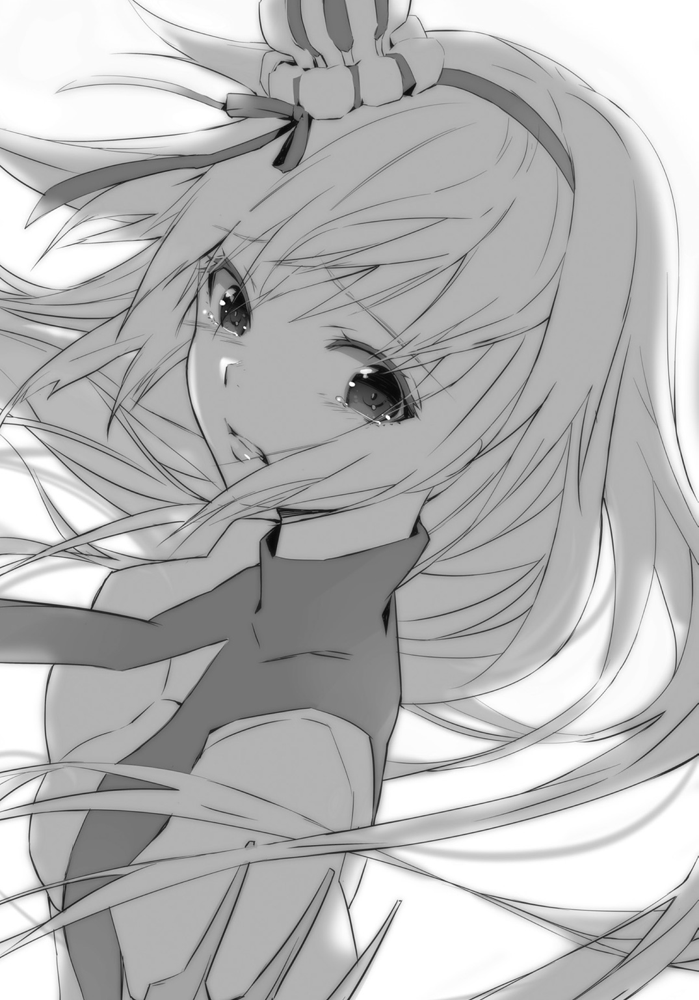

| サクラ×サク 02 ボクノ願イ叶ヱ給ヘ | |
| 十文字 青 | |
この本は縦書きでレイアウトされています。
また、ご覧になる機種により、表示の差が認められることがあります。


 ダッシュエックス文庫DIGITAL
ダッシュエックス文庫DIGITAL
サクラ×サク ０２
ボクノ願イ叶ヱ給ヘ
十文字 青


１ その名はアリス ALICE IS NOT HER NAME
――どこで間違ったのだろう？
ハイジ・バランは自分の人生について考えていた。
何しろ、考える時間はいくらでもある。腐るほどある。むしろ、考えるくらいしかやることがない、と言ったほうがいいくらいだ。
両手に手錠をかけられて、投獄されているのだから。
いや、正確には、拘束されている。
同じか。
少なくとも、似たようなものだ。
ここは軍居地下の拘禁室。軍紀に違反した者や、重要な捕虜を閉じこめておくための部屋だ。ようするにまあ、牢獄だ。
「......こんなはずじゃなかった......」
のどかなトクタリ邑で生まれ育ち、公立学校に進学して、友だちはできなかったが、というかある意味、友だちができなかったおかげで飛び級してしまい、軍人になった。デスティニア公国を脅かす敵と言えば、帝国だ。軍に入ったからには、貪欲な帝国の野望をくじく一助となりたい。
あとは昇進だ。実績をあげて昇進すれば、爵位がもらえる。給料が上がる。税金が減免される。爵位が上がれば、減税、果ては免税適用の範囲が、親兄弟、親族にまで広がる。
ハイジは公国と家族、一門のためにがんばるつもりだった。
何が間違いのもとだったのだろう？
「......どれ、なのかな......」
ハイジはうなだれた。
公立学校出の准士官として、最前線と言ってもいいだろうこのイエルヴァラ城市の第八公軍に配属された。それはいい。いや、いきなり最前線ってどうなんだという気もするので、あまりよくはないのだが、まあしょうがない。
任地でいきなり第八公軍の司令ピエール・アルトレッド中将が降ってきた。
与えられた任務というか役職が、太守付き侍官だった。
しかも、太守はデスティニア公ドリアン殿下の息女、第四公女だった。
そのことはハイジも赴任する前から知っていた。彼女が親の七光りではなく、若くして赫々たる軍功をあげていて、公国軍大将の階級を持っているという事実も、頭には入っていた。
東大陸の由緒ある名家の血を引く者の大半は、魔性という特別な力を生まれ持つ。というよりも、魔性という特別な力を持っているからこそ、彼ら、彼女らは王や公となり、支配階級を構成しえたのだ。
ゆえに当然、イエルヴァラ太守も魔性を有している。
でもまさか、単独で敵軍にどーんと突っこんでゆくようなでたらめな人だとは思ってもみなかった。
魔性がそんな芸当を可能にするめちゃくちゃな力だとも、正直、想像していなかった。
そして、そんな魔性をお持ちになっている公女殿下が、稀に見るというか、稀にも見ないほど美しい御方であって、しかも、汚部屋にお住まいで、服をちゃんとお召しになってくれなくて、まったくもって目の毒で――そのあたりは、良い点もあれば良くない点もあり、表裏一体という感じもなきにしもあらずだが、とにかく侍官としてお仕えするのは、控えめに言っても簡単ではない女性だった。
もっとも、太守サクラスティアリス・デスティニアリス大将閣下にして公女殿下が、お仕えし甲斐がある御方であることは間違いない。
姫。
それが適当な呼称だとの言質を一応とっているので、そう呼ばせていただいている。
どんな運命の悪戯か、姫の侍官になったことは栄誉であり、不運というよりは幸運だ。
ハイジは心の底からそう思っている。
『だって、わたしがやらなきゃ、人が死ぬもの』
戦場で姫がもらした言葉が、ハイジの脳裏にはしっかりと刻みこまれている。
とてつもない魔性を生まれ持ったとはいえ、なぜ姫が単身、敵軍に突撃するなんていう無茶をするのか。あれがその答えだったのだ。
ハイジは少しでもそんな姫のお力になりたい。姫のためなら何でもしたい。そうするべきだし、そうしなければならない。これは本当の、本心だ。
ただ、姫の侍官にならなければ、こんなことは起こらなかったんじゃないのか。
「......いや、そんなことはない、か......？」
よくわからない。
考えても、考えても、わからないのだ。
「僕に、魔性が......？」
ハイジは笑う。
「はは......ははは......はは......は......そんな馬鹿な......」
たしかに、おかしいことはおかしい。
廃王ジーク・ザラナスター率いる帝国軍を迎え撃った戦いは、克明に記憶している。
帝国軍の機士たちをばったばったと薙ぎ倒したのは姫だ。でも、姫に機士を討たせるだけ討たせて消耗させ、廃王ジークがとどめを刺すというのが相手の作戦だった。
ひょっとしたら、あのままだと、姫は廃王ジークに敗れていたかもしれない。
あくまで独力で決着をつけようとする姫の意思を無視して、ハイジは助太刀をした。
姫や廃王ジークと同じく、魔性を持っている侍女のルルチナ・リリーローエンやギチコならともかく、一介の、それも公立学校を卒業したばかりの少尉でしかないハイジが、なぜか加勢できてしまった。
あまつさえ、廃王ジークに深手を負わせて、撤退に追いこんだ。
我ながら、あのときの自分は速かった、と思う。
集中していたとか、絶好調だったとか、火事場の馬鹿力のようなものだとか、そういった理屈では説明がつかないくらい、身体が軽かった。よく動いた。速すぎた。
あのときのハイジは、明らかに尋常ではなかった。
きっと何か原因があるはずだ。それが魔性なのだと言われたら、否定しうる根拠は持ちあわせていない。
「......で、僕はどうなるんだろ......？」
見当もつかないが、明るい未来が待っているとはちょっと思えない。だって、こんなところに閉じこめられているくらいなのだ。
――もしかして。
一生このまま......とか？
それはないか。拘禁されつづけるとしても、どこかに移送されるだろう。たとえば、専門の監獄のような場所に。
いやでも、ハイジは公国に忠誠を誓っている軍人なのだ。もし仮に、本当に魔性があるとしたら、それがどんなものかはわからないが、公国のために使う。公国のため以外には決して使わないと誓ってもいい。というか、お願いだから誓わせて欲しい。
何も閉じこめることはないじゃないか。公国に害をなすようなことはしない。母国なのだ。両親もいるし、妹も、弟もいる。みんなこの公国で暮らしている。侍官として姫に、公女に仕えている。ハイジ・バランは公国に尽くす。身を粉にして働く。
「......どうして、こんなふうに牢屋に入れられなきゃならないんだ......？」
やはり、あれか。
魔性は王侯貴族のものだ。デスティニア公国でいえば、公家と一部の上流貴族が魔性を持っているという。ハイジは庶民だ。ド田舎育ちのド庶民と言っていい。とるにたらないはずのド庶民なのに、じつは魔性持ちでした――というのは、都合の悪い事実なのではないか？ なんというかこう......特権階級の権威に傷をつけるようなことだったりするとか？
もしそれが不都合な事実だったとしたら、どうする？
隠蔽してしまえばいい。どうやって？
「......抹殺」
そんな言葉が浮かんで、ハイジは震えあがった。――いや。ない......よね？ そんなひどい、恐ろしいことはしない......だろう。しない......はずだ。しないと思う。しないといいな。しない、でしょ？ するわけがない。
しないって。
そうだよ。あたりまえじゃないか。
信じろ。大丈夫だ。信じられない理由がどこにある？ 母国なのだ。ハイジは公国を大切に思っている。公国はすばらしい国だ。他の国については、軍事に関わる知識や、一般的なイメージくらいしかないので、比較するのは難しいが、公国がとりたてて悪い国だとは言えないと思う。少なくとも、帝国のように侵略しまくって戦争で被害者を出しまくっているような国とは違うはずだ。
抹殺。
軍人ではあっても、その前に公国の民でもあるハイジに、そんなことはしない。と思う。思いたい。――が。しかし。
「わあああああああああああああぁぁぁぁぁぁぁぁぁぁぁぁぁぁぁぁぁぁぁぁぁぁぁぁ......」
いったん考えはじめると止まらなくなった。頭の中がごちゃごちゃだ。
おかげで、足音も何も聞こえなかったらしい。唐突に扉が開いたので、ハイジは仰天した。
「――ひやぁぁっ!?」
「おっと」
誰だろう。通路から射しこむ明かりも逆光なので、どうも男性らしいということくらいしかわからない。
いや、ここが明るくても、その男の正体はやはり不明だろう。
男は奇妙な面で顔を覆っている。
「しばらくの間、拘束されていたわりには元気のようだね。ハイジ・バラン少尉」
「......え、と――ど、どちら様で......？」
「ぼくかい？ ぼくは、特別査問官だよ。肩書きは他にもいくつかないわけじゃないが、ここでは特別査問官と名乗っておくのが妥当だろう」
「特別......査問官」
「そうだよ、少尉」
特別査問官は面を外した。ハイジは息をのんだ。
アルトレッド司令は美男子だ。ありていに言って、ハイジは司令ほど見目形のすぐれた男性を見たことがない。もう、ない、ではなくて、なかった、と言わなければならないだろう。
特別査問官は笑みを浮かべている。こんなに心惹かれる笑顔というものが世にあっていいのか。もしハイジが女なら、確実に見とれることだろう。いや、ハイジは男だが、じつのところ見とれていた。
「ぼくはデュランタリアン・デスティニアリス。よければ、デュランと呼んでくれ。デュランタリアンという名は、いささか長いからね。そうは思わない？」
「......は、はい。いえ......あの、えっ......？」
ハイジは脳内で反芻した。――デュランタリアン・デスティニアリス。
デスティニアリス？
「ぼくは、我がデスティニア公国には現在、たった一人しかいない特別査問官――」
デュランが目を細めると、紫色の瞳がきらきらと輝いた。
「
 なんだ」
なんだ」
×
デュランは――どうも、公家に連なる者らしい、つまり、公国に於いてはこれ以上ないくらい高貴な身分らしい、異様なほどの美貌を誇る男は、ハイジを拘禁室から出して、軍居の一室に連れこんだ。この男がいると、素っ気ない部屋の簡素な調度さえ、すべて上等で品がいい物に見えてくるから不思議だった。いや、というか、この男、などと思ってはいけないだろう。公立学校の卒業生ともあろう者が、迂闊なことに即座にはぴんとこなかったが、デュランタリアン・デスティニアリスといえば、ドリアン公の御令息だ。
公の御次男だ。
サクラスティアリス・デスティニアリス公女――姫の御令兄であらせられる。
とにかく、主筋だ。
失礼があってはならない。敬わなければならない。何を言われても、はい、はい、はい、畏まりました、だ。当然だ。身分が違いすぎる。ハイジ・バランはド庶民なのだ。
「さて――」
デュランは椅子を二つ、向かいあわせに置いて、一つにハイジを座らせ、もう一つに自分が座った。ハイジは背筋を伸ばした。
「は、はいっ」
「ああ、その前に」
デュランは微笑んでハイジの両膝あたりに目を落とした。両膝というか、両腿の上にある両手だろう。
「手錠を外したほうがいい？ 痛くはないかい？」
「......い、いえ。い、痛くは、べつに......」
「でも、窮屈だろう？」
「そ、それはその、そうですが......ぼ、僕、わ、私、じ、自分は、こ、拘束されているわけでありまして、ですからつまり......」
「真面目なんだね、少尉」
「お、お、お褒めにあずかり、光栄であります」
「いや、褒めてはいないよ」
「あぁっ。そ、そうなんですかっ!? も、申し訳ありません......」
「少しは褒めているかな？」
「あああああありがとうございますっ」
「少なくとも、好感を抱いていることは間違いないね。きみはいい子のようだ」
「そ、そんな......」
ハイジはうつむいて唇を嚙んだ。――胸にわきあがる、この感情。これは何だろう？
恥ずかしい？ 照れくさい？ とにかく、居ても立ってもいられない。でも、もちろん、座っているしかない。
「まあいい」
デュランは、ふっ、と短く、やさしく笑った。
「きみがそのままでかまわないと言うのなら、手錠は掛けておくよ。どちらにしても、ぼくのやることに変わりは――」
と、口をつぐんでしばらくしたら、部屋の扉が、どんっ、と開け放たれた。ハイジはのけぞって、倒れそうになった。久しぶりといえば久しぶりに明るい場所でまじまじと見ると、また格別のものがある。やはり別格で、超越的だ。
――完璧ですね！
ハイジは精神世界で片目をつぶって親指を立てた。現実世界では無理だった。意識のこちら側では完全に圧倒されている。その宝玉の瞳に、細く盛りあがっているのにまったく尖ったところのない鼻筋に、折れそうなほど繊細な顎のラインに、羽毛のようにやわらかそうな頰に、それから超自然的でかつ、自然すぎてまぶしすぎる肢体に、ハイジは恐れ入るしかない。姫はご立腹のようだった。その表情もまた圧巻と言うほかない。
「デュラン兄様......！」
「やあ、サクラ」
デュランは目を細めて片手をあげた。
「相変わらずひどい恰好をしているね」
「言うに事欠いて、一言目からそれ!?」
「一言目は『やあ、サクラ』だったろう？」
「へりくつ！」
「そうかな？ でも、その恰好は本当にひどい」
デュランの言葉を否定できる者はそう多くないだろう。
まったくもって、おっしゃるとおりです。
いつものことではあるのだが、姫は例の下着のようなものしか着ていない。ちょっと前まで拘禁室にいたハイジには刺激が強すぎて烈しすぎて強烈すぎる。これは見逃せない。いや、見てはいけない。目のやり場に困りまくって、いっそのこともう、自死してしまいたい。
「サクラ様」
姫の後ろから、小柄な金髪の侍女がガウン的なものをさしだした。ルルチナ・リリーローエンがいてくれなかったら、いろいろな意味で姫はどうなってしまうのだろう。大変なことになるのは間違いない。姫は舌打ちをしながらもガウンを受けとって羽織った。
「これで文句はないはず」
「前を留めたほうがいいと思うし、裸足はどうなんだろうね？」
「いちいちうるさい」
「サクラさまー。うがっ」
姫の後ろで、不道徳なまでに豊満きわまりない侍女がずこーんと転んだ。人形のチヌコも一緒に転倒したが、すぐに起きあがってギチコの手から吹っ飛んだスリッパを拾い、姫の足許に置いた。姫はスリッパを履いて、ふん、と鼻を鳴らした。
「これで完璧」
「サクラ。ぼくはおまえの将来が気がかりでならないよ。未来だけでなくて、現在もだが」
「まぬけなデュラン兄様に心配されるほど落ちぶれてはいない」
「間抜けとはご挨拶だね」
「何をしにきたの」
姫はちらっとハイジを見てから、デュランを睨みつけた。
「このイエルヴァラ城市で勝手なふるまいは、デュラン兄様といえども許さない。太守であるわたしの目が、黒いうちは」
「そういえば、ハイジ・バラン少尉の目はずいぶん黒いね」
「話をそらさないで！」
「いいや。これは大事なことだよ。おまえもぼくの役目はわかっているはずだ。こと疑い例の査問に関しては、特別査問官としてのぼくを制するのに、太守ごときの権限では足りない」
「......ぐ、ぐ、ぐ」

姫は両手を握りしめ、歯を食いしばって、本当に、ぐ、ぐ、ぐ、と声をもらしたのだ。なんというか、こんなふうにやりこめられている姫を、ハイジは初めて見た。
――この男、できる。
いや、この男、などと思ってはいけないのだが、姫をたやすくやりこめるあたりに、若干の畏敬だけではなくて、莫大な反感をどうしても覚えてしまう。僕の姫に何を......と、言葉にしてしまえばそういうことになるのかもしれないが、むろんハイジの姫ではない。
姫は部屋の中に入ってきた。
「たちあう」
「かまわないよ」
デュランは姫ににっこりと笑いかけた。好印象を抱かずにはいられない笑顔だ。嫌悪するのはなかなか、というか、かなり難しい。
「ぼくはべつに困りはしないからね。終わるまでじっくり見ているといい」
「断られても、そうさせてもらう」
「ギチコと――きみは、ルルチナだったかな？ きみたちも入るといい」
「それでは、失礼いたします」
ルルチナは一礼して入室し、ギチコは起きあがってずれた眼鏡の位置を直しながら部屋に入ろうとしたら、なぜか壁に足を引っかけてまた転びそうになった。それでもチヌコと一緒になんとか部屋に入り、扉を閉める際に一度、指を挟んだ。
「あぅだっ」
「......相変わらずだね。ギチコの不器用っぷりも」
さすがにデュランも呆れているようだ。稀代の美形でも呆れはする、ということか。それはまあ、するだろう。
何はともあれ、二人きりでなくなったので、ハイジにとってはちょっと気が楽に――なるわけもない。
ルルチナとギチコとチヌコはともかく、姫がじぃぃぃぃぃぃぃぃぃぃぃぃ......っとハイジを、正確にはハイジとデュランを見つめている。
正直、めちゃくちゃ緊張する。
「言うまでもないが――」
デュランは脚を組んで指先で前髪を払った。
「第八公軍司令ピエール・アルトレッド中将には話を通してある。ぼくはドリアン公の命のみを受けて任務を遂行する超法規的な存在といってもいい特別査問官だが、強引なやり方は好まない。波風はできるだけ立てない主義だ。ハイジ・バラン少尉。安心するといい。悪いようにはしないよ。きみが我が公国に仇をなさんとする邪悪な人間でなければ、だが」
「......ぼ、僕は！ 自分は......公国に仇を、なんて、そんなこと――」
「しぃっ」
デュランは身を乗りだして、ハイジの唇に人差し指を当てた。
「きみはしゃべらなくていい。ぼくがきみを視るから」
「......視る？」
「しゃべるな。いや、うなずくのもいらない。首を振らなくていい。ぼくがきみを視る。ぼくには視えるのだからね」
デュランの紫色の双眸が光を放っている。――魔性。
魔性見なんだ、と言っていた。
ハイジはデュランの瞳から目を離すことができない。
なんて――なんて、深い瞳だろう。光輝く紫色の光彩は明け方の空のようで、黒い瞳孔はどこまでもつづく穴のようだ。
「〝


 〟」
〟」
デュランが囁いた。
穴の奥で、デュランが手招きをしている。
こっちへおいで、と。
行くしかないのだ。ハイジに拒否権はない。
拒みたくもない。むしろ、行きたくてたまらないくらいだ。そこに行くのが正しい。
――そこ？
そこって......？
ここだよ、とデュランが道を示している。ハイジはただ進めばいいのだ。
でも、道がない。闇だ。何も見えない。デュランもいない。戸惑っていると、背中を押された。誰だろう？ わからない。誰かがそばにいる。寄り添っている。手を引かれて、闇の中を上ってゆく。まるで階段だ。一段ごとに上昇する。夜なのか？ 夜空を駆け上っているかのようだ。どこまでもどこまでも上ってゆく。怖い。不安もある。息苦しい。大丈夫だよ、と誰かが元気づけてくれる。心配しなくていい。そうだ。大丈夫だ。上がれ。上がってゆけ。
そして、とうとうたどりついた。
ここはどこなのだろう？
月の裏側だよ、と誰かが教えてくれる。だが、誰もいない。
何も見えない。
闇だ。
真の、闇。
......助けて。
ここは、暗い。暗すぎる。
助けて。
自分の声も聞こえない。音がない。無音。感覚がない。手は？ 足は？ わからない。
助けて！
叫んでいるつもりだ。――叫ぶ？
声。
誰の？
自分？
自分とは？
どこなんだ、ここは？
――もしかして。
目。
瞳孔の中？
デュランタリアン・デスティニアリス、あなたは――、
「落ちつくんだ、少尉」
声がする。
デュランの声だ。
「息を吸って。......吐いて。......そう。ゆっくりと。深呼吸をして」
ぼんやりと――光を感じはじめた。見えてくる。
感じる。
いる。自分自身が、ここに。
椅子だ。ハイジは椅子に座っている。あの部屋だ。向かいの椅子にはデュランが脚を組んで座り、少しだけ首をかたむけて微笑んでいる。
「月の裏側はどうだった？」
「......どう――って。月の......裏側？」
「この人のたわごとを聞く必要はない」
姫が口を挟んで、薔薇のしずくを溶かしこんだような白金の髪をかきあげた。
「それで、どうなの。デュラン兄様。少尉の魔性は」
「興味深いよ」
デュランは口の前で両手を合わせた。
「とても興味深い。その前に、確認しておきたいことがある。少尉、きみは公立学校で武術教官と試合をして、勝ったようだね」
「......あ、はい。そ、それが、何か......？」
「武術教官との試合で、きみは一度も負けなかった。そう記録にある」
「ぐ、偶然だと思います。まぐれというか。それに、初めはおそらく、教官は油断なさっていたんじゃないかと......」
「武術教官はゲレール・ルドルンド？」
「はい。おっしゃるとおりです」
「彼は子爵家の三男で、魔性を持っている。潜在等級はＤで、最低ランク。かなり弱い魔性ではあるけどね」
「......そ、そうだったんですか。え？ で......それが何か？」
「きみは武術教官と試合をしたとき、よく動けるような気がしなかったかい？」
「しました」
ハイジは即答した。事実、そうだったからだ。相手がすぐれていればすぐれているだけ、触発されてこちらも力を発揮できるのだろう。そんなふうに考えていたが――不思議だと思ったことがないわけじゃない。
「少尉。簡単に言うと、それがきみの魔性だよ」
「......よく、動ける？」
ルルチナが細い眉をひそめて呟いた。
「魔性に反応するということですか？」
「んにゃあ？」
ギチコは何か考えようとして、結果、ぼうっとしている――のか......？ だとしたら、ぼうっとしすぎて危険な領域に踏みこんでいるに違いない。やばい表情だ。軽くイッちゃってる。
「そのとおり」
デュランは両手を広げて脚を組みかえた。
「近くに魔性を持つ者がいることで、少尉の魔性は発動する。つまり、自動型ということになるね。系統としては、強化系。魔性持ちがそばにいればいるほど、少尉は単純に強くなる。筋肉や神経の働きではないが、筋力が増強されるような形で、少尉の魔性は発現するはずだ」
「いればいるほど、とおっしゃいましたか？」
ルルチナが尋ねると、デュランは鷹揚にうなずいた。
「ぼくはたしかにそう言ったよ。いればいるほど、とね。つけくわえるなら、魔性の強度も影響するようだ。まとめると、魔性持ちがそばにいればいるほど、その魔性が強ければ強いほど、少尉は強くなる」
ルルチナは顔をしかめて唇を動かした。
声は聞こえなかったが、なんかずるい、と言ったのではないかと思う。
「これは」
と、デュランはふたたび口の前で両手をあわせた。
「なかなかすばらしい魔性だね。ハイジ・バラン少尉。きみやきみのご家族の来歴はすべて調べさせてもらったが、ありていに言って身分のある者の血は一滴も入っていない。少なくとも、調べられる範囲においては。ずっと昔のことまではわからないがね。ともかく、そういった者がこうした魔性を生まれ持つことは非常に、非常に稀だ」
「......それを、僕は――どう受け止めるべきなんでしょうか」
「ん？」
「僕に、魔性があるとして......ですがそれは、たまたまというか......僕が獲得したものじゃありませんし、望んだわけでも、望まなかったわけでもなく、だから、ええと......」
「一つ言っておこう、少尉」
「はい」
「ぼくは嫌いだな。そういう考え方は」
「......は？」
「望むと望まざるとにかかわらず、人はいろいろなものを背負い、また、欠けたまま、生まれてくるものだよ。語弊があるかもしれないが、ぼくは世界神カバラが定め給う運命を信じていない。ただし、運命というものはあると思っている。生まれた瞬間に与えられるもの、与えられなかったものこそが、それだ。その運命からだけは、人は誰も逃れることはできない」
「運命からは......逃れられない」
「ああ。きみはそれを受け容れるべきだ。というよりも、受け容れるしかない」
「少尉」
呼ばれて見ると、姫はたいそうご機嫌が斜めのご様子だった。
「その人の言うことは聞いちゃだめ。ペテン師だから」
「......あ、はい。え。で、ですが、今のは......」
「口八丁手八丁で人をだまくらかして、いいように操るのが、その人のやり口」
「そ、そうなんですかっ!? じゃあ、気をつけないと......」
「くっ......」
デュランは噴きだしかけて、手を口で押さえた。
「ずいぶんとまあ、素直な子だね。サクラ、おまえの新しい侍官が魔性持ちらしいというから、いったいどんな男なのかと心配だったが、これは予想外だ。一度ならず二度までもおまえの命を狙う刺客だという線は、とりあえずなさそうだな」
「心配なんか、してないくせに」
「ぼくはおまえの兄だよ、サクラ。いつでもおまえの幸せを願っている。誰よりもね」
「かえって不幸になりそうだからやめて」
「おまえがぼくの妹としてこの世に生を受けた以上、ぼくに幸せを願われるのも運命だよ。おまえは受け容れるしかない」
「絶対、いや」
「やれやれ。強情だな。ぼくのきょうだいは、誰も彼も。――ところで、少尉」
「は、はいっ」
ハイジが背筋をのばして表情を引きしめると、デュランは失笑しそうになった。
「きみはこれからいくつかの手続きを経て、誓約を立てれば、原隊に復帰することが可能となる。もちろん、きみがそれを望めば、だが」
「望みます！」
「早いな。望まなければどうなるのか、訊かれるかと思ったが」
そんなことを訊く必要があるだろうか？
もしかすると、デュランはハイジのことを馬鹿だと思っているのかもしれない。いや、まあ、べつに賢くはないが、とくに頭がよくなくても、そのくらいのことは考えればわかる。魔性は国家が認証し、管理するのだ。公国が魔性を持つ者を自由にするわけがない。ちょっと怖かったが、ハイジはデュランの目を見すえた。
「僕は公国に忠誠を誓っている、姫の侍官です。これからもそうありつづけられるのでしたら、骨身を惜しまず任務に精励させていただく所存です」
「いいだろう」
デュランはハイジから視線をそらさずに答えた。
「では、きみの魔性に銘を与える。これも魔性見である特別査問官の仕事なのでね」
なんとなく緊張した。ハイジだけじゃない。姫やルルチナ、ギチコまで、息を詰めているような気配がある。人形のチヌコは、もともと息をしていないが。
「〝 〟」
〟」
デュランがその銘を口にした瞬間、ハイジは内臓がきゅっと縮まったような心地がした。
「潜在等級は、ＡＡ」
そして言い添えられたその言葉の意味が、ハイジにはよくわからない。しかし、姫もルルチナもギチコも驚いているようだ。とくにルルチナは眉をつりあげて――なんか、ひょっとして、怒ってません......？
「まあ、細かい説明はのちほど、ということにしようか。疑問に思うことも多々あるだろう。訊いてくれれば、ぼくに答えられることは答えるよ」
「あ......はい、お、お願いいたします。特別査問官......どの」
「デュランでいいよ。ぼくの美しさに対してふさわしい敬意を払ってさえくれれば、呼び方なんか何だってかまわない」
「そ......そうですか。い、いや、ですけど、呼び捨ては、さすがに......」
「だったら、普通に様づけはどうかな。妥当なところだろう？」
「デュランげすやろう、と！」
姫は胸を張ってデュランを指さした。
「呼んでやるといい。この人には、お似合い」
「おいおい、サクラ。そんなことを言われたら、いくら心が広いぼくでも、つい意地悪をしたくなってしまうよ」
「デュラン兄様の底意地が悪いのは生まれつき。性根から腐っていて、見るにたえない。ひどい有様」
「イエルヴァラ太守サクラスティアリス・デスティニアリス大将」
急にデュランの声音が変わった。顔つきも違う。美しいうえに冷たく厳かだ。
ギチコは、ぽかーん、としているが、ルルチナは顎を引いて少し腰を折り、畏まっている。ギチコが操っているはずなのに、チヌコはルルチナのように威儀を正しているのが謎だ。
姫は、一言で言うと、悔しそうだった。口をへの字に結んで、悔しいが、ここは黙って拝聴するしかない、といった風情だ。
「我、公国軍総司令部付軍特使デュランタリアン・デスティニアリス少将が、公国軍総帥ドリアン・デスティニアリスの名において命ずる」
デュランは懐から巻紙をとりだして、優雅に広げてみせた。
「第八公軍を率いてファウラス城市を攻略せよ。なお、本作戦行動にはナズナルリス・デスティニアリス少将の七六旅団も参加する。命令書を読むかい？」
「......いい」
姫の顔が青ざめている。
――ファウラス城市。
といえば、イエルヴァラの北に横たわるルヴァラ廃地の向こうだ。かつてはマウローという国の城市だった。現在は帝国の占領下にある。
攻略？ 攻めろというのか？ ルヴァラ廃地を越えてファウラス城市を陥落させろと？ 帝国軍の侵攻を防いだばかりなのに？ 姫にそれをやれというのか？
「読めよ」
デュランは命令書らしい広げた巻紙を姫に向かって突きだした。
「読め、サクラ。読んで、確認するんだ。おまえにはそうする義務がある。違うかい？」
「......っ！」
姫は命令書を引ったくって目を通すと、床に叩きつけようとした。
「サクラ様！」
ルルチナに制止されて、なんとか思いとどまってくれたようだ。姫は命令書をルルチナに手渡し、顎を上げて下目遣いでデュランを睨んだ。
「命令には、従う」
「そうじゃないだろう、サクラ？」
デュランは両眼を糸みたいに細めて目尻を思いきり下げ、唇の両端を引っぱるようにしてつりあげた。それでも美貌だ。かろうじて。しかし、見る者を愉快な気分には決してさせない。完全にその反対だ。
「ちゃんとお言い。おまえは軍人で、太守なんだよ。つまり、おまえは公国の犬だ。犬なら犬らしくしろ。幼いころから、ぼくはおまえにそう教えてきただろう？」
「わたしが犬なら、デュラン兄様も同じでしょ」
「だから何だい？ ぼくが犬だからといって、おまえが犬であることは変わらないよ。さあ、サクラ、上等な犬だということを示してみせろ。鳴くんじゃないよ。泣いたりせずに、人間の言葉を話してみろ」
「......命令を」
姫は顎を小刻みに震わせている。デュランは無慈悲に首を横に振った。
「違う」
「ご命令！」
「そう。そうだよ、サクラ。次は？」
「つ......」
「それだ」
「つつ、しんで」
「がんばれ」
「......うけた、たわまり」
「そこで嚙むなよ、サクラ。台無しじゃないか」
「う、うけたまわります！ これでいいでしょ！」
「これでいいでしょ、は余計だよ、サクラ。おまえはダメな犬だ。罰が必要だな」
デュランはハイジに向きなおって、今度はとびきり感じのいい笑みを浮かべた。
「ハイジ・バラン少尉。誓約を立てれば、きみは原隊に復帰できる。ただし、魔性を持った者を太守の側近く仕えさせることについては、諸般の事情を鑑みるに慎重になるべきだろうね。よって、ぼくはアルトレッド司令に配置換えを提案することになると思う。司令はぼくの懸念を正当であると判断し、これを拒むことはないだろうな」
「......つまり――」
ハイジはうつむいた。というより、勝手に首から、それから肩からも力が抜けて、顔が下を向いてしまった。
「僕は、姫の侍官じゃ......なくなる......？」
×
もともと、なりたくて侍官になったわけじゃない。あたりまえだ。
ハイジ・バランは軍人なのだ。軍人は命令に従わないといけない。公立学校で、とくに軍人課程に進んでからは、命に服することの重要性を教えこまれた。たった一人の命令違反が原因で、組織の運営に齟齬を来しかねない。場合によっては崩壊してしまうかもしれない。命令に正しく反応できるように、厳しい訓練も受けた。否やはない。命令には従う。それが軍人だ。
拘束されたときに没収されたカバラの剣、宝剣ワイバーンは返却された。
司令部に呼びだされて、アルトレッド司令からハイジに辞令が下りた。
「ハイジ・バラン少尉。貴官に、本日四月十八日付けで我が第八公軍第一連隊連隊長付伝習士官の任に就くことを命ずる」
「はっ！」
ハイジは左胸に右の手刀をあてる公国軍式の敬礼でもってこれに応えた。
「ハイジ・バラン少尉は第八公軍第一連隊連隊長付伝習士官の任に就かせていただきます！」
「......うん。なんだか、こう......すまないね」
「えっ。な、何がですか......？」
「涙目になっているよ」
「えぇっ!? そ、そんな馬鹿なっ......」
ハイジは目の周りを手でこすってみた。たしかに、いくらか濡れている。気づいていなかったが、涙ぐんでいたようだ。
司令は咳きこみながら、申し訳なさそうに眉をひそめた。
「私としては......んんっ......ハイジくんには引きつづき、姫の侍官として精勤してもらいたかったのだが......デュランタリアン殿下のおっしゃることにも一理あると、認めざるをえない。ごほっ、ぐはっ、ぶはっ......おぅっ......」
倒れそうになった司令を、銀髪美髭のリオネル・カーター大佐が支えた。
「司令、椅子におかけになってください」
「......いや、大丈夫」
「しっ、れぇー」
ローラン・ダンドリュー大佐が無精髭の生えた顎を手でこすりながら、目で椅子を示した。
司令はやれやれとため息をつき、しょうがないなあとでも思っていそうな態度で椅子に腰を下ろした。カーター大佐もダンドリュー大佐も、それはこっちの台詞だと言いたげだ。
「ともかく――」
司令はハンカチで口を押さえながら、さらに二、三度、咳をした。
「そのような次第だから......ぐふっ......ハイジくんは以後、ここにいるダンドリュー大佐の許で、士官としての振る舞いを......うぇっへんっ......学んでもらうことになる......」
「俺っていうか、実際は俺の副官に付くことになるが」
ダンドリュー大佐がハイジを見てニヤッと笑ってみせた。
「はっきり言って、うちは厳しいぞ。俺はこのとおりいつだってキチキチッとしてるし、副官どのときたらそれ以上だからな」
一分の隙もなく身にまとって当然の軍服すら着崩しているダンドリュー大佐がキチキチッとしているとはとても思えないが、そのぶん副官は生真面目な人なのかもしれない。
なんにせよ、ハイジとしては正直、あっそうですか、はいはい、どうでもいいです、という気持ちを捨てきることは難しい。でも、捨て去らないといけないのだ。すっきりと。完全に。
ハイジはダンドリュー大佐に向かって敬礼をした。
「よろしくお願いいたします......」
「若いのに、ずいぶん元気がねえなあ」
「も、申し訳ありません......」
「まあ、よろしくな」
ダンドリュー大佐に肩を叩かれると、また涙がにじみそうになった。――いけない。
こんなことではだめだ。
ハイジはさっそく部屋へ急行して、わずかな私物をまとめることにした。姫の私室の隣の隣。侍官でなくなってしまったので、この部屋とはおさらばだ。
部屋へ向かう途中で姫に会えたりしないだろうか。内心、期待していたが、そんなことは起こらなかった。窓を開けて、姫の部屋のほうをうかがってみた。窓は開いているようだが、人の気配はない。もしかすると、姫は私室にいないのかもしれない。
荷物を持って廊下に出ると、巨大な洗濯籠を片手で軽々と持っているルルチナに遭遇した。
ルルチナはぺこっと頭を下げて、通りすぎてゆこうとしたが、立ち止まってくれた。
「第一連隊に配属されたとか」
「......あっ、はい、そ、そうです。ダンドリュー大佐のご厄介になることになりました」
「さようでございますか」
「は、はい、あの――」
姫は、どうされていますか......？
尋ねたかった。
だが、ハイジはもう侍官ではない。姫の様子をうかがうなど、職分を超えている。姫は太守で、公国軍大将なのだ。一新米士官には遠い、あまりにも遠すぎる存在だ。
「......ええと――その......どうか、お元気で」
「ありがとうございます。少尉もお身体にお気をつけて、軍務に励まれてくださいませ」
「は、はいっ」
「それでは、失礼いたします」
ルルチナは一礼して、行ってしまった。これで――、
これっぽっちで終わりなのか。
勇気を出して、姫のことを訊けばよかった。でも、訊いてどうする？ どうなる？ どうにもならない。
辞令を受けて今に至るまでの短い間に、いったい何度、思ったことだろう。これから何度、思い知らされることになるのだろう。
ハイジ・バランはもう、姫の侍官ではないのだ。
そのうち慣れるさ、と自分に言い聞かせながら、ハイジは後ろ髪を引かれる思いで本殿をあとにした。太守の私室や居室、執務室、謁見室、それから金庫や宝物庫などがある本殿には、二度と足を踏み入れることはないかもしれない。
主郭を出て、城市内の北東に位置する第八公軍駐屯地に直行した。第一連隊の陣営に到着すると、連隊司令部に案内されて、エミール・ブリュレ大尉と対面することになった。
中肉中背、髪は褐色で、瞳は茶色い、どういう男と説明するのが大変困難な、同じ年ごろの男性が百人いれば七十五人くらいはどこかしら似通っていそうな男が、連隊長室の真ん中で立ったまま書類を読んでいた。軍服を着ていなかったら、本当に目立たないだろう。というか、軍服を着ていても人目を引くことはなさそうだ。かといって、凡庸そうかというと、そんなことはない。うっかりすると見逃してしまうが、よく見れば切れ者だと誰でも思うだろう。その眼差しは鋭いし、立ち姿に隙がない。机と椅子は連隊長用なので、副官の自分は何があっても絶対に使わないという固い意思が感じられる。この人はきっと、ものすごく頑固だ。
「ハイジ・バラン少尉？」
ブリュレ大尉はハイジを一瞥すると、書類に目を戻した。
ハイジは敬礼をした。
「はっ！ 辞令を受け本日付で第八公軍第一連隊に着任いたしました、ハイジ・バラン少尉であります！」
「諒解した」
「はっ！」
ハイジは敬礼したまま、じっとしていた。
どうすればいいのか、まったくわからない。
ブリュレ大尉は横目でハイジを見た。
「何をしている？」
「えっ......あ、はい、じ、自分は、司令からは、ダンドリュー大佐の許で、士官としての振る舞いを学べと......ダンドリュー大佐は、副官どのにつくことになると......で、ですので」
「何をすればいいのかわからない？」
「はい！ そのとおりであります！」
「よかろう、少尉。仕事を与える」
「ありがとうざいます！」
「仕事を探せ」
「はっ！」
――え......？
目を瞠って息をのんだハイジを、ブリュレ大尉がわずかに首を傾けて見る。
「どうした」
「......いえ」
「言っておくが、私の嫌いな軍人が二種類いる。一つは、無能そうには見えないのに無能な軍人。もう一つは、無能そうに見えて実際、無能な軍人だ。私は忙しいし、今はどこも手が足りんことはあっても余ることはない。わかったら出て行け」
「はっ！」
ハイジは連隊長室を辞した。
ようするに、あれだ。駐屯地に入る前から気づいていたが、戦争の準備で大忙しなのだ。新任の新米士官に手とり足とり教えてやる暇などない。せいぜい邪魔にならないように、雑用でもこなしていろ。そういうことなのだろう。燃えてきた。
ハイジは士官用営舎の場所と、新任士官に割り当てられている部屋をどうにか突き止めて、さっさと荷解きをした。それから連隊司令部に戻ると、しばらくの間は士官たちの動きを観察していた。
ときおり姫のことが頭をよぎったが、歯を食いしばって追い払った。目の前にやるべきことがあって、いっそありがたい。集中しろ。姫のことは忘れるのだ。
そのうち、連隊司令部の士官たちが連絡書を持って、しきりとあちこちを往復していることがわかってきた。一度に三枚も四枚もの連絡書を抱えて、何度もそれらを確認しながら連隊司令部から出てゆく士官もいる。
ハイジはそうした士官に声をかけた。
「新任のハイジ・バラン少尉であります！ お手伝いさせていただければ幸甚に存じます！」
何度か睨まれたり、無視されたりしたが、とうとう連絡書を一枚、預かることができた。連絡書を読めば、どこに行けばいいのかはわかる。駐屯地の見取り図は頭に入っているので、どこに何があるのかくらいは覚えていた。連絡書を届けて連隊司令部に戻り、また士官に声をかける。何回かやっていると、士官のほうからお呼びがかかるようになった。そうこうしているうちに、一日が終わった。
営舎の部屋は四人部屋で、ドゥルー中尉、フォラン中尉、ギャン少尉と同室だった。ギャン少尉はハイジほどではないが若く、ドゥルー中尉は三十年配、フォラン中尉はその中間といったところだ。
最初は三人ともあれこれ話しかけてくれたが、ハイジがいちいちどもったりうまく返事ができなかったりするもので、気まずい雰囲気になった。決まりきった定型的な台詞ならいくらでも言えるのに、どうしてまともに対話できないのだろう？ 自己嫌悪に陥ると、余計にしゃべれなくなる。黙りこくっているハイジを、三人は次第に空気みたいに扱うようなった。まあ、いつものパターンだ。これはこれでいい。慣れている。
部屋が真っ暗になっても、姫のことを考えてしまい、なかなか寝つけなかった。
もう会えないのだろうか？
いや、そんなことはないだろう。
第八公軍はファウラス城市へと進軍する。防衛のための部隊をイエルヴァラに残すに違いないが、今日、往復する連絡書を見ていた感じだと、第一連隊は作戦に参加するようだ。
デュランは姫に、第八公軍を率いてファウラス城市を攻略せよ、と命じた。当然のことながら、姫もファウラスへと向かう。
ハイジは姫と同じ戦場に立つことになるのだ。
とはいえ、侍官だったときのように、姫のそばで戦うことはできないだろう。ハイジは第一連隊の一員として、歯車の一つとして、動くことになる。
そもそも、軍人というのはそういうものだ。
イエルヴァラに赴任する前は、そのつもりでいた。
なまじ姫の侍官になんかなってしまったのがよくなかった。そのせいで、どうもおかしなことを考えてしまう。
これでいいのか、と。
自分にはもっとできることが、やるべきことがあるんじゃないのか。
――魔性を持っている自分には。
「馬鹿なことを......！」
つい叫んでしまって、同室の先輩士官たちを起こしてしまった。
「何だ!?」
「どうした!?」
「誰だ、今の!?」
「ご、ごめんなさい！ ね、寝言です！ すみません！ 本当に......」
先輩士官たちはぶつくさ言いながらもすぐに眠ったようだが、ハイジはそれからも悶々として朝方まで起きていた。少しだけ睡眠をとって、二日目も連絡書の配達を手伝いまくり、たまに姫のことを思った。
ときどき下士官に声をかけられて、何だかんだと相談を持ちかけられた。これを処理しつつ連絡書を回しているうちに、二日目も終わった。ギャン少尉だけが寝る前に、おやすみ、と言ってくれた。うれしすぎて動転してしまい、とっさに何も返せなかった。
「......なんで僕はこうなんだろ......」
真っ暗な寝台で思わず呟くと、ドゥルー中尉かフォラン中尉が咳払いをした。謝るべきか。いや、謝罪をするのに声を出したりしたら、かえってうるさいかもしれない。黙っていたほうがいい――のか？ 翌朝、謝ればいいか。いやしかし、明日になったら中尉は忘れているかもしれない。謝ったところで、戸惑わせてしまうだけかも。そもそも、どっちの中尉に謝ればいいのかわからない。だめだ。謝れない。でも、謝らなくて、本当にいいのか......。
姫ならきっと、投げやりに言うだろう。
『好きにすれば？』
とか、なんとか。
『どうでもいい。そんなの』
みたいなことも言いそうだ。
あげくの果てに、たぶんこうくる。
『ていうか、うざい。ほんとに。めんどくさくて、消え去りたい......』
あの散らかった寝台の上で横になって、おなかのところで両手を組みあわせている姫の姿が目に浮かぶ。
うざい、とか、めんどくさい、とか、どうでもいい、とか、姫には言ってもらいたくなかった。もっと前向きになって欲しい。どうすれば姫は、楽しいこと、明るくなれることに目を向けてくれるだろう？
姫に笑ってもらいたい。
できることなら、いつも笑っていて欲しい。
ああ、でも、今は姫の後ろ向きな言葉の数々が懐かしい。
『うざい』
と言われたい。
『めんどくさい』
と姫がめんどくさそうな顔をしているところが見たい。
『消え去りたい......』
だめですよ、姫！
そうやってすぐさま出すぎたことを言いたい。
姫が消え去ったりしたら、困ります！
『誰が困るっていうの？』
そりゃあ......。
いろいろですよ。困る人なんて、いくらでもいますよ。ルルチナさんは姫のことをものすごく大切に思っていますし、ギチコさんだってそうだし、司令だって、あれで姫のことを心配してるんですよ。
――もちろん、僕だって。
『だけど、少尉はもう、わたしの侍官じゃないでしょ』
心臓が止まりそうになった。
どうせなら、止まってしまえばいいのに。
「消え去りたい......」
ハイジは呟いてみた。咳払いは返ってこなかった。鼾や寝息が聞こえる。同室の三人はよく眠っているらしい。
×
「――報告は以上です」
そう言って口を閉じた門馬末麿の目は伏せられている。咎埜不人にはその理由がよくわかっていた。
門馬は不人を直視したくないのだ。
「......ご苦労様です」
不人がうなずいてみせると、門馬はそっとため息をついた。
「それでは、某はこれにて」
「......引きつづき、よろしくお願いいたします」
「御意」
門馬は腕組みをしつつ額を押さえる敬礼をして、踵を返した。緞帳を開けて薄暗い総監室から出てゆこうとしている。不人は呼び止めた。
「......門馬様」
「は」
門馬は振り返った。三十絡みで、口髭を尖らせている門馬は、やはり不人と目を合わせようとしない。身にまとう緑色の衛服は臣十三位を示している。対して、不人が来ている衛服は藍色だ。臣十二位を示す。
不人は己の年齢を知らないが、おそらく二十かそこらだろう。門馬は十ばかりも不人より年長なのに、臣位は下なのだ。おもしろいわけがない。しかも、不人の出自が出自だ。
「......イエルヴァラの第八公軍に増援があるとの報を受けております」
「いずこからの報せでしょうか」
「......別口からです」
「なるほど」
門馬はかすかに顔をゆがめた。ファウラス占領団内に創設された調査部の部長を任されている門馬にしてみれば、不人が別口から情報をえているという事実は不愉快だろう。不人としても、これ以上、門馬に臍を曲げられたくはないのだが、入手した情報を隠しておくほうが有害だと判断せざるをえなかった。
「......探ってください。相手の戦力を正確に把握しておきたい」
「御意」
「......お願いいたします、門馬様」
「咎埜助監」
門馬は咳払いをした。
「どうか、おやめください」
「......何をやめればよいのでしょう？」
「某を呼ぶ際、様などと付けるのはおよしいただきたい。咎埜助監は某の上官であらせられます」
「......申し訳ありません。以後、気をつけることといたします」
「そう願いたい。それでは」
門馬は言い捨てて退室した。下賤の者にへりくだられるのも、それはそれで腹立たしいということなのだろう。不人は顎を撫でた。
「......難しいものだ」
不人も緞帳をくぐって総監室を出た。直そうと心がけているのだが、気がつくと猫背になっている。衛服姿の者は必ず不人の前では足を止め、胸の前で腕を交差させて腰を折った。屋外では状況によって会釈ですませてもいいことになっているが、屋内では臣位の下の者が臣位の上の者にそうやって平礼をしなければならない。ファウラス占領団に不人より臣位が上の者は一人しかいないので、誰も彼もに平礼をされる。臣位は不人のほうが上でも、不人ほど生まれが卑しい者は一人もいないだろう。
今も廊下ですれ違った者が、不人の背中に向けて呟いているように思えてならない。
「元自由民が......」と。
振り向いて確かめたいが、もし目が合ったりしたらどうすればいい？
蔑まれても、不平や不満を抱く者がいても、やむをえないと不人は思っている。
事実だからだ。
咎埜不人はたしかに自由民だった。
帝国における自由民とは、身分がない――奴隷である下位ですらない者で、人間扱いどころか、物扱いもされない。多くの場合は徹底的に無視される。過去、重罪を犯して、人間社会から放逐された者たちの末裔と考えられているが、何しろ存在価値を認められていないのが自由民なので、その起源も定かではないのだ。
不人は高貴な者の気まぐれで下七位の奴隷となり、買いかぶりだと思うが才能を認められ、人位を飛び越して臣位まで与えられた。
奴隷ですらなかった塵同然の自由民が、帝国に養われる人民どころか、帝国の発展に尽くすことが許される臣民に成り上がったのだ。
例がないわけではないが、きわめて稀であることは間違いない。そんな元自由民の命令を受けて働かねばならない者たちの気持ちは、察するにあまりある。
それでも、不人がもう少し見栄えのする、見るからに立派な男であれば、まだ彼らも納得できるかもしれない。
ところが不人ときたら、背ばかり大きくてひどく姿勢が悪い。我ながら、ひざまずいたりうずくまったりするのが似合う体型だと思う。しかも、二十歳くらいのはずなのに、若白髪で半白だ。瞳はへどろのような濁った色をしている。たまに鏡を見ると、不人自身、気が沈む。
――おれはこんなところで何をやっているんだ......。
一日に何十回も、不人はそう自分に問いかける。
答えは決まっていた。
なすべきことをなすために、不人はここにいる。
ファウラス主郭の天守は楼閣状の建物だ。その最上階は四面の壁を窓のように開け放つことができて、城市全体を一望できる。
階段を上ってゆくと、風を感じた。壁を開放しているのに違いない。灯りはつけていないようだ。声をかけるか、かけまいか、不人は迷った。彼の主人は高所と闇を好む。そして、夜、高い場所で物思いに耽ることを何よりも愛している。妨げたくない。
まだ夜着に着替えて就寝するような時間ではないし、主人はそもそも宵っ張りだ。問題はないだろう、という読みもあった。不人は階段を上がって、のけぞりかけた。
主人はちゃんと、宮家軍人にしか着用できない、特別な衛服を身につけてはいた。
まあ、禁衣と呼ばれるその衛服自体、不人からすると、いったいどうなのかと思わなくもないのだが。
何しろ、禁衣はごくごく薄い絹のような繊維でできていて、これ以上ないほど躰に密着している。そのため、輪郭という輪郭が、細かいというか微妙な部分まではっきりとわかるのだ。とくに女人は、肌を晒しているのと大差ないようにも見えるので、目のやり場に困る。
あんなものを着ていて、主人は恥ずかしくないのだろうか？
不人はいまだに不思議でならないのだが、当の主人はまるで平気そうだ。高貴な者というのはまったく、主人にしても、また、不人を拾いあげた主人の祖父君にしても、下賤の身には理解しがたいところがある。
とはいえ、主人の禁衣姿はいいかげん不人も見慣れている。凝視しさえしなければ、どうということはない。
だが、これはだめだ。
まずい。
大いにまずい。
主人は頭冠を外していたのだ。
冠は頭にかぶるものなので、頭冠というと重言的な名称だが、帝国の高貴な者は頭部を、とくに髪の毛を人に見せない。それで、頭髪を模したような冠で髪を隠すのだ。どうやら、髪は魂と繫がっているという考えが昔あって、そのあたりが由来している風習らしいが、庶民はともかく、高貴な者たちは今もこれを頑なに守っている。
不人の主人も、もちろんそうだ。
少年のころから主人に仕えているが、これまで一度も彼女の髪を目にしたことはない。
いや、なかった。
見てしまった。
部屋は暗かったが、ちょうど大きな月が夜空に浮かんでいた。主人の髪の毛は不人のそれとは違い、黒々としていた。まっすぐで、長かった。とても長くて真っ黒な髪が、夜風になびいて乱れていた。
不人は拝みそうになった。信心など皆無だが、これは拝むべきだった。拝むしかない。
同時に、罪悪感が襲ってきた。主人の髪を見てしまった。許される罪ではない。死して償うよりほかない。
だが、主人は不人に背を向けている。深く考えこんでいて、不人に気づいていないようだ。ここは一つ、見なかったことにしたほうが、主人のためなのではないか？ 不人はどうなってもかまわないが、主人に恥辱を味わわせたくはない。どうする？
「もしかして」
と、主人が言った。
声音はふだんと変わらない。不人の主人はまだ当年とって十七歳だが、沈着無比だ。めったなことではとりみださない。
「そこにいるのか、咎埜」
噓などつけるはずもない。偽りを言っても意味がない。
「......はい。亞璃簾様。ここにおります」
「寸刻。いや、暫時」
「......はい」
「戻れ。そうしたら」
「......はい？」
「出て行ってくれ、と言っている！」
主人の怒鳴り声を聞いたのは、これが初めてかもしれない。
「そうして、少ししたら戻ってこい！ 頭冠を、つけるから......その間に......」
「......は、はい！ 申し訳ありませんでした！」
不人は急いで階段を下りた。下の階につくと、立っていられなくなって四つん這いになった。もうだめだ。生きてはいけない。なんということをしでかしてしまったのか。主人を動揺させてしまった。万死に値する。死ぬしかない。しかし、主人も怒るのだ。恥じ入って、声を荒らげることもあるのだ。それがなんとも、喜ばしいというかなんというか。――ああ、髪。
髪を見てしまった。
美しい髪だった。あんなに美しいものが世にあるのか。元自由民の、下賤の、塵同然の咎埜不人が目にするには、過ぎたるものだ。見てはいけなかった。
だが、しばらくしたら戻れ、と主人に命じられた。命令には従わねばならない。もういいだろうか？ まだか？ どうなのか？
ぐずぐずしていると、上から声が降りてきた。
「上がれ」
「......はいっ。只今！」
不人は大急ぎで階段を上がった。主人は頭冠をつけて、灯明に火を入れていた。切れ長の目の中でじっと動かない、灰色というより銀色の瞳は、いつもどおりの冷たく聡明そうな光を宿している。唇に白い顔料を塗っているのが、唯一の化粧だ。整ってはいるものの小作りな顔なので、唇が白くなければ実年齢より幼く見える。
不人はひざまずいて顔を伏せた。
「......さ、先ほどは、大変失礼つかまつりました。この上は、何なりとご処分を......」
「忘れろ」
「......ですが」
「忘れろと言っている」
主人の声が、わずかに揺れた。――不人にはそう感じられた。
「......はい。かしこまりました、亞璃簾様」
「面を上げろ」
「......はい」
主人にやれと言われれば、何でもする。不人は言われたとおりに顔を上げた。主人に見つめられると消えてしまいたくなるが、もちろん消えたりはしない。主人がそれを望まないかぎりは、決して。もし主人が望むのなら、一瞬で消え去るだろう。万難を排して。
「私はおまえの顔が嫌いだ、咎埜」
「......はい。申し訳ありません」
「なぜだかわかるか」
「......わかりません。申し訳ありません」
「卑屈だからだ。おまえは自分を醜いと思っているだろうが、そうじゃない。おまえの度しがたい卑屈さが、おまえを醜くしている。それは、やめろ。金輪際」
「......はい」
主人がやめろと言うのだ。やめるしかない。生まれ持ったかのような卑屈を捨てる。できるのか？ できなくても、やるのだ。なんとしても。
不人は立ちあがって、主人を見下ろした。不人は主人より頭一つ分どころではないくらい背が高い。卑屈を、捨てる。自分を卑しめてはならない。自らを卑しめることがない人間といえば？ 目の前にいる。主人だ。主人の真似をすればいい。
「......これでいいか」
「その口ぶりは生意気すぎるぞ」
「......そうですか」
「まあ、そのくらいにしておけ」
主人はほんの少しだけ目許をゆるめた。
乱れた長い黒髪が不人の脳裏をよぎった。それから、幼いころの主人の顔。ちょっとした表情。後ろ姿。ひざまずいて見上げたときの顎の細さ。主人が唇に白い顔料を塗るときの手つき。不人は主人のすべてを記憶している。
亞璃簾宮家の先代当主に拾われて奴隷となり、とりたてられて、亞璃簾宮太華子に仕えるようになった。
帝国では、皇帝家の血族である十四の宮家に生まれた者であっても、国家に貢献しなければ最下級の臣民でしかない。主人は軍人になることを選んだ。不人も当然、主人に従って軍に入った。これからも不人は主人から離れないだろう。
この命、果てるまで。
もし主人に捨てられたら、不人の命には価値がない。そのときは自ら死ぬまでだ。
「......亞璃簾様。公国が攻めてきます」
「ああ。わかっている」
主人はかすかに目を瞠った。
銀色の瞳に異様な燦めきが灯る。
その瞬間を、不人はことのほか愛していた。
「私に情報をよこせ、咎埜。全情報だ。策を練ろう。戦いだ」
２ すれ違うことさえ LONG WRONG DISTANCE
ハイジ・バランの日々は飛ぶように過ぎてゆく。姫のことを――いや、姫のことにかぎらず、何かを考える暇がない。考えなくてすむように、あえて忙しく動きまわっているのだ。
ファウラス城市攻略作戦には第一連隊の他、第四連隊、第五連隊、第七連隊が参加し、第二、第三、第六、第八連隊は残留する。第八公軍の戦闘要員総勢二万名余の約半数が、ルヴァラ廃地を越えて戦いに赴くということだ。これに輸送や医療などに携わる非戦闘員が加わるので、一万三千名を超える。大部隊だ。
ハイジは第一連隊の副官エミール・ブリュレ大尉の下につく恰好に一応なっている。従って、第一連隊約二千五百名がつつがなく廃地を通り抜けてファウラス城市に到着し、戦闘を行って無事、イエルヴァラに戻ってくることができるように手配するのが仕事だ。
まあ、正確には、無数と言ってもいいほどたくさんあるそうした手配の手伝いをするのがハイジの役目、ということになる。
これがけっこうおもしろい。
想定し、計画を立てて、検討し、やるべきことをリストアップして、チェックする。
たとえるならそれは、山あり谷ありのでこぼこ道を平らにして、きれいな道に仕上げるような作業だ。地図と人員と物資の名と数字を見比べて、小さな穴を探す。穴を見つけたら一つ一つ埋める。そうして皆で一致団結して道を切り開いてゆく。
ただ、現在、誰が何をしていて、どこまでの道ができているのか、実質的な統括者であるブリュレ大尉以外は把握していないようだ。他の士官はいちいちブリュレ大尉に訊かないと全体を見通せないので、連絡の行き違い、作業の重複といったトラブルがしばしば起きた。
やはり関係者全員が随時、進捗状況を確認できたほうがいい。そのために、公立学校で使っている黒板と白墨を用いてはどうかと、ハイジはおそるおそる――本当にこわごわと、叱責どころか処罰されることを覚悟したうえで、ブリュレ大尉に具申した。
大尉はあっさりハイジの意見を容れた。
「よかろう。黒板及び白墨の調達も貴官に任せる。やってみろ」
「は、はい！ ありがとうございます！」
イエルヴァラくらい大きな街なら、私学の一つや二つは絶対にある。黒板と白墨自体、どこかの私学で使われていたものを採用したという話を、いつだったか耳にした。
案の定、とある私学の倉庫に古い黒板があったので、譲り受けたそれを荷車に載せて連隊司令部に運びこんだ。白墨は裕福な子供が石畳に落書きするのにも使うくらいだから、いくらでも手に入る。ハイジは黒板におおまかな行動計画と表をいくつか描いて、何がどう進んでいるのか一目でわかるようにした。
士官たちはさすがに聡明だ。少しすると皆、黒板を独自に活用するようになって、表が改良され、仕事が劇的に捗るようになった。
「よお、少尉」
いろいろな筆跡でさまざまなことが書きこまれている黒板を感無量で眺めていたら、ダンドリュー大佐に小突かれた。
「おまえさん、妙なことを考えるな。軍人より公吏のほうが向いてるんじゃないのか」
「......そうかもしれないです」
「よかったんだものな、学校の成績」
「べ、勉強くらいしか、やることがなかっただけなので......」
「何だ、そりゃ。落ちこぼれだった俺に対する嫌味か？」
「えっ。お、落ちこぼれで、いらしたんですか......？」
「講義はだいたい寝てたからな」
ダンドリュー大佐は無精髭がこびりついている顎を撫でた。
「講義がないときは、女と寝てたが」
「......ね、寝てばかり――で、いらっしゃったんですね......」
「いや、そこじゃねえだろ」
「はい？」
「突っこみどころだ」
「......突っこみ？ も、申し訳ありません、ちょっと、僕、いえ、自分ごときの頭の程度では、理解しがたく......」
「救えねえな」
ダンドリュー大佐は額を押さえてため息をついた。さっきから気付いていたが、どうも顔色が悪い。
ハイジは上目遣いでダンドリュー大佐を見た。
「あ、あの、大佐」
「何だ」
「お水をお持ちしましょうか」
「ああ？」
「ひょっとして、二日酔いでいらっしゃるのではないかと......」
「そのとおりだけどな。無駄に気が利くのもどうかと思うぞ。俺は司令じゃないから、自分の面倒くらい自分で見られる」
「も、申し訳ありません！ 以後、気をつけます......」
「バラン少尉」
いきなり鋭い声で名を呼ばれて、振り向くとブリュレ大尉が書類の束を抱えて早足で近づいてきた。ハイジは大慌てで敬礼をした。
「は、はい！ 何でありましょうか！」
「連隊長につきあっている暇があったら、仕事をしろ」
ブリュレ大尉はハイジに書類を押しつけると、ダンドリュー大佐を睨みつけた。
「大佐。連隊司令部にお越しになるのでしたら、酔いを覚ましてからにしてください。示しがつきません」
「もう酔ってはねえし、誰も俺に模範になって欲しいとか思ってやしねえよ、エミール」
「私は常に、大佐には模範を示していただきたいと考えています」
「おまえだけだろ」
「ついでに、ご自分でなすべきことはご自身でなしていただきたい」
「何のためにおまえがいるんだ？」
「大佐を補佐するのが副官である私の任務です」
「ようするに、俺の代わりに七面倒なことをぜんぶ片づけるのがおまえの役目だろ」
「違います」
「うそぉん」
「噓ではありません」
「堅いなあ、エミール。そんなんだから、女にもてねえんだぞ」
「問題ありません。私には婚約者がいますから」
「そういやあ、そうだったな」
ダンドリュー大佐は肩をすくめて、髪の毛を引っかきまわした。
「まあ、おまえさんの婚約者がどんな女かは知らないが、愛想を尽かされたくなけりゃあ、もうちょっと柔軟性ってのを身につけたほうがいい」
「お、お言葉ですが！」
ハイジはつい黙っていられなくなって、口を挟んでしまった。
「ブリュレ大尉は、僕ごときの献言を受け容れてくださいました！ 柔軟性を欠いた方には、そのようなことはできないのではないでしょうか――って、ああ、ぼ、僕はなんてことを......す、すみません、申し訳ありませんでした、どんな身の程知らずなんだ......馬鹿だ、僕は、どうしようもない馬鹿だ......穴があったら入りたい......いっそ、埋めてもらいたい......」
ハイジが頭を抱えていると、ブリュレ大尉が落ちつきはらった声で言った。
「埋めますか？」
「いや、まあ、今のところはやめとけ」
ダンドリュー大佐はハイジの肩を抱いて、にやにやした。
「変なやつだよ、少尉。まったく、おまえさんは。嫌いじゃないがね」
「......えっ」
「あ？」
「いえ、あのっ......その、な、何でもありません」
「何だよ。気になるだろ。言え」
「......え......っと、で、では、あの――大佐は、性別にはこだわらない方なのですか？」
「はあ？」
「よ、よくは知らないのですが、そういうこと、というか、そういう主義というか、そういう事象というか......都会ではままあると、以前、小耳に挟んだので......」
「大佐は生粋の女好きでいらっしゃる」
ブリュレ大尉が冷たい声で断言したので、ハイジはなんとなく安心した。
「......そ、そうなん......ですね。あ、そういえばさっきも、女性と寝ていたとか......ね、ね、ね、寝る!? 女性と!? 学生時代に!? 寝て、何を!? どうやって......!?」
「......おまえさん、ほんと、変だぞ」
「そ、そうでしょうか!? ぐ、軍務に支障があるようでしたら直しますので、ど、どうか、ご指導ご鞭撻のほど、お願いいたします！」
「エミール。任せた」
「お断りです」
「だとさ」
ダンドリュー大佐はハイジの肩を叩いた。
「残念だったな。ま、自分でなんとかしろ」
なんとかする？ どうやって？ 何をどうすればいいのか？ さっぱりわからないが、そこもふくめてどうにかしないといけないのだろう。ハイジ・バランは新米とはいえ、もう立派な軍人だ。飛び級なんかしてしまったのでまだ十七歳だが、それでも大人なのだ。
「......精進します！」
「うん。そうだな。励めよ、青少年。あぁ、そうだ」
ダンドリュー大佐は顎をじょりじょりとこすった。癖なのかもしれない。
「どうやら、いよいよお出ましらしいぞ。七六旅団。――ナズナルリス・デスティニアリス少将、か。太守閣下の妹御はどんな御方なんだかな。当然、まだお若くていらっしゃるから、俺にとっては対象外のガキなんだろうが」
×
『――僕は強い！ 僕は姫の侍官だ！ 姫のために、僕は強くなれる！ 僕は絶対に、死んだりしない......！』
ぱっ――と、目が覚めた。
この寝台には、半分垂れ下がってはいるものの、天蓋が付いている。
サクラはその天蓋を見るともなく見ていた。
心臓がどきどきしていて、痛いほどだ。
夢を見たのだろうか。でも、あれは実際にあったことだ。それとも、サクラがそう思っているだけで、本当は違うのかもしれない。あんなことはなかったのかも。
あってもなくても、同じことではある。
少尉はもういない。
サクラのそばには。
「......何が、わたしの侍官......」
でも、少尉が配置換えされてしまったのは、サクラのせいなのだ。サクラが兄の前で従順なふりさえしていれば、こんなことにはならなかった。いや、そうだろうか？ たとえサクラがどう振る舞おうと、兄は結局、同じことをしたかもしれない。とにかく意地悪な男なのだ。意地悪。意地悪？ 誰に対して？ サクラへの？ 少尉を配置換えしたことが？ どうしてそれが意地悪になるのか。
ただの侍官だ。しかも、着任してから一月も経っていない。
――まあ、ただの侍官ではないか。魔性を持っているのだから。
とはいうものの、それだけだ。
「......べつに、どうだって......」
サクラは目をつぶって、両手を瞼の上に置いた。
ため息がこぼれた。
「どうでもいい。関係ない」
忘れよう。どのみち、侍官は単なる役職だ。少尉はたまたま侍官になった。そして、侍官ではなくなった。
また誰か新しい侍官が付くのだろうか。いらない、とサクラは思う。自分の身くらい自分で守れるし、誰かに見張られているのは気詰まりだし、うるさいけれど有能な侍女が一人と、まったく役立たずな侍女が一人いるし、侍官なんかいらない。そうだ、ピエールに言おう、と心に決めた。侍官はいらない、付けようとしても断乎拒否する、と。
サクラにとって、ハイジ・バラン少尉が最後の侍官だ。
「......っ」
なぜだかわからないが、顔が火照りだした。本当にわけがわからない。両手をぱたぱたと振って顔を扇いでいると、扉が開いた。ルルチナだろう。見なくてもわかる。
「サクラ様」
「何」
「そろそろご準備を」
「わかった」
サクラは起きあがって寝台から下りた。
ルルチナは眉をひそめて、まばたきをしている。サクラは首をひねった。
「何？」
「......いえ。めずらしいこともあるものだと」
「準備しなきゃいけないんでしょ」
「さようでございますが――」
「じゃ、する。それだけ。やるなら、早くして」
「かしこまりました」
ルルチナがお辞儀をした直後、扉がごーんと鳴った。誰かが扉の外側に体当たりをしたらしい。もちろん、そんなことをする者は一人しかいない。案の定だった。少しすると、眼鏡のずれたたぷたぷ肉の侍女が扉を開けて、おでこをさすりながら部屋に入ってきた。
「うぬー......」
ギチコの足許で、軍服とドレスの中間みたいな衣装の服がうごめいている。服がひとりでに移動している――わけもない。おそらく、ギチコが服を抱えてきたのだが、扉にぶつかった拍子に落として、それをチヌコが運んでいるのだろう。チヌコは小さいので、服を持ちあげることはできず、埋もれるような恰好で引きずっているのだ。
「......まったく」
ルルチナが服を拾いあげると、果たせるかな、その下にはチヌコがいた。
サクラはルルチナに手伝わせて服を着た。ルルチナは器用なので、サクラに一切ふれないで服を着せるくらいのことはやすやすとやってのける。途中、ギチコが手を出そうとしたら、ルルチナに一喝された。
「ギチコは余計なことをしないで、引っこんでいなさい。邪魔にしかなりません」
「......うぉ。了解した。です」
しょんぼりしているギチコを応援するような仕種をチヌコがした。
サクラはひび割れている姿見を一瞥して、一つ息をついた。こんなふうに身体を締めつける服を着ると、異様なまでに息苦しくなって、消えてしまいたくなる。いやでいやでたまらないが、今は、どうでもいい、という気持ちのほうが強い。
「正直――」
ルルチナが袖やら裾やら襟やらの具合を直しながら言った。
「おとなしく着ていただけるとは思っておりませんでした」
「そう」
「はい」
「こういうこともあるんじゃない。たまには」
「それだけならば、よいのですが」
「気が向いただけ」
「サクラさま」
ギチコはなぜか、部屋の隅っこにうずくまって、肩の上にチヌコをのせている。
「さみしい？ です？」
「は？」
サクラはギチコを睨みつけたが、すぐにやめた。睨むのも、疲れる。疲れることはしたくない。めんどくさい。
「ないから。寂しいとか。わけがわからないこと、言わないで」
「......ごめん。なさる。り？ い？ です......」
「ほんと、めんどくさいことばっかり......」
やってられない。
しかし、やらないわけにはいかないこともある。
立場上。
こんなふうに生まれついてしまったばかりに。
義務。
責任。
初めて立った戦場で、サクラは最初、どうしても足を踏みだすことができなかった。
帝国の機士たちが公国の兵に襲いかかっていた。
機士とはどういうものなのか。サクラも当然、知っていた。彼らは人間ではない。ある生き物を人間のように整形し、機骸と呼ばれる甲冑をまとわせたもの。それが機士だ。彼らにはいわゆる意思とか思考といったものはなく、操られて戦っている。それでは、帝国はどうやって彼らを操縦しているのか。まだくわしく解明されてはいない。わかっていたら、機士を止めることもできるはずだ。ただ、機士たちの中に、機士と同じ恰好をした人間が混じっていることは確認されている。その人間の兜には決まって笛のような楽器が仕込まれているので、機士がそれによって操縦されていることだけは間違いないだろう。
とにかく、機士たちは人間ではない。
人間ではない機士たちが人間に押しよせて、鈍剣やら杓剣やらでむちゃくちゃに斬りまくり、殴打する。機士たちの勢いを人間が止めるのは難しい。機士は痛みも、恐れも知らない、というか、一切感じないようだ。だから、進めと命じられれば、機士たちは闇雲に突き進む。あたりまえだが、人間の場合、そうはいかない。攻撃されれば怯むし、怪我をすれば下がりたくなる。普通の人間はそうだし、鍛え抜かれた歴戦の勇士でさえ、人間であることからは逃れられない。射られて、斬られ、突かれて、打たれれば、人間は死ぬ。誰だって死にたくはない。
サクラの前で、公国の兵たちは機士の軍団に押されまくって、潰走しかけていた。
そのうちサクラは兵たちの奔流にのみこまれそうになった。
立ちつくしているのはサクラ一人だった。
兵たちは踵を返して必死に駆けるか、機士に斬り殺されるか、突き殺されるか、撲殺されるか、踏みにじられるか、機士に攻めたてられて逃げることもできないか、あるいは、仲間を逃がすために機士を足止めしようと懸命に戦っていた。一部の士官は兵たちを押し止めようと声を張りあげていたが、まるで効果がなかった。
そして、機士の一団がとうとうサクラに迫ってきた。
明らかな敗勢の中、兵たちが奮いたったのはそのときだった。
――公女殿下を守れ......！
――殿下を死なせてはならん......！
――公女殿下を......！
――公女殿下をお守りしろ......！
――固まれ......！
――公女殿下の御前に......！
兵たちがサクラの前に身を投げだすように列をなして、機士の一団を防ごうとしたのだ。
もっとも、そんなことをしたところで防げるものではなかった。彼らの多くは傷ついていたし、人数も決して多くはなかった。慈悲を知らない機士たちは、無慈悲に兵たちを殺戮した。サクラの目と鼻の先で兵が殺された。サクラは兵たちの血飛沫を浴びて、血や臓物の匂いを嗅いだ。しかし、サクラの肌や髪に彼らの血がふれることはなかった。
――だめ......！
サクラは絶叫した。自分が何者か。やっと思いだしたのだ。ようやく躰が前に進んだ。
――だめ！ 死なないで......！ わたしのためなんかに、死んじゃだめ......！
剣の振り方や格闘術の基本くらいはサクラも学んでいたが、あのときは何も考えられなかった。ただ突進することしかできなかった。
それで充分だった。
ただ敵にぶち当たってゆけばいい。歯を食いしばって痛みに耐えればいい。気が遠のいたら、自分で自分を殴ってでも意識を引き戻せばいい。サクラは傷つかない。ただ痛いだけだ。兵たちのように死ぬわけじゃない。平気だ。
サクラが機士の一団を粉砕すると、味方が態勢を立てなおしはじめた。兵たちはサクラのそばで戦おうとしたが、許さなかった。サクラはあえて味方から離れて敵を追った。自分だけでいい、と思った。戦うのは自分一人でいい。
だって、サクラは死なないのだ。
それなのに、何もできなかった。サクラの前で多くの兵が死んだ。敵に殺された。
ドリアン公の娘として生まれ、魔性を持っているサクラが、最初から恐れずに先陣を切って敵に突撃していれば、死なずにすんだ者が大勢いる。
サクラは役目を果たさなかった。だから、兵たちが死んだ。
戦いが終わっても、兵たちは死につづけた。重い傷を負い、母の名を、父を、妻の名を、恋人を、息子の、娘の名を呼びながら、命を失うときをただ待つことしかできない兵を、サクラは何人も見た。
――公女殿下をお守りしろ......！
そう叫んでサクラの前に飛びだしてきた兵も、その中にはいた。
サクラはせめて、彼を抱きしめてやりたかった。独りで死なせたくはない。自分の腕の中で死なせてやりたかったが、それもできなかった。サクラの魔性がそれを許さない。このおぞましい魔性は末期の彼を余計に苦しめるだろう。そんなことはできない。
――デスティニア公国、万歳......。公女殿下に、幸いあれ......。
彼はそう言い残して息を引きとった。
サクラは泣かなかった。泣くことなどできるはずもなかった。サクラが正しく義務を果たしていれば、彼は死ななかっただろう。サクラが彼を死なせた。
彼を殺したのはサクラなのだ。
「サクラ様。準備が整いました」
ルルチナが一礼した。
サクラは軽くうなずいて、部屋をあとにした。本殿を出ると、ピエール・アルトレッド中将とリオネル・カーター大佐、それから十数名の参謀に迎えられた。
「......姫」
ピエールは目を瞠って、咳きこんだ。サクラは眉をひそめた。
「何？」
「いえ......太守公衣をお召しになっている姿を拝見するのは、これで二度目なものですから」
「着たのはたぶん、三回目。行くんでしょ」
「はい。参りましょう」
ピエールは歩きはじめてすぐ、ふらついて、カーター大佐に支えられた。主郭の外に馬車が停まっていた。サクラとピエール、カーター大佐が馬車に乗りこんだ。
ルルチナとギチコに見送られて、馬車は進んだ。参謀たちは別の馬車でついてきた。
馬車はイエルヴァラ南門から出て間もなく停車した。
降りると、南門から200メトルほど先に即席の軍営ができあがっていた。即席といっても、妙にけばけばしい、立派といえば立派な軍門を構えて、塀の代わりに車両が隙間なくずらっと並んでいる。兵もしっかり配置されているし、今、敵襲を受けても防戦できそうだ。
軍門の前には、きらびやかな軍装を身にまとった男たちが、捧げ銃の姿勢でずらりと並んでいる。
どの男も背が高い。筋骨逞しいのに、すらりとして見える。手足が長く、頭が小さい。顔も整っている。選りすぐりの見目形がいい男たちが、首や胸に〝Ｘ〟の徽章をつけて、それを誇らしげに見せびらかしているといった様子だ。
その中から一人、金髪を七三分けにしている男が碧眼を輝かせて進みでてきた。
「アンドリュー・パルマー少佐であります」
敬礼してパルマーと名乗った少佐はきれいに日焼けしている。笑みを浮かべてのぞかせた歯がやたらと、異様なほど白い。
「サクラスティアリス・デスティニアリス太守閣下並びに、ピエール・アルトレッド第八公軍司令閣下、第八公軍幕僚長リオネル・カーター大佐でいらっしゃいますね。我らが光輝ある七六旅団、ナズナルリス・デスティニアリス旅団長の許へと案内させていただきます。さあ、こちらへどうぞ」
「ああ......」
ピエールが何か言おうとしたが、サクラは黙って足を進めた。
パルマーはなぜだか笑みを深めて、サクラたちを軍営の中へと導き入れた。気味の悪い男だ。おそらく妹の趣味なのだろうが、サクラには理解できない。したくもない。
軍営の中は、殺気立っているとは言わないまでも、いつでも臨戦態勢に移行できそうだった。サクラたちのあとをついてくる〝Ｘ〟の男たちのようにきらきらした兵は一人もいない。どの兵も、軍人というより戦争屋といった物々しい雰囲気だ。
公国軍の旅団は公軍より小さな編制単位で、運用も異なる。公軍はある城市や城塞を拠点とし、必要に応じて移動するが、旅団は戦場から戦場へと渡り歩いて戦闘を繰りかえす。まさしく旅団なのだ。
七六旅団本部は曲芸団を思わせるような馬鹿馬鹿しく派手な天幕で、やっぱり――と、サクラは思った。妹は趣味が悪い。
天幕に入ると、中もひどかった。天鵞絨やら毛足の長い絨毯やらが掛けられたり敷かれたりしていて、飾り棚があり、化粧台があって、色とりどりのクッションだのぬいぐるみだのがあちこちに置いてある。貴族趣味と少女趣味が入り交じっていて、わけがわからない。
「あら、馬鹿姉様」
妹は玉座のような豪奢な椅子の上で脚を組んで、サクラたちを見下ろしている。
まだ十三歳。
サクラより背は低いはずだが、椅子に座っているのに、なぜだか頭の位置が高い。見れば、座面がやたらと高いうえ、さらに椅子の下に台が設置されている。

「きたのね。太守なのに、わざわざナズナに会いに出向いてくるなんてちょっとだけ感心だけれど、歓迎なんかしてあげないのよ。だって、ナズナは馬鹿姉様の間抜け面なんて見たくもないのですもの」
「それは、奇遇」
サクラはため息をついた。
「わたしもあなたの顔なんか見たくなかった」
「そうでしょうとも」
妹は銀色の髪を指で払い、黄緑色の瞳に憎悪の炎を宿らせて微笑んだ。
「ナズナの前に出れば、誰でもこの圧倒的な美貌と、ずば抜けた才知に打ちのめされずにはいられない。格の違いというものを思い知らされて、劣等感の泥沼に沈むことになるのよ。馬鹿姉様の気持ちはよくわかるわ」
「ああそう」
「っ！」
妹は立ちあがりかけて座りなおし、腕組みをした。
「......まあ、いいわ。馬鹿姉様が図に乗っていられるのも今のうちなのよ」
「わたしはべつに、図に乗ってない」
「馬鹿姉様が平気な顔をして普通に息をしているだけで、図に乗っていることになるの。知らなかった？」
「ええ」
「それじゃ、覚えておくことね！」
「めんどくさいから、いや」
「っ！」
「......ま、まあまあ」
ピエールが疲れきったような笑顔で姉妹の間に割って入った。
「喧嘩をされるほど仲がよすぎるというのも、けっこうなことではありますが......」
「誰が」
とサクラはピエールを横目で睨んだ。
「誰がっ」
と妹もピエールをねめつけた。
姉妹は一瞬、目を見あわせてから、同時に、
「ふん......」
「ふんっ！」
とそっぽを向いた。
カーター大佐が、ん、んんっ、と咳払いをした。
「ナズナ様」
パルマー少佐が胸に手をあててお辞儀をした。
「申し遅れましたが、不肖、わたくしアンドリュー・パルマーが、サクラスティアリス・デスティニアリス太守閣下並びに、ピエール・アルトレッド第八公軍司令閣下、第八公軍幕僚長リオネル・カーター大佐をお連れいたしました。どうかお褒めの言葉を賜りたく」
「大儀だったわ」
妹は投げ捨てるようにぞんざいに言ったのに、パルマー少佐は突然、片膝をついて天を仰ぎ、目をつぶった。
涙ぐんでいる。
というか、泣いている。
「ああ......！ ありがとうございます、ナズナ様......！ 私は！ 私は......！ 果報者でございます！ ナズナ様にお褒めいただけるとは......！」
「せいぜい今後もナズナに尽くすことね」
「もちろんでございます、ナズナ様！ この身も心も、ナズナ様のものです......！」
「そんなあたりまえのことしか言えないから、いつまでたってもおまえはだめなんだわ。このクズ！」
「クズ！ いただきました......！ ナズナ様に罵声を浴びせていただき、このアンドリュー・パルマー、無上の幸せでございます！」
「勝手に幸せになるなんて、いい気なものね」
「申し訳ありません！ このクズが！ クズが！ クズが！ クズがすべて悪いのです！」
パルマー少佐は四つん這いになって、絨毯に顔をこすりつけている。
サクラはピエール、カーター大佐と視線を交わした。ピエールもカーター大佐も啞然としているようだ。サクラも呆気にとられていた。
「......何なの、この人」
「見てのとおりのクズ野郎なのよ」
ナズナはどういうわけか得意げだ。
「親衛隊〝Ｘ〟の隊長を任せてやっているの」
「〝Ｘ〟......」
そのままではないか。
――と思ったが、サクラは口に出さなかった。
あまりにも馬鹿馬鹿しくて。
そもそも、何をしにこんなところへきたのだったか。
「ピエール」
「......は」
「わたし、帰ってもいい？」
「いえ、それは......」
「ほーら」
妹が肘掛けに頰杖をついて喜色をあらわにした。
「さっすが馬鹿姉様。始まったわ。太守として、公軍大将としての責務をほっぽり出して『わたし、帰ってもいい？』ですって。信じられない。おまえもそう思うでしょう、パルマー」
「はい、ナズナ様！ まったくもってそのとおりです！」
「帰る」
サクラが踵を返すと、カーター大佐が行く手に立ちふさがった。
「太守閣下、ここはどうか......」
糞真面目なカーター大佐が相手だと、サクラもわがままを通しづらい。我慢しようかと思ったら、妹がケタケタ笑った。
「帰ればいいじゃないの！ こらえ性のない馬鹿姉様！ 役目を果たすこともできないのなら、このナズナが代わってあげるから、今すぐ太守なんか辞めなさい！」
「ぜっっっっっっっっっっっ..............................................................................――」
サクラは上目遣いで妹を見た。
「たい、辞めない」
「このわからずや！ おたんこなす！ ぱっぱらぱーっ！ 馬鹿姉様なんか、太陽に焼かれてこんがり馬鹿姉様焼きになってしまえばいいのよ！」
「ナズナなんか、池に落ちてナマズに舐められればいい」
「きゃぁっ!? なんておぞましいことを思いつくのかしら!? 我が姉とは思えないわ！ やっぱり馬鹿姉様は、川の上流からどんぶらこと流れてきた拾われ子なのね！」
「本当にそうだったら、どんなにいいか」
「そうね！ 同感だわ！ 今からでも遅くないのよ！ 川に飛びこんで上流からどんぶらこと流れてきたらどうかしら！ 馬鹿姉様なんか、誰も拾ったりしないけれど！」
「わたしは泳ぎが得意だから、問題ない」
「まあ！ ナズナが泳げないと知ったうえでそんなことを言うのね！ 意地悪な馬鹿姉様！ 人柄も人格も人品も何もかも最低だわ！ もう許さない......！」
「......あのう」
ピエールが呟いた。
「いつになったら話を進められるんでしょうか......」
「そこにいるナズナに」
とサクラが言うと、妹が、
「そこにいる馬鹿姉様に」
と言った。
「訊けば？」
「訊けばいいのよ！」
なぜこういうところだけ息があってしまうのか。腹立たしいことこの上ない。
「ふん」
「ふんっ！」
姉妹は同時に顔をそむけた。
カーター大佐が咳払いをして、少し肩を落とした。
「......まだしばらくはかかりそうですな」
×
だしぬけに喇叭が鳴りはじめて、ハイジ・バランはびくっと跳びあがった。
いや、だしぬけなんかじゃない。
七六旅団がイエルヴァラ城市に到着して、四日。もう四日も経ったのだ。
バエル大王38年四月二十九日。すでに第八公軍の第一、第四、第五、第七連隊は城市北に列をなして進発の準備を整えているし、七六旅団も軍営を解いて第四、第五連隊の間に隊列を組んでいる。この状況、まぎれもない現実を目の当たりにしても、なんだか信じられない。
あっという間だった......。
第一連隊連隊長付伝習士官として精一杯、頭を巡らせ、身体を動かしていたら、いつの間にか出陣の日になっていた。それがハイジの偽らざる実感だった。
連隊のど真ん中で働いていると、思った以上に外のことが見えない。なので、他の連隊のことはよくわからないし、七六旅団のことはもちろん、第八公軍全体の動きもいまいち把握できていない。――いいのか、これで？
いいのだ、と思うしかない。
ハイジが考えるべきなのは、第一連隊が滞りなくファウラス城市までたどりつくことで、いざ戦闘が始まったら、第一連隊がよく戦うこと、勝利することだ。そのために全身全霊を捧げる。それが今のハイジに与えられた任務なのだ。
出発を命じる喇叭の音に合わせて、先発の第四連隊が行軍を開始している。
これに、イエルヴァラ太守にしてファウラス遠征軍の総大将であるサクラスティアリス・デスティニアリス大将が率いる第五連隊、七六旅団、第一連隊とつづき、第七連隊がしんがりを務める。
ピエール・アルトレッド司令とリオネル・カーター大佐は城市に残留。第八公軍の幕僚団は三分の一が七六旅団の幕僚団に合流するものの、実質的には七六旅団の幕僚団が遠征軍を統率することになるだろう。ゆえに、遠征軍副将ナズナルリス・デスティニアリス少将の権限は、総大将を凌駕しかねないほど大きい。この編制は、上からのお達しによるものらしい。
戦闘要員の総勢は二万一千余名。各隊後尾と第七連隊の中に、輜重支援隊が加わる。非戦闘要員は約四千名。一方、ファウラス城市は約二万人の機士に守られているという。
――姫はどうしているだろう。
不意にそんなことを考えてしまい、ハイジはきつく目をつぶって頭を振った。
くわしいことは知らないが、ルルチナとギチコも今回の遠征には随行するらしいと聞いた。あの二人がいれば、姫はきっと大丈夫だ。
なんでも、姫がどの連隊を率いるか――というよりも、どの連隊が姫を直接掩護するかについては、議論があったようだ。
第一連隊が姫を直掩する案もあった。
しかし、副将直々の反対に遭って、結局、第五連隊ということになったらしい。
第一連隊は第八公軍の誇る精鋭機動部隊なので、魔性を武器にした単独行動を旨とする総大将を支援するよりも、別行動をとってその突破力を活かされたし、というのが副将の意見であり、強力な要請で、誰もそれには逆らえなかったとか。そもそも、反論を唱える者は一人もいなかったとか。なんとか。
ハイジは小耳に挟んだだけなので、そのあたりの事情はよくわからない。
とにかく、姫のそばで戦うことはできないということだ。
まあ、ハイジは伝習士官という名の雑用係で、伝令やら何やらをこなしながら、連隊指揮を見て覚えるのが仕事だ。剣を抜いて敵陣に突っこむような立場では、そもそもなかったりするはずだったりもするのだが。
姫のことは、もう忘れよう。
任務に集中しよう。
姫の顔を思い浮かべるのはやめよう。
第一連隊のことだけ考えよう。
「......姫」
はっとして、激しく頭を振った。
「何を......何を呟いてるんだ、僕は......」
「姫、と言ったね。今」
「はいっ!?」
誰かに聞かれていたとは思わなかったし、突っこまれるとはもっと思わなかった。
見れば、騎乗した士官が徒歩のハイジを見下ろして薄く笑っている。
騎乗といっても、ダンドリュー大佐麾下の第一中隊、通称ダンドリュー中隊の兵たちのように馬に乗っているのではない。
黒犬鹿。
その名のとおり、被毛が黒い巨大な犬のような、それでいて鹿っぽくもあるような動物だ。ルヴァラ廃地や険しい山地などにそういう生き物が棲息していることはハイジも知っていたし、鹿よりも人に慣れやすいという話も聞いたことがあった。しかし、まさか騎乗用に調教できるとは思いもよらなかったので、初めて目にしたときはかなり驚いた。
とはいえ、黒犬鹿に乗っている者は十人もいないだろう。
彼女はそのうちの一人だ。
――いや？
彼女、でいいのか？
顔は知っている。口をきいたことはない。
そもそも、駐屯地の第一連隊陣営ではめったに見かけなかった。
編制上は第一連隊第十三中隊、彼女がその中隊長ということになっている。
だが、これもまた奇妙だ。
なぜなら、第一連隊には大隊が三個あり、各大隊は四個中隊で構成されている。
つまり、第一連隊には本来、十二個中隊しかない。
第十三中隊は宙に浮いているのだ。
「......シリル・グレカ少佐」
ハイジはおずおずと彼女の名を呼んだ。――いや、だけどおかしいって。
姫のような特殊な例をのぞけば、公国軍に女性の軍人はいないはずだ。公立学校でも、軍人課程に女生徒は皆無だった。
でも、褐色の肌にきらめく瞳、色の薄い金髪、妖艶という言葉が浮かんでくる彼女の容貌は、女性のそれとしか思えない。
「ん？」
グレカ少佐は首を傾げた。
「何？ どうかした？」
「......え、と......あの、以前、軍議でお見かけした......ような......」
「ああ、きみが侍官だったとき？」
「うっ......」
ハイジは胸を押さえた。思いだしてしまったのだ。ハイジ・バランは姫の侍官だった。そんなこともありました。今となっては遠い昔の出来事のようです。うわああああああああああ。
ともあれ、グレカ少佐の言うとおりだ。姫の付き添いのような形で軍議に出た際、たしかにグレカ少佐の顔を見た覚えがある。なぜ女性が、と思いはしたが、グレカ少佐は発言しなかったし、ハイジはがちがちに緊張していた。出席者の話を一言一句聞き漏らしてはならないと意気ごんでもいた。そんなわけで、深く考える余裕がなかったのだが、不思議といえばそうとう不思議だ。
「どうしたの？ 心臓でも悪いの？」
「......い、いえ。そんなことは」
「ああ、事情を知らなきゃ変な感じ？ 我輩の第十三中隊は独立部隊だからね」
「わ、我輩？」
「冗談よ？」
「で、ですよねえ」
「おいどんは」
「お、おいどんっ!?」
「だから、冗談だって。我が第十三中隊は、秘中の秘なのよ。第八公軍のね」
「......そ、そうなんですか!?」
「や、秘中の秘ってほどじゃないけど。中秘密くらい？」
「......ちゅ、中秘密......初めて聞きました。その表現」
「何せ、それがしも初めて使ったしね」
「えええぇぇぇぇぇぇぇぇ......ていうか、それがしって......」
「何だっていいじゃない。そんなの。とりあえず、独立部隊だっていうのは噓じゃないから。あと、あたしは大隊長なのよね。本当は」
「は......はいぃぃ？」
「大隊から一個中隊分抜いて連れてきたのが、第十三中隊なわけ」
「んんんん......」
「そのうちわかるよ、ハイジくん」
「......そ、そうでしょうか」
「わからなかったら、きみは馬鹿だよ。自分で首を絞めながら舌でも嚙んで死んだほうがいいと思う。それで、姫って太守閣下のこと？」
「はい......えっ!? いや、あの、それはその......」
「グレカ少佐」
エミール・ブリュレ大尉が馬上で苦虫を嚙み潰したような顔をしている。
「子供をからかうのは、そのくらいにしておいていただきたい」
「了解、ブリュレくん」
グレカ少佐はにやにやしながらブリュレ大尉に敬礼してみせた。
「......子供って......」
ハイジはうなだれてため息をついた。所詮、ブリュレ大尉から見れば、子供でしかないのか。子供なんかじゃないと言い張りたいところだが、我知らず、姫......とか呟いてしまっているようでは大人とは言えないかもしれない。
「さぁーてと」
ダンドリュー大佐が顎をごしごしこすった。
第一連隊に行軍する番が回ってきたのだ。
「行くか」
ダンドリュー大佐がゆったりと右手を挙げた。
第一連隊が先頭から順次、進発してゆく。
向かうはルヴァラ廃地。
目標のファウラス城市はその先にある。
×
――虫の居所が悪い。
自覚はあるし、原因らしきものにも心当たりがある。
妹だ。
ナズナルリス・デスティニアリス。
本当に小さいころから生意気で、姉であるサクラよりも自分のほうがあらゆる面で上なのだと証明したがる、うざったくて、邪魔くさくて、やかましい、厄介な妹だった。
ドリアン公には息子が三人、娘が五人いるが、ナズナは五女で、末っ子だ。
ナズナと四女であるサクラとの間に三男のマカダミアンがいる。ナズナはこのマカダミアンとはやけに仲がいい。というか、マカダミアンはナズナをいい気にさせて操るのがやたらとうまいのだ。
マカダミアンはサクラにとって年の近い弟で、見た目はじつにかわいらしいと思ったこともないわけではないが、あれは油断も隙もない。恐ろしいというか、気味の悪い弟だ。ナズナはそんなマカデミアンにすっかり騙されて籠絡されている。馬鹿な妹だ。
馬鹿だから、ナズナは事あるごとにサクラに突っかかってくる。
まあ、ナズナにしてみれば、長兄のフリージアンは十四歳、次兄のデュランタリアンでも、ナズナより十歳も年上だ。姉も、サクラの上、ドリアン公の三女アマリリスが十九歳だから、少し離れている。本当に迷惑な話だが、三つ違いのサクラは、ナズナにとってちょうど標的にしやすいのかもしれない。
なまじサクラが最年少で公国軍大将になり、また、最年少で太守に就任してしまったりしたのもよくなかった。ナズナはたぶん、最年少記録の更新を狙っている。
勝手に更新すればいい、とサクラは思っているのだが、ナズナはそう考えていないだろう。
ナズナにとって、サクラは好敵手なのだ。ナズナにとってそうなら、サクラにとってもそうに違いない、そうでなければいけない、というのがあの妹の思考形態だ。ようするに、ものすごく自己中心的なのだ。
サクラとしては、放っておいて欲しい。最年少記録を更新したいならさっさと更新して、優越感に浸っていればいい。
妹には一切、関わりたくない。近よらないで欲しい。一応、妹なので、消えて欲しい、とまでは思わない――ようにしているが、どこか遠くで幸せに暮らして欲しい。できれば二度と会いたくない。
顔を見たくない。声も聞きたくない。
やっぱり、消えてくれないかな、と思ったりもする。
そんな妹がのこのこと姿を現して、よりにもよって共同作戦をすることになったのだ。
これで機嫌がよかったら、軽く頭がおかしい。
「......サクラさま」
ギチコがおそるおそるといったふうにサクラの顔をのぞきこんできた。
行軍二日目。
ファウラス遠征軍はルヴァラ廃地の中で暗くなる前に野営の準備を整え、明日は夜明けとともに出発する。
総大将のサクラには、侍女二人とともに眠れる大きめの天幕が用意されていた。
ただし、将兵の大半は野宿することになる。
何しろここはルヴァラ廃地。開けた場所がほとんどない。大軍が通り抜けられる道が一つだけあるといっても、獣道に毛も生えていないような道とも呼べない道だ。天幕を張るどころか、身体をまっすぐにして寝られるだけの空間を確保するのも容易ではない。
天幕などいらないとサクラは言ったのだが、男だらけの中、女三人だったりもするし、なかなかそうもいかないようだ。
ちなみに、ナズナは樹木から樹木へと布を張り渡して、馬鹿でかい天幕を展開している。
総大将本営と称された天幕の前に、携帯用の竈やら折り畳める椅子やら台やら何やらを広げて、そこで夕食をとっているサクラにも、ナズナのド派手な天幕が見える。
「あれはだいぶ頭がおかしい......」
「ほぅわ？ サクラさま、何か言うました？ か......？」
ギチコはサクラの真ん前にしゃがんで、首を七十度くらい傾けている。ついでに身体も傾いでいて、そろそろ倒れそうだ。
ギチコは両腕で胸を抱くようにしている。
抱くというか、持ちあげている。かなり重そうだ。サクラはたまに思う。
実際、重いのだろうか？
「わたしは、何も言ってない」
「おう......」
ギチコはずれていた眼鏡の位置を直した。その拍子に胸があふれるようにこぼれて、身体がもっと傾いだ。
「......くなぁっ」
転びそうになったギチコを間一髪、人形のチヌコが支えた。でも、ギチコは胸のせいだけではなくて、なかなか重量がありそうだ。チヌコはそうとうがんばらないとギチコに潰されてしまうだろう。
「何してやがるんだ、このグズ子」
ルルチナがさっと片手でギチコを引っぱって体勢を立てなおさせ、サクラの前にうやうやしく椀をさしだした。
「どうぞ、サクラ様。食欲がおありでなくても、これくらいは召しあがってください」
「食欲がないなんて、一言も言ってない」
サクラは椀を引ったくった。椀の中身は肉団子入りの野菜スープだ。サクラの食事はルルチナが用意した食材をルルチナが調理して、ギチコが毒味をすることになっている。何度も毒殺されかけたので、用心するしかない。
サクラは匙でスープをすくって飲んだ。――まあ。
ルルチナの味つけは嫌いじゃない。どちらかと言えば薄味だが、こくがあって、温度とは別のあたたかみがある。
元暗殺者が、どこでこんなにやさしくて深い味わいの料理を覚えたのだろう。
不思議ではあるが、尋ねたりはしない。
「......どうでもいい」
「何がです？」
すかさずルルチナに訊かれたが、サクラは答えないで黙々と匙を動かした。
最初にその気配を察知したのはルルチナだった。
ルルチナは身構えかけてやめ、丁寧に腰を折って礼をした。
「グレカ少佐」
「や」
シリル・グレカは驚くほど近くに現れ、片手をあげてみせた。
もちろん足音を消し、息を殺して、こっそりと忍び寄ってきたのだろう。それにしても、剣が届きそうなほどの距離までルルチナが接近を許すというのは、ただごとではない。
サクラは匙と椀を台に置いた。
「何か用」
「ええ、まあ」
グレカは髪をかきあげて、ルルチナが素早くサクラの斜め右に出した椅子に腰を下ろした。
「総大将閣下のお耳に入れておきたいことがありまして」
「聞くから、言って」
「あら？」
「何？」
「いえ。めずらしいこともあるものだと――」
グレカはちらちらっとルルチナとギチコに視線を投げた。ギチコは、ぽやーっとしているが、ルルチナは慎み深く無視している。グレカはわずかに肩をすくめた。
「では、話します」
「そうして」
「意外にも、敵は諜報戦を挑んできています」
「どういうこと？」
「これまで、我が第八公軍諜報大隊はやりたい放題でした。ファウラスにも多数の隊員が出入りして、新鮮な情報を直接もぎとってきていたことは、閣下もご存じのとおりです」
「なんとなくは、わかってる」
「帝国は諜報やら工作活動やらをまだるっこしいと思っているみたいですからね。そんなことをする暇があったら、機士を送りこむ。それが連中のやり口です。――あたしはそう思っていたんですが」
「何があったの」
「ファウラスに入っていた者たちが戻ってこないんです。一人も」
「......つまり」
サクラは唇の端をそっと嚙んだ。
「その人たちは、無事じゃないってこと？」
「残念ながら、そう考えるしかありませんね」
「どうして」
「あたしたちは敵を舐めていた、ということになります。あたしの責任ですから、閣下にも部下にも謝らないといけません」
「わたしには、謝らなくていい」
「そうですか」
「それより、説明して」
「敵にも諜報員的な人員がいて、部下は監視されていたんでしょう。いつでも対処できるように。あたしたちはそれに気づかなかった。油断です。帝国が隠そうとする情報は、機士に関するものだけでしたからね。あとは何を探られようと、好きにしろと言わんばかりだった」
「あなたの部下が......対処、されたということは、敵の動きがわからないの？」
「増派して、情報網を再構築しようとしています。完了するまでは、ええ、そのとおりです。まったくとは言いませんが、わからない。我々は現在、近眼になったようなものです」
「逆に」
ルルチナが口を挟んだ。
「敵は我々の動きをつかんでいると見るべきでしょうね」
「もちろん」
グレカは皮肉っぽく笑った。
「そう考えるべきね。――これからダンドリュー大佐に報告します。副将には大佐から伝わる形になるでしょう。今のあたしはあくまで、大佐の下についていることになっていますから」
「それこそ、まだるっこしい」
サクラがため息をつくと、グレカは椅子から立ちあがった。
「まあ、中将にもいろいろとお考えがあるんですよ。あれで腹黒い御方ですからね。閣下はご興味ないでしょうが、今回の作戦自体、副将が懸命に働きかけて実現したものらしいですし、いいようにやられるわけにはいかないんでしょう」
「本当に、興味ない」
「わかっております」
グレカは敬礼をした。
「これまでどおり、ご了承だけいただければ、こっちはこっちで勝手にやりますよ」
「そうして」
「はい」
「グレカ」
「何でしょう」
「あなたも、き――」
サクラは口にしかけた言葉をのみこんで、うつむいた。
「......なんでもない」
「どうかご心配なく、閣下」
「し、しんぱいなんかっ」
「これでもあたし、用心深いんですよ？」
グレカは踵を返した。
「姫のお心を煩わせるなと、司令にはきつく言い含められておりますから」
「今度、ピエールに言っておいて。おためごかしはやめてって」
「了解です、姫」
グレカの後ろ姿はまたたく間に木々の向こうの闇に紛れて見えなくなった。
サクラは台の上の椀に目を落とした。もう冷めているだろう。
「あたためなおしましょうか」
ルルチナにそう言われると、どうしてか反発したくなった。サクラは首を横に振って椀を手にとった。
「いい」
「ですが」
「いいって言ってるでしょ」
スープは案の定、ずいぶんぬるくなっていた。
何もかもが腹立たしい。
妹の派手な天幕に目をやって、ふたたびため息をついた。
ナズナだ。他に理由なんかない。ぜんぶ、ナズナのせいだ。
そうに決まっている。
×
「気に食わねえな......」
ダンドリュー大佐が廃地の暗闇を睨みつけながら水筒を呷った。
大佐の周りには常に副官のエミール・ブリュレ大尉以下、連隊司令部を形成する士官がいて、これをダンドリュー中隊の騎兵が囲んでいる。
もちろん、ハイジ・バランの居場所も基本的にはダンドリュー大佐の近くだ。何か命じられなければ、大佐とブリュレ大尉の様子をうかがう以外にやることがない。
しばらく前にシリル・グレカ少佐がダンドリュー大佐のもとにやってきて、何やら話しこんでいた。そのあと、ダンドリュー大佐がブリュレ大尉を連れてどこかへ行ったときは、命令があったので従った。
待機しろ。
それがダンドリュー大佐がハイジたちに与えた命令だった。待機と言われたら、一日でも十日でもじっとしている。それが軍人というものだ。
もっとも、二人は程なく戻ってきた。副将のところに行ってきたようで、ブリュレ大尉から簡単な状況説明があった。
遠征軍に情報をもたらしていた経路が現在、遮断されている状態であること。
従って、ファウラス城市の動静が不明であること。
ルヴァラ廃地には多数の哨戒櫓、哨戒壕が配置されている。ただし、イエルヴァラから離れるごとに、その分布の密度が低下する。つまり、哨戒網に隙間が、穴ができて、敵をつかみきれなくなるということだ。遠征軍がイエルヴァラを発ってから二日。この地点でもすでに哨戒網がだいぶ粗くなっている。小部隊なら、哨戒櫓、哨戒壕を避けることは充分可能だと考えるべきだろう。すなわち、敵の襲撃を厳に警戒しなければならない。
もともと弛緩していたわけではないが、緊迫の度合いが一気に増した。ダンドリュー大佐がいつになくぴりぴりしているので、これは本物だと皆、考えているようだ。この戦は一筋縄ではいかない。よりいっそう気を引きしめてかかる必要がある。
そうはいっても、ハイジに何かできることがあるわけでもない。
遠征軍は夜営をしているわけで、歩哨はちゃんと立てられている。基本的には、起床の号令がかかるまで寝ているしかない。さっさと寝るべきなのだが眠れないので、ハイジはこうやってワイバーンを抱き、毛布にくるまって横になったまま、焚き火のそばに片膝を立てて座っているダンドリュー大佐とブリュレ大尉を眺めている。
「気に食わねえ」
ダンドリュー大佐はまた水筒に口をつけた。
「それはそうでしょうとも」
ブリュレ大尉が、ふん、と鼻を鳴らした。
「この情勢では、水筒の中身を酒に換えておくわけにもいかないでしょうからね」
「あ？ エミールおまえ、この中に水が入ってるとでも思ってんのか？」
「大佐の水筒は先だって確認しておきましたが」
「馬鹿野郎。おまえの手の内なんざ、お見通しなんだよ。囮くらい用意しとくに決まってんだろうが」
「強がりはみっともないですよ」
「なんで俺がおまえなんぞ相手に強がらなきゃならねえんだ」
「では、貸してください」
ブリュレ大尉は無表情で手を出した。
「その水筒。あらためさせていただきます」
「やだね。そんなこと言って、没収するつもりだろ」
「酒だった場合は当然、没収です」
「とられるとわかってて渡す馬鹿がどこにいるんだよ」
「そうではなく、水なんでしょう」
「水じゃねえ。酒だ」
「証明してください」
「そんな義理はねえ」
「水ですね」
「酒だ」
「いいえ、水です」
「酒だっつってんだろうが」
「水ですね。間違いありません」
「完全に酒だ。あーうめえ。マジうますぎ。うひっ。ちっと酔ってきたかな？」
「それくらいで酔うような玉ですか」
「時と場合によるんだよ。いい女と飲んでるときとかな。あと、こういう場所では酔いやすいんだ。エミール、おまえは飲めねえからわからんのさ」
「私は飲めないのではなく、飲まないだけです」
「酒乱だからな、おまえは。酔っ払ったときのおまえときたら......」
「黙れ」
「おい、上官に向かって黙れとは何だ、黙れとは」
「聞き違えではありませんか。そんなこと、私は言っておりませんが」
「いいや、聞こえたね。ばっちり聞こえた。おまえはたしかに黙れと言った！」
「言っていません。頭の具合がよろしくないのでは？」
――何なんだ、あの二人......。
ハイジはちょっとだけ呆れたが、きっと仲がいいのだろうとも思った。友だちのいないハイジにはよくわからない。でもおそらく、親しい間柄だと、くだらない口喧嘩というか、言いあいを装ったじゃれあいというか、そういったやりとりをしたりもするのではないか。
ハイジには一生縁がなさそうだ。
少し寂しい。
まあ、少しだけ、だ。
ないものねだりはみっともないし、虚しい。友だちができないのなら、そのぶん他のものを得ればいいのだ。他のもの、か。何だろう、他のものって？ たとえば......富、とか？ 名声とか？ 友情が無理なら――愛情、とか？
「......愛......」
呟いたら、顔が熱くなった。何が――何が愛、だ。恥ずかしい。だいたい、友だちもできない人間に、恋人ができるだろうか？ ハイジだって、一人も友だちがいない人間なんか、とても信用できない。友だちがいないなんて、何か大きな、致命的な欠陥があるに違いないのだ。そんな欠陥人間を、誰が大切に思うだろう？ そんな人間に恋心を抱く者がいるだろうか？
「......いるはず、ない」
身体に力が入らなくなった。
これはつらい。自分で出しておいてなんだが、ハイジにとって厳しすぎる結論だ。
なぜだか、姫の顔が浮かんだ。
――が、すぐに消えてしまった。
いっそのこと、自死......するべきか。否。
否、否。
断じて、否だ。
世を儚んでいる場合ではない。ハイジ・バランは公国の安寧を守る軍人なのだ。死ぬのなら、せめて公国の敵を道連れにするべきだろう。
ハイジはワイバーンを抱く腕に力をこめた。力が入る。よし。大丈夫だ。
周りの士官たちはよく眠っているらしい。ダンドリュー大佐とブリュレ大尉は水筒を奪いあっている。
「いやだめだ返せエミール、こら、それは俺の」
「返しません。もともと私物ではないでしょう、この水筒は公国軍の――」
ブリュレ大尉は水筒の栓を開けようとした。その手が止まった。
ダンドリュー大佐が周囲を見まわした。
ハイジは跳び起きて、ワイバーンの柄に手をかけた。
ダンドリュー大佐がハイジを見てニヤッと笑った。
「早起きだな、少尉」
「い、いえ......」
からかわれたのか？ 皮肉？ 冗談？ 軽口？ ハイジにはよくわからない。
でも、何か聞こえたのだ。
「あっちですね」
ブリュレ大尉が、ファウラス遠征軍の進行方向を零時とすると、五時の方向に目をやった。その直後だった。
「敵襲......！」「敵だ！」「敵襲！」「敵襲......！」
何人もが大声で叫んでいる。すぐに喇叭と太鼓が鳴りはじめて、ブリュレ大尉が近くの士官を叩き起こした。
「総員迎撃！ 急げ！」
「おい、少尉！」
ダンドリュー大佐が顎をしゃくってみせた。
「早起きは銅貨一枚の得ってやつだ！ 総大将閣下のところにひとっ走り行って、第一連隊は敵奇襲に対して迎撃態勢をとるって伝えてこい！」
「はっ！ 伝令、行ってまいります！」
ハイジは駆けだしてすぐ、急停止して振り返った。
「ええええぇぇぇ!? ひ、ひ、ひ、姫のところに、ですか......!? いいいいいいんですか!?」
「俺は命令したぞ、早く行け！」
「りょりょりょりょりょりょりょりょ了解しました......！」
ありがとうございますありがとうございます本当に心の底からありがとうございます、感謝感激ですありがとうございます、ローラン・ダンドリュー大佐はすばらしい上官ですどこまでもついていきます、ありがとうございます、泣いてもいいですか、ありがとうございます！
ハイジはどうしても弾んでしまう足どりで第五連隊の夜営場所めがけて疾駆した。もちろん、喜んでいる場合ではない。それはわかっている。いや、わかっているのか？ どうなのだろう。わかっていないのかもしれない。それどころではないのだ。だって、姫に会える！ 姫に会えてしまう！ 信じられない！ 姫！ 姫！ 姫！ 姫だ！ 姫に会える！ 噓みたいだ！
身体が軽い。ハイジは魔性持ちだ。〝君は僕の黒い太陽〟。近くに魔性を持った者がいればいるほど、その魔性が強力であれば強力であるほど、ハイジは強くなる。まるで魔性が発動しているかのように、あるいは羽でも生えたように、すいすいぐんぐんと進むことができる。無理もない。何せ、姫に会えるのだから！ 伝令だから、顔を見るだけじゃない、言葉を交わすこともできる！ いくら姫でも、わかった、くらいは言ってくれるだろう。わかった！ ああ、聞きたい！ わかった！ 姫の、わかった！ 見たい！ うなずく姫が見たい！
姫に会いたい！
――ところが、好事魔多し。
なんということでしょう。
小隊と小隊の間を駆け抜けようとしたら、そこに機士の一団がどわわっと襲いかかってきたのだ。
「げえええええぇぇぇぇぇ......!?」
今まさに迎撃態勢をとろうとしていた二個小隊は、見る間に押しこまれた。土色の機士たちと公国軍の兵士が入り乱れる。
「がっ......」
ハイジのすぐそばで、一人の士官が乙機士の鈍剣を剣で受け損ねて倒された。ハイジより年上。たぶん二十歳かそこらだ。少尉。小隊長か。まずい。やられる。
「放っては――」
ハイジはワイバーンを抜き放って乙機士の右腕を斬り飛ばした。
「おけない......！ そりゃそうだよ！ ええい......！」
さらに詰め寄って、左腕を叩き斬る。蹴倒して、首を搔き斬った。
「少尉！ 大丈夫ですか......!?」
「ああ......！」
返事はあったが、かすれ声だ。負傷しているのか。やばい。
やばい。やばい。やばい。
何人かはわからないが、兵が何人も倒れ伏している。
「――敵、きてるし......！」
別の乙機士がハイジを狙って鈍剣を振りおろそうとしていた。食らったら当然、ただではすまないが、機士の動きは人間より単調だから読みやすい。
「つぁっ......！」
ハイジは下がらず、踏みこんだ。紙一重で鈍剣をかわしざま、ワイバーンを乙機士の喉元にぶちこむ。乱戦になっているときは、下手に後退したり左右に動いたりすると、敵に囲まれてしまいかねない。むしろ、突っこむべきだ。そうはいっても――、
「簡単には......！」
わかっていても、誰だって敵に向かってゆくのは怖い。ハイジはたまたま並外れた斬れ味を誇る宝剣ワイバーンを持っていて、機士たちの機骸をたやすく斬ったり貫いたりできる。そのおかげで、思いきって攻撃に出られるのだ。皆が皆、そういうわけにはいかない。
「ぬああああ！ らああああああぁぁぁぁ......！」
ハイジは、尻餅をついている兵に群がろうとしていた乙機士を二人、斬り伏せた。三人目の乙機士には少し、手こずった。
任務はどうする......？
ダンドリュー大佐の命令だ。果たさなければならない。どんなときでも任務を優先するべきだ。それはわかっている。
「だけど、死んじゃうじゃないか......！」
助けられる命が目の前にあるのだ。迷っていてどっちつかずだと剣先が鈍り、救える命も救えない。
「おおおお......！」「こっちだ......！」

二人の兵が三人目の乙機士に突進した。乙機士がそっちに気をとられて、ハイジへの警戒が薄れると、身体が勝手に動いた。
ワイバーンが閃いて、三人目の首を刎ね飛ばす。
「助かった！」
兵の一人がハイジに向かって言った。
ハイジがうなずいてみせると、その兵はまばたきをした。
「――え？ あんた、若っ......士官？」
「まだです！」
ハイジは向かってきた乙機士の脇をすり抜けつつ、ワイバーンを舞わせた。乙機士の右手首が斬り落とされて、鈍剣も吹っ飛んだ。
任務は忘れる。少しの間だ。この二個小隊が態勢を立てなおしたら、姫のもとへと向かう。猛速度で急行する。ちょっと寄り道をするだけだ。
「押し返しましょ――う......？」
ハイジは我が目を疑った。
機士たちが退いてゆく。
なんで？
敵の夜襲で遠征軍は混乱に陥りかけていた。もう一押し、二押しされたら、壊乱する小隊もあっただろう。それなのに、どうしてこんなにあっさり後退するのか？
「追うな......！ 追ってはならん......！」
「深追いするな......！」
「現状！ 現状を維持せよ......！」
「負傷者を確認しつつ、現地点に留まれ......！」
間もなく、あちこちでそんな声があがりはじめた。一伝習士官の身で僭越だが、正しい判断だとハイジも思った。ただでさえ廃地の地形は複雑だ。暗いとさらに危険だし、それに――、
「敵が、薄い......」
転がっている機士の死体は、ハイジが斬った四人分だけだ。逃げてゆく機士の数も決して多くはなかった。第二波、第三波がなかったのは、おそらく最初から準備されていなかったからだろう。さっと襲って、さっと下がる。それが敵の目的だった。
何のために、そんなことを......？
ハイジは頭を振った。今、ハイジが考えるようなことではない。
「それより、任務を......」
ダンドリュー大佐はハイジにこう命じた。総大将閣下のところへひとっ走り行って、第一連隊は敵奇襲に対して迎撃態勢をとる旨を伝えよ、と。でも、その敵奇襲は終わった。少なくとも、一息ついた。今さらこんなことを姫に伝えて、いったい何になるだろう？
「......意味、ないですよ......ね......」
泣けてきた。
３ 悲しき陰謀 SAD PLOT
鉄製の腕輪を嵌められて鎖に繫がれ、ファウラス主郭の中庭に引きだされてきた公国人は十二人。中には負傷者もふくまれているが、手当ては受けていない。仲間を大勢失い、そのうえ囚われの身となっているのだ。篝火に照らされた彼らの顔は一様に汚れ、疲れている。
臣十三位を示す緑色の衛服を着た門馬末麿が合図すると、錆色の衛服に身を包んだ臣二十位の帝国兵士たちが、槍で脅して十二人の公国人をひざまずかせた。
周囲には土色の機士たちも配置されている。
門馬が、禁衣をまとって頭冠を被った亞璃簾宮太華子――咎埜不人の主人に向きなおり、腕組みをして額を押さえる敬礼をした。
「連れて参りました」
「ご苦労」
主人は左手を軽く挙げた。主人が口早に何かを言ったときは、その白い顔料を塗った唇が微動だにしていないように見える。もちろん、実際は動いているのだが、それくらい表情をまったく変えずに、不人の主人は喋ることができるのだ。
「さて」
主人は硝子玉のような銀色の瞳で公国人たちを見まわして、抑揚の少ない帝国の人語ではなく、カバラの言葉で言った。
「諸君が知っているかどうかはわからないが、帝国は原則として捕虜をとらない。よって、当然のことながら、諸君は捕虜ではない。帝国には下位の奴隷と、人位を持つ人民、臣位を有する臣民とがいる。諸君はそのいずれでもない。何でもない、ということだ」
「......貴官は、何者だ」
一人の公国人が射るような、それでいて探るような眼差しを不人の主人に注いでいる。あの公国人はいくらか身分が高そうだ。
主人は問いを無視した。
「諸君に機会を与える。帝国に忠誠を誓い、また、この私に剣を捧げるのであれば、臣民として遇することを約束しよう」
門馬が横目で主人を一瞥した。門馬の尖らせてある口髭が微かに震えたのを不人は見逃さなかった。
公国人たちはざわめき、互いに目を見交わしている。
「何でもない諸君が、臣民となる」
不人の主人は、表情だけではない、手も足も、必要がなければ動かさない。
「これがどれほど異例なことか、諸君には想像もつくまい。咎埜、説明してやれ」
「......はい」
不人もカバラの言葉を習得している。もはや不人は背を丸めることはない。自分より位階が下の門馬を呼ぶ際、様をつけたりもしない。
「......公国人。たとえば貴様らが恭順の意を表して帝国に下れば、人十二位を与えられ、最下級の人民となる。しかし、貴様らが抗戦の末に敗れ、占領団の管理下に置かれた場合は、下七位の奴隷として扱われるのが通常だ。臣民となるには、絶対の皇帝、我らが主上にお許しいただかねばならない。主上と帝国に身も心も捧げ、終生尽力するのが臣民の責務だ。なお、奴隷が十万人いれば、その中から臣民に取り立てられるのは一人か二人だとされている。人民であっても、千人に一人しか臣民になることはできない」
「ようするに！」
先ほどの公国人が唾を飛ばして叫んだ。
「寝返れということだろう！ 祖国を裏切れ、そうすれば命を助けてやるとそそのかしている、そういうことだろう！」
不人は主人を見た。主人がうなずいたので、不人はふたたび口を開いた。
「......そのとおりだ、公国人。しかし、ただ生かすのではない。帝国に尽くす道を与えてやる。見返りは大きい。貴様らは幸運だ。この機会を活かさずに死にたいのなら、死ねばいい。貴様らは何でもない。臣民や人民に所有されている奴隷ですらない。貴様らには本来、虫ほどの価値もない。それなのに、機会が与えられた。貴様らはとても運がいい」
「愚弄するな！」
「......いいや、愚弄してなどいない」
「無駄なことだぞ！ 俺たちは栄えあるデスティニア公国の軍人だ！ 野蛮な帝国などに降ったりするものか！ さっさと殺せ！」
「......わかった」
不人は進みでて太刀を抜き放ち、公国人の首を刎ねた。主人にはたまにこの馬鹿力めと罵られる。
公国人の首が地面に落ちて、身体は倒れた。
他の公国人たちは顔を青ざめさせて、口をつぐんでいる。
「......貴様らはどうする。この男と同じように死ぬか。それとも、臣民となっておれの主人に仕えるか。どちらでもいい。皆殺しにするのも、たいした手間ではない。ただ......貴様らは公国の間諜だ。おれの主人は、その技量と経験を買っている。安くない命なら、高く売っておくに越したことはないと、おれは思うが」
×
最初の夜襲は行軍二日目、四月三十日の日付が変わる直前で、二度目は五月二日の午前二時ごろだった。三度目の夜襲は一日おいて、五月四日の午前零時半。
敵はファウラス遠征軍の全部隊を攻撃してくるわけではない。一度目は先頭の第四連隊と第一連隊が襲われた。二度目は第一連隊と第七連隊で、三度目は第四連隊と第七連隊。それぞれ、少数ではあるが、死傷者が出た。
「まぁ」
ローラン・ダンドリュー大佐は愛馬を巧みに操りながら、髭がのびた顎を手でこすった。
「猫パンチみたいなもんだよな。死人も出てるから、猫パンチにしちゃあちょっと強烈すぎるか。だが、俺たちゃ腐っても軍隊様だ。この程度でびくつきゃしねえ」
「腐っているのは大佐だけでしょう」
副官のエミール・ブリュレ大尉の手綱捌きも堂に入っている。
「揺らぎはしなくとも、疲弊はします」
「それがやつらの狙いだと思うかあ？」
「思いませんね」
「だよな」
遠征軍は八日目の行軍計画を順調に進めている。
ハイジ・バランも伝習士官とはいえ、第一連隊連隊長付士官の端くれなので、地面をのたうつ太い蔦のような草だの枯れ枝だのひどい凹凸だので歩きづらい悪路を踏みしめながら、一応、考えを巡らせている。
敵はいったい、何を目論んでいるのか？
「――知っているかい」
だしぬけに聞き覚えのある声が降ってきて、ハイジは仰天した。
「え......」
ハイジのちょうど頭上だ。
見上げると、動物を模した面をつけている男が、巨樹の枝に腰かけて脚を組んでいた。
何人かの騎兵が銃を構えたが、ダンドリュー大佐が制した。
「待て待て待て。――これはこれは、なんとまあ......軍特使どのじゃないですか」
「いや、今のぼくは軍特使じゃないよ」
デュランタリアン・デスティニアリス。
魔性を見極められ、何だかんだと説明してもらったあとはもう、ハイジは駐屯地に移ったので、それきり一度も会っていない。会いたいと思ったこともないし、正直、二度と会いたくなかった。
――この人のせいで。
引き裂かれた、という言い方は大袈裟かもしれない。でも、デュランが配置換えを提案しなければ、ハイジは今も姫の侍官でいられただろう。
知らず知らずのうちに、ハイジの手がワイバーンの柄にのびかけていた。いやいやいや。いくらなんでも、殺気立ちすぎだ。相手は軍人としては少将だし、何より姫の兄君なのだ。公家の御方だ。主筋なのだ。
「ふふっ」
デュランはハイジの思いを見抜いているかのように笑って、枝から飛び降りた。けっこうな高さなのにデュランは膝を沈ませて軽々と着地してのけ、すっくと立った――と思ったら、しゃがみこんでしまった。
「......痛い。ちょっと高かったね。足が、痺れている......」
「だ、大丈夫ですか？ 殿下......」
つい声をかけてしまった。
「ああ、なんとかね」
デュランは今度こそ立ちあがった。
「しかし、殿下、か。ぼくは一介の旅人のつもりなんだけどな。それに、デュランでいいときみには言ったはずだよ、ハイジくん」
「一介の旅人ということでしたら、捨て置くわけにはいきませんが」
ブリュレ大尉が平然とそんなことを言ったもので、ハイジはとっさに、いいぞ、やれ、やってしまってください、と心の中で応援してしまった。
デュランは悠然と構えている。
「好きにするといいが、ぼくの邪魔だけはしないことだよ。ぼくは昔から、ぼくの邪魔をする者だけは絶対に許せないんだ。とりわけ旅人のぼくは、自由でいたい。この自由を手に入れるために、ぼくは相応の犠牲を払い、努力もしているのでね。大切なんだ」
「――んで？」
ダンドリュー大佐は剣の鞘を撫でながらにやにやした。
「その旅人どのが、なんでまたこんなところに？」
「気が向いたからだよ、大佐」
デュランは両腕を広げてみせた。
「仕事が終わったのでね。何をしようとぼくの自由だ。それで、見物させてもらおうと思ってね。ファウラス占領団の総監は宮家の女の子らしい。知っていたかい？」
「ほぉ」
ダンドリュー大佐は目を細めた。
「旅人どのは、どこでそれを？」
「風だよ、大佐。風に聞いたんだ。彼女、なかなかの傑物らしいよ。是非会ってみたいね」
「これから戦争するんでなければたしかに、お目にかかってみたいですなあ」
「だろう？ 大佐、きみとは馬が合いそうだと、前々から思っていたよ」
「光栄の至りです」
「サクラもきみのことは気に入っているだろうね」
「そいつはどうでしょうか」
「いや、きっと気に入っているよ。あれのことはよくわかるんだ。本当に、よくわかる。手にとるように。兄妹だからね」
デュランは面で隠した顔をハイジのほうに向けた。
「あれの好みなど、ぼくにはお見通しなのさ。単純で、愚鈍で、つまらない子だ。公家の娘でなければ、誰も見向きもしないだろう。価値があるのは、あれに流れている血だけだ」
「少尉」
ブリュレ大尉に低く押し殺したような声で呼びかけられてから、ハイジは気づいた。
いつの間にか、ワイバーンを抜こうとしていた。
膝を曲げ、腰を落として、いつでも、今すぐにでも飛びだせる。
デュランタリアン・デスティニアリスを斬り殺してしまえる。
「――はぁっ......！」
強く息を吐きながら、ワイバーンの柄から手を放した。なんてことだ。ハイジは今、デュランに斬りかかろうとしていた。デュランは魔性を持っている。ハイジの魔性は自動的に発動するだろう。ハイジは強くなる。もし、抜いてしまっていたら――たぶん、誰もハイジを止められない。ダンドリュー大佐も、ブリュレ大尉も、他の士官や、騎兵たちも。最悪、ハイジはデュランを殺してしまっていたかもしれない。そこまでいかなくても、怪我くらいはさせていただろう。そうしていたら、どうなっていた？
一介の旅人だからお咎めなし、というわけにはいくまい。何のかの言って、ドリアン公の次男なのだ。少なくとも、厳罰に処されていただろう。死罪になっていたかもしれない。
まさか、デュランはそれを狙っていたのか？
わざと姫を侮辱して、ハイジを逆上させ、抜かせようとした......？
何なんだ、この人......？
「ぼくはあれを、よく知っている。何から何まで、ね」
デュランは喉を鳴らして笑いながら、ハイジに背を向けて歩きだした。
「今のぼくは旅人。ゆるりと旅をしがてら、とくと見物させてもらうよ。戦争は、自分がするのでなければいいものだ。とてもおもしろい見世物だからね。ああ、でも――」
と、足を止めて首を巡らせた。
「間に合わないかな？ 今回は巻きこまれてしまいそうだ」
「――エミール！」
ダンドリュー大佐が銃を構えた。
ブリュレ大尉はうなずきもせずに腕を振りあげた。
「総員迎撃態勢！ 別命あるまで、不用意に動くな......！」
ハイジはワイバーンを抜いた。声がする。喚声。どこだ？ 喇叭と太鼓が鳴りはじめた。しんがりの第七連隊の方向か。いや、そっちだけじゃない。
風を切るような音が聞こえた。そして、何か薄っぺらいものを斬るような、貫くような音。
「矢......！」
ハイジは見上げた。生い茂る樹木が遮蔽物になるので、廃地は射撃には不向きだ。だから、数は多くないが、矢だ。飛んでくる。
そこかしこの地面に数本の矢が突き刺さった。騎兵の馬が一頭、暴れだした。矢を受けたのか。矢はまだ降りそそぐ。
「小勢か......？」
ダンドリュー大佐は銃を下ろした。
「まだわかりませんね」
ブリュレ大尉は落ちつきはらって上下左右に視線を巡らせている。第一連隊の楽兵は喇叭と太鼓を同時に鳴らしているが、遠くでは喇叭が攻撃の曲を吹き鳴らしはじめた。第七連隊は打って出るのか。ダンドリュー大佐は動かないようだ。
矢は間もなく止んだ。
「斥候！」
ブリュレ大尉がハイジに目をとめた。
「バラン少尉、百七班を率いて探ってこい」
「はっ！」
ハイジはワイバーンを持ったまま弾かれたように敬礼した。百七班は連隊司令部付予備小隊第七班の通称で、ボル伍長以下五名だ。ワイバーンを鞘に納めると、ただちにボル伍長たちが駆けよってきた。予備小隊は熟練兵の集まりで、彼らと比べればハイジなんて子供同然というか、年齢的に父親でもおかしくないような者もいる。とくに最年長の下士官、ボル伍長は四十歳近い。貫禄があって、じつに堂々とした、威厳さえ感じる髭面だ。
「お、お、お願いします！」
「......はい、少尉。こちらこそ」
「で、で、で、では、行きましょう！」
ハイジは矢が飛んできた方向めがけて走った。しかし、行軍経路をそれると、走るどころか歩くこともままならない道なき道だ。捜索、索敵は困難をきわめて、敵影はもちろん、敵がいた痕跡すら発見できなかった。
第七連隊も追撃を停止したようだ。
「少尉、こいつは無理です。戻りましょうや」
粘りたい気持ちもあったが、ボル伍長の進言に従うのが妥当だと判断せざるをえなかった。
引きかえす途中、勇気を振りしぼって歴戦のボル伍長に訊いてみた。
「あの、敵の狙いは何だと、伍長は思われますか......？」
「私ごときにわかるようなら、士官の方々は苦労しておらんだろうと愚考しますがね」
「......すみません。ぼ、僕――いえ、自分、あ、ええと、小官のような青二才と違い、伍長は戦場の経験が豊富だと思いますので、何か......その、感じとっておられることも、あるのではないかと」
「僭越ながら、でんと構えておられたほうがよろしいんじゃないですか。お若いとはいえ、少尉は私らの上官でいらっしゃる」
「......は、はい。も、申し訳ないです......」
「ですからねえ......」
伍長は眉根を上げて頰髭をごしごしとこすった。
「まあ、いいです。とりあえず、私には、今回の敵はよくわからんということしかわかりませんな。妙な敵ですよ。やる気があるんですかね」
「......やる気」
「敵味方双方、たいした被害は出とらんでしょう。こんなのは戦いじゃない。まるで遊びじゃないですか」
「遊び、ですか」
「いやいや、私の言うことなんぞ、真に受けんでくださいよ。そうはいっても、戦いは戦いなんだ。機士は人間じゃありませんし、そもそも敵さんの感覚は、私らのそれとはだいぶ違うのかもしれませんが」
「感覚が。......そうか。そうですよね。それは、そうだ......」
ハイジは目を凝らして、数十メトル先もよく見えない廃地の向こうを見つめた。
たしかに、機士は人間ではない。
でも、機士を操っているのは人間のはずだ。
仮に機士が帝国軍にとって替えのきく道具にすぎなくても、戯れで使い捨てにすることはないだろう。何をするにしても、必ず目的がある。
今回の敵はよくわからん、と伍長は言った。
ダンドリュー大佐やブリュレ大尉も同じような印象を受けているみたいだ。
――ひょっとして、それが敵の狙いなんじゃ......？
×
その夜、ダンドリュー大佐は早々に寝てしまっていて、ブリュレ大尉は一人、焚き火を眺めていた。
「ブリュレ大尉」
ハイジは思いきってブリュレ大尉に近づいてゆき、声をかけてみた。
ブリュレ大尉はハイジを一瞥しただけで、何も言わない。
沈黙を破ったのは、焚き火のそばで横になっているダンドリュー大佐の寝言だった。
「......もういいって。そこまでで......それ以上は......」
ぐへへ、と笑いながら腹のあたりを搔くダンドリュー大佐がどんな夢を見ているのか、興味があるような、ないような。
ブリュレ大尉はため息をついた。
「何の用だ」
「あっ、あの......お、おうかがいしたいことが、ありまして」
「手短にすませろ」
「は、はい！」
「座れ」
ハイジは言われたとおり、ブリュレ大尉の隣に正座した。
「......そ、それでは、う、うかがわせていただきます」
「前置きは不要だ」
「も、申し訳ありません......あ、こ、こういうのもいりませんよね、ええと......では単刀直入に――た、大尉は、敵の動きについて、どのように思っていらっしゃいますか？」
「奇妙だな」
「......やはり、そう思わせるような動き方を、敵はあえてしていると、お考えですか？」
「ふむ」
ブリュレ大尉はかすかにうなずいて、焚き火を枝で軽く搔きまわした。
「そうとらえるべきだろう。諜報戦を仕掛けてくるような敵が、間抜けなわけがない」
「こちらに攻め手を読ませないため、でしょうか......？」
「単なる攪乱かもしれん。布石かもしれん。可能性はいくつもある。――であれば、我々はその可能性ごとの対処を準備しなければならない」
「つまり......少なくとも今のところ、敵はうまくやっている、ということでしょうか」
「我が軍の損害は軽微だ。作戦の目的を達成するのに支障を来すことはない」
「......考えすぎるな、と？ こちらにいろいろ考えさせるのが、敵の手なんでしょうか？」
「考えるのはいい。あらゆる状況を想定し、用意をする。それは必要だ。ただし、懸念しても、迷ってはならん。剣で――」
ブリュレ大尉は枝を焚き火の中心に突き立てた。
「刺し貫く場所だけは定めておけ。いかに視野を広く持とうとも、中心は決して動かさないことだ。我々はファウラスを陥落す。それが剣先の向かう先だ」
「剣先の......向かう先」
揺らめく炎の中に姫の顔がちらついて、ハイジはまばたきをした。いや、いや......そうじゃないよね？ 違うはずだ。ハイジ・バランはもう太守の侍官ではなくて、第一連隊連隊長付伝習士官なのだから。
「少尉」
ブリュレ大尉は枝をそのへんに放った。
「貴官の剣は別の方角を向いているようだな」
「えっ。そ、そ、そ、そ、そんなことはありま......せ......ううぅぅん......」
ハイジは頭を抱えた。忘れようとしているし、四六時中、姫のことを考えているわけでは決してないのだが、ふとした瞬間に思い浮かぶ。
「あ、あああぁぁぁそうだ、そ、そうです、ブリュレ大尉、気になることが一つありまして」
「言ってみろ」
「姫の第五連隊と、七六旅団のことです」
「姫？」
「うあああああああああぁぁぁぁぁぁど、ど、ど、ど、ど、どうか聞かなかったことに......」
「第五連隊と七六旅団がどうした」
「こ、攻撃を、受けていないな、と。第五連隊と七六旅団だけは。何というか、敵がすることと同じくらい、敵がしないことにも、意図があるんじゃないかと――」
「ん......」
と、ダンドリュー大佐が起きあがって、肩を回した。
「あぁ......？ 何やってんだ、少尉。エミールも。寝ろ、寝ろ。楽しい廃地の旅も、予定どおりならあと三日だ。そうすりゃもっと楽しい戦争だからな。今のうちに――って......」
喇叭と太鼓の音だ。今日は昼間に襲撃があったのでやや意外ではあったが、驚きはしなかった。でも、この方向は。
ハイジは膝立ちになった。
「七六旅団......!?」
「警戒だ！」
ブリュレ大尉が周りの士官たちに声をかけた。間もなく第一連隊の楽兵も喇叭と太鼓を鳴らしはじめた。
「やれやれ、だな」
ダンドリュー大佐は頭を搔きながら銃を引っつかんだ。
「尻を拭かねえのに何か理由でもあるのかと思いきや、順繰りにきやがる。痒いところに手が届く、うざったい敵だ」
尻を拭く拭かないにたとえるのはどうかと思うが、ダンドリュー大佐も敵が姫直掩の第五連隊と七六旅団を襲わないことに関心を持っていたらしい。いや、正しくは、襲わなかったこと、だ。敵は現在進行形で七六旅団に夜襲を仕掛けている。
第五連隊には姫がいて、七六旅団には姫の令妹であらせられる少将がいる。敵がファウラス遠征軍に関する情報を握っていれば、それくらいのことは知っているだろう。二人が魔性持ちだという事実も当然、わかっているはずだ。
そのへんの事情から、敵は第五連隊と七六旅団をあえて攻撃しないのではないか――とハイジは推察していたのだが、どうやら違うらしい。ハイジは奥歯を嚙みしめた。
「第五連隊――姫は......」
×
「サクラ様！ せめてガウンをお召しください！」
天幕から飛びだそうとしたらルルチナがガウンをさしだしてきたので、引っつかんで適当に羽織った。
毎晩のように夜襲があるので、我慢して一日中、あの堅苦しい太守公衣を着ていた。
でも、今日は昼間、奇襲を受けた。夜は何事もないだろう。そう思ってしまったらもう辛抱できなくなって、天幕に入ってすぐ太守公衣を脱ぎ捨ててしまった。
ところが、この様だ。
天幕の外では士官たちがあたふたしていた。第五連隊は今まで攻撃されなかったので、まさか、という驚きが彼らにもあるのだろう。
「総大将閣下！」
第五連隊の連隊長フォルクレ大佐が血相を変えて駆けよってくる。
「や、やが......！」
「は？」
サクラは振り仰いだ。――や？ 矢か。
本当だ。
矢が飛んでくる。
魔性のせいだろう。こういうとき、どうしてもめんどくささが先に立ってしまう。サクラはよけずに掌をかざして矢を受け止めた。といっても、受け止めたくても受け止められない呪われた身だ。矢はサクラの掌にふれる直前で弾かれて吹っ飛んだ。痛いことは痛いが、慣れている。これくらい、どうってことはない。それに――、
誰にも言ったことはないが、痛みを感じると、どこかで安心する自分がいる。
痛みは不快だし、もちろん痛い思いなんかしたくないのに、なぜ安心するのか。
サクラにもよくわからない。自分はどこかおかしいのかもしれない、とも思う。
普通の人間と比べれば、サクラは化物みたいなものなのだから、おかしくないわけがない、と思ったりもする。
「――総大将閣下！ ご無事で......!?」
フォルクレ大佐はダンドリュー大佐より年長で、戦歴も古く、ふだんは冷静沈着な軍人だが、ちょっと頭が固い。ちなみに、顔の作りが角張っていて、見るからに頑固そうでもある。
「わたしのことは知ってるでしょ。大丈夫。この程度で死んだりしない」
「はっ！ 現在、隣の七六旅団及び我が隊が攻撃を受けております！」
「見ればわかることを、言わないで。わたしが出る」
「はい！ いえ!? ですが......」
フォルクレ大佐を無視して、サクラは歩きだした。
「サクラ様......！」
呼ばれて振り返ると、ルルチナが武器の山を担いで追いかけてくる。その後ろには、人形の兵隊を引き連れたギチコもいる。
「片刃大長剣」
サクラがそう言って右手を出すと、ルルチナはすかさずサクラの背丈よりも長い片刃の大剣を投げてよこした。
サクラは片刃大長剣をつかみとるなり、駆けだした。
「総大将閣下......！」
「わたしのことは気にしないで、防戦して！」
フォルクレ大佐に向かって叫びながら、サクラはどんどん加速する。裸足なので、地面を、木を蹴るたびに、さまざまな痛みが足を襲う。躰のどこかを枝が掠めれば、そこも痛い。魔性がなければ、あっという間に傷だらけになっているだろう。
本当に痛いのに、どの痛みもまるで偽物みたいだ。
「ふがぁ！ サクラさまぁ......！」
「サクラ様、今少し！ ていうか速すぎなんですよ！ ちょっと抑えてください......！」
侍女たちの声が、サクラに届いていないわけではない。
でも、距離以上に遠く感じられる。
どうせ彼女たちはサクラに追いつけない。追いつかれたくないから、サクラはさらに先を急ぐ。足場が悪かろうが何だろうが、サクラには関係ない。小さな丘のように絡みあって盛りあがった地上根を駆けあがって、そこから跳ぶ。その向こうが５メトル下だろうと、10メトル落ち窪んでいようと、着地の際にただ痛いだけだ。この痛みだって本物じゃない。本物の痛みなら、サクラの肉体を破壊するはずだ。どこも、何も壊さない痛みなら、寂しさや悲しさと変わらない。寂しい？ 悲しい？ そんなものは気のせいだということをサクラは知っている。どんなに寂しかろうと、悲しかろうと、耐えていればそのうちどうでもよくなるのだ。たとえ涙で心を湿らせても、いつかは乾く。必ず乾いてしまう。
「敵！」
サクラは飛び跳ねるように走りながら、片刃大長剣を振りかぶった。
「見つけた......！」
暗がりの中で、弓矢を持った丙機士とおぼしき機士の一団がうごめいている。撤退しようとしているのか。
させない。
「やああああああああああぁぁぁぁぁぁぁぁぁぁぁぁぁぁぁぁぁぁぁぁぁぁぁぁぁぁ......！」
サクラは丙機士たちに躍りかかって、片刃大長剣を斜めに振りおろした。一人の丙機士を両断して、その勢いを殺さずにもう一回転する。
「――つああああああああああぁぁぁぁぁぁぁぁぁ......！」
さらに一人しとめたが、敵にサクラを迎え撃つ気はさらさらないようだ。
丙機士たちはサクラに背を向けて、退く。
一目散に逃げてゆく。
何なのだろう、この敵は。ようやく戦えると思ったのに、これか。いくらなんでも歯応えがなさすぎる。
無性に腹が立った。
「追う！ どこまでも追いかけていけば......！」
そうだ。それだ、とサクラは思った。
敵は遠征軍の索敵網に引っかからないように、小さな部隊に分かれて行動しているらしい。とはいえまさか、敵の本拠地であるはずのファウラス城市から散り散りに出発して、ばらばらに戻るということはないだろう。ある地点まではまとまって進軍し、そこから散開する。奇襲を終えたら、また集合するという形をとっているに違いない。
この丙機士たちを追跡してゆけば、その集合地点に到達できるのではないか。
そうすれば、まとまった数の敵を一掃できる。
「――もしかして、名案かも......！」
サクラは戦いに臨むにあたって、頭を悩ませたり、頭をひねったり、頭をしぼったりすることがほとんどない。ほとんどというかまあ、基本的には皆無だ。
とにかく目の前にいる敵を叩く。壊滅させる。そうすれば勝てる。結局のところ、戦いとはそういうものだ。いくら計略を巡らしても、相手の数を減らして滅ぼすか、退却させるかしなければ、勝利することはできない。だからこそ、攻めたてられても痛みに耐えられさえすれば倒れることはなく、退かずに進みつづけられるサクラは強いのだ。
ただ、今回の敵は何かおかしい。
まるで勝つ気がないのにだらだらと戦って、嫌がらせをしているかのようだ。
「だけど、わたしは勝つから......！」
サクラは足をゆるめて、丙機士の一団と距離をとった。
自分一人の力で敵軍を全滅させるか、潰走させる。それが理想だ。
そうすれば、誰も死なずにすむ。
『考えろ、サクラスティアリス』
――あの、眼。
見開かれているのに、まっすぐサクラを見据えているのに、まったくサクラを見ていないかのような眼が、頭から離れない。
『おまえ自身には何の価値もない。おまえがここにいることには何の意味もない』
魔性は生まれ持つものだ。
しかし、普通は産み落とされたそのときから顕在しているわけではない。
男でも女でも、たいていは肉体が変化して生殖が可能になるあたりで魔性が発現することが多いという。
サクラの場合は早かった。
だから、人のぬくもりというものを、サクラは知らない。
ただ、魔性が発現する前、かなり幼いころの記憶なのだろう、あの男に髪の毛をつかまれ、無理やり顔を上げさせられて、見開かれている眼で凝視されたことはよく覚えている。
『無価値で、無意味なおまえは、なぜ生きている？』
幼心にも恐ろしかった。恐ろしくてたまらなかった。
『よく考えろ、サクラスティアリス』
『おまえは無価値だ』
『無意味だ』
『――なぜ生きている？』
あの男は――父は、ドリアン公は、やはりサクラを憎んでいるのだろうか？
サクラが憎たらしくてたまらないから、繰りかえしあんなことを？
公后である母は、公には姿を見せない。これは誰だって知っていることだ。それだけではない。サクラも母と会った記憶がない。
『お母様は、どうしてわたしに会いにきてくれないの？』
いつだったか、誰かに尋ねた。父とはそんな問いをぶつけられるような間柄ではない。おそらく兄か姉だろう。たぶん、兄だ。きっとデュランタリアン。デュラン兄様。昔から嫌いだったが、他の兄姉と違い、デュランはサクラを無視することはなかった。
『サクラ、おまえの母様はね――』
デュランはそっと、笑みをふくんだ声でサクラに囁いた。
『いろいろと難しい問題を抱えているんだよ。おまえにはわからないような問題をね。それで、父様が母様を閉じこめている。たとえおまえに会いたくても、母様は出てこられないんだ。一番悪いのは父様なんだよ。あの人はおまえが嫌いなのさ。憎んでいるんだ』
知っている。
そんなことはとっくにわかっていた。
サクラはあの人に――父に、きっと母にも、彼女を無視する兄や姉たちにも、意地悪なデュラン兄様にも、弟にも、妹にも、嫌われている。
なぜなら、サクラスティアリス・デスティニアリスという存在には価値がないからだ。意味がない。何度も何度も、数えきれないほどそう言われた。言われつづけて、この身に、魂に染みついている。
それなのに、なぜ生きているのか？
サクラなりに、答えを見つけていた。
血だ。
この魔性。
サクラ自身には価値も意味もない。
でも、魔性には価値がある。利用価値が。
魔性は力だ。力が振われれば、自ずと意味が生じる。いや、力はそこにあるだけでも、意味を生むものなのだ。
戦場に出て、サクラはそれを実感した。
この力は敵を倒せる。駆逐できる。滅ぼせる。この力は人を救える。この力は役に立つ。この力には価値がある。この力には意味がある。
『――僕は強い！ 僕は姫の侍官だ！ 姫のために、僕は強くなれる！ 僕は絶対に、死んだりしない......！』
どうしてか、サクラの胸がうずくように痛んだ。矢で射られたわけでも、槍で突かれたわけでもないのに。
よくわからないが、これだけはたしかだ。ハイジ・バラン少尉は間違っている。魔性を持って生まれたのなら、サクラのためなどに強くなっている場合ではない。もっと別の使い途があるはずだ。活かし方を考えるべきだ。
戦場で、一人でも多くの敵を倒さないといけない。
失うものが多い兵たちを、できれば一人も死なせない。
「っ......!?」
突然、左手から矢が飛んできた。生い茂る木に遮られて、サクラの近くまで到達したのは一本か二本だし、かすりもしなかったが――左？ 追いかけている丙機士の一団は前方だ。ということは、別の部隊か？
どうしよう。
迷いながらも、サクラは足を止めたりはしなかった。また左から矢が飛んできたが、気にせず進んだ。しかし、今度は気にしないというわけにもいかなかった。
右側の木立から機士たちが飛びだしてきたのだ。サクラは一人目の機士に体当たりをお見舞いして吹っ飛ばし、二人目の機士を片刃大長剣でぶった斬った。痛みが、剣で機士を斬る手応えが、サクラの脳を灼熱させた。壊せ、壊せ、壊せ、と血がサクラに命じている。魔性が。目の前に敵がいるのなら、一人残らず破壊するのだ。機士の頭に片刃大長剣を叩きこむ。機士の杓剣を腕で振り払い、詰めよって顎に膝蹴りをぶちかます。機士を輪斬りにする。機士を撥ね飛ばして跳び蹴りを食らわす。逃げる機士の背中に片刃大長剣を突き入れる。追う。機士を追いかける。逃がさない。一人たりとも。
こうやって全員、一人残らず殺していけば、いずれ敵はいなくなる。そうすれば、誰も死ぬことはない。簡単な理屈だ。
サクラは傷つかない。
サクラは死なない。
サクラは負けない。
だから、戦うのはサクラだけでいい。
「――どこ!? 敵は......」
何人斬ったかわからないが、気がつくと周りに敵の姿がなくなっていた。
ずいぶん静かだ。サクラ自身の息遣いしか聞こえない。静かすぎる。
もしかして、本当にこのあたりにはもう敵がいないのか。いや、敵だけじゃない。おそらく味方もいないだろう。
誰もいない。
サクラだけしか。
「......ここは」
サクラは唇を嚙んだ。思えば、夜営場所を離れてから、だいぶ時間が経っている――ような気がする。どの方角にどれだけ走ったのか。わからない。まったく覚えていない。
「どこ......？」
×
「はあああああ!? 総大将閣下が行方不明だあ......？」
ダンドリュー大佐の声が大きかったので、少し離れたところにいるハイジにも聞こえた。というか、第五連隊から伝令がきたという時点でどんな報せなのか気になったので、ずっと注意していたのだ。ハイジは卒倒しそうになって、いやいやいや倒れている場合じゃないと自分を叱咤し、気がついたら挙手していた。
「捜しにいってきます......！」
自分で言っておいて、血の気が引いた。――何を。
何を言っているのか。ハイジ・バランは第一連隊連隊長付伝習士官であって姫直掩の第五連隊とは関係ない。赤の他人ではないかもしれないが、まあ親戚くらいでしかないわけで、いや親戚よりは近しいか、兄弟とか？ というかそんなのはどうでもいい、とにかく姫の捜索は第五連隊がやるだろうし、ハイジごときがどうか手伝わせてくれと懇願したところで聞き届けられるわけがないのだ。その程度のことは考えなくてもわかりそうなものではないか。それなのにいったい何を言っているのか。馬鹿じゃないのか。馬鹿なのか。大馬鹿野郎か！
「......何やってんだ、少尉」
ダンドリュー大佐に訊かれた。
「は、はい......」
ハイジは正座して抜き身のワイバーンを首筋に押しあてようとしていた。
「なんというか、これ以上、生きてゆける自信がなくて......それでもう......」
「逝かせてやりましょう」
ブリュレ大尉が冷たくそう言ったのを耳にして、ハイジは跳びあがった。
「行かせてくれるんですか!?」
「しょうがねえなあ」
ダンドリュー大佐は、ふん、と鼻を鳴らして、肩をすくめてみせた。
「ボル伍長あたりを連れて、総大将閣下を捜索してこい。どうせ日の出までは動きようがねえしな。出発までには戻ってこいよ」
「大佐......」
「いいじゃねえか、エミール。敵を追っかけてお一人で飛びだしてったって話だ。道に迷ってそのへんにいるかもしれんわけだしな。索敵にもなる。そうだ。バラン少尉以外にも、いくつか捜索隊を組織してばらまけ。それくらいしても罰は当たらねえだろ。何せ、いなくなったのは一兵卒じゃなくて、俺たちの総大将閣下なんだからな」
「諒解しました」
ブリュレ大尉は一つため息をつくと、ハイジを睨みつけた。
「大佐のご命令だ。百七班を連れていけ、バラン少尉」
「はい......！ ハイジ・バラン少尉は百七班を率い姫のいえ総大将閣下の捜索に向かいますありがとうございますもう思い残すことはありませんいつ死んでもいいです！ ボル伍長、申し訳ありませんが一緒にきてください早く早く行きましょう一刻も早く行かないと......！」
ハイジはぐずぐずしているボル伍長の腕をつかんで引きずるようにして出発した。見つける。姫を見つけてやる。必ず見つける。見つけられる。当てはある。ハイジには魔性があるのだ。
魔性を持つ者が近くにいれば、ハイジの魔性は勝手に発動する。〝君は僕の黒い太陽〟。それでは、魔性持ちがどれくらいの距離まで近づいたらハイジの魔性は発動するのか？ デュラン曰く、そのあたりは魔性見の彼にもはっきりしたことは言えないらしい。
『ぼくが視るのはあるイメージなんだ。たとえば、赤という色がどう見えるか説明するのは難しいだろう？ それと似ている。ぼくはそのイメージを解釈して言葉で表現しているんだよ』
とかなんとか。わかるようなわからないような話で、やっぱりよくわからないが、いろいろ試してみることで徐々に明確になってゆく。魔性とはそういうものらしい。だから、姫が何メトル以内にいれば魔性が発動する、というふうには言えないのだが。経験からいうと10メトル、いや、20メトルくらいまで近づけば、確実にハイジの躰は軽くなって、速くなるはずだ。自分自身の躰のことなのだから、気をつけていれば絶対にわかる。
きっと姫を感じとることができるはずだ。
それはハイジにしかできない。
ハイジだけが姫を見つけだすことができる。
そこまで言ってしまうと大袈裟だろうか？ 大袈裟か。どう考えても大袈裟だ。というか、たとえ見つけだせなくても、見つけたい。
この手で姫を見つけだしたい。なんとしても。
「......少尉！」
ボル伍長に呼ばれて、ハイジは足を止めた。あたりを見まわす。
「あ、あれ？ 伍長......？」
「ここです！ あんまり先走らんでください！」
「ご、ご、ごめんなさい......！」
ハイジはボル伍長らが追いついてくるのを待った。
「そんな勢いで突っ走っていたら、我々まで迷っちまいますよ、少尉」
「......で、ですよね。もし姫を見つけることができても、そのとき僕らが迷っていたら何の意味もないんだ。そんなことも忘れていました。最低だ、僕は......」
「最低ってことはないと思いますがね......」
「いいえ！ お気遣いはうれしいですけど、僕は最低です！ 自分一人ならどうなってもいいですが、伍長たちにまで迷惑をおかけするところだったんですよ!? こんな自分が......僕は、情けない......！ あぁっ!? こんなこと言っても、困らせてしまうだけですよね!? ほんとに僕ってやつはまったく......どうしてこうなんだ......！」
「少尉のお友だちは大変そうですな......」
「いいえ。そこは大丈夫です。友だち、いないので」
「......おらんのですか？」
「いません。恥ずかしながら、一人も」
「そ、そうですか......これはまた、失礼を......」
「気にしないでください。友だちがいないのは、自分のせいなので。わかりますよね？ こういう人間ですから、友だちができないんです。できるわけがないんです。うふふ......自分で言ってて、胸が痛くなってきました......いや、そんなのどうでもいいんです！ 姫を、姫を捜さないと！」
でも、どうやって捜せばいい？
ただでさえ複雑怪奇な廃地が濃密な闇に埋めつくされている。
正直、第一連隊の夜営場所に帰りつくことができるのかどうかも、すでにあやしい。
「あっちが東で」
見かねたのか、ボル伍長が指差して教えてくれた。その姿も、木々の合間からわずかに射しこむ星明かりと月明かりで、なんとか確認できる程度にしか見えない。
「北はあっち。第一連隊はあっちです。それから、第五連隊はあっちのほうでしょうな。灯りはどうします？」
「......敵が、いるかもしれませんし」
「いやあ。そりゃどうでしょうな。私見ですが、敵はもう近くにおらんでしょう。もちろん、少尉のお考えに従いますが」
「ええと......じゃあ、ランタンを点けてください」
「わかりました。それと、少尉――」
ボル伍長が身を寄せてきて、ハイジに耳打ちした。
「このままですと、ろくに寝ないで行軍ということになりそうですな？」
「......はい。そう......かもしれません。それが？ あっ――」
ハイジが姫を捜索したいなどと言いださなければ、ボル伍長以下百七班は起床の号令がかかるまで一眠りできたかもしれない。図らずもハイジは、彼らを巻きこんでしまったのだ。
「......も、申し訳ないです。ぼ、ぼ、僕なんかのせいで......」
「よしてください」
ボル伍長は軽く笑ってみせた。
「これでも長く兵隊をやっておりますんで、この年齢でも一日や二日の徹夜は何でもありませんや。ただ、誰でもそうでしょうが、所詮はできることしかできませんからな。いや、さしでがましいことを言いました。こちらこそ、申し訳ありません」
「いいえ......とんでもありません。肝に銘じます。皆さん」
ハイジは百七班の兵士たちを一人一人見て、頭を下げた。
「僕は......じゃ、若輩者で、こんなことを言うのもどうかと思いますけど、一人では何もできない、何もわかっていない......青二才です。皆さんの助けが必要です。お願いします。どうか力を貸してください。そのぶん、いつか恩返しできるように......何のお約束もできませんけど、励みます。僕は、その、これでも士官なので、率直に言って、それができる立場というか、そうなれるはずですし、そうなりたいと思っています。なので......どうか、お願いします」
兵士たちは目と目を見交わした。
ちょっと人相の悪いアダン兵長。苦み走ったいい男といった感じのウォルフ上等兵。一際体格のいいマチス上等兵。小柄だが剽悍そうなルメ上等兵。そして、一番年上で班長のボル伍長。皆におやっさんと呼ばれているボル伍長は三十八歳で、あとは二十代後半から三十代だ。
なんだか父親と年の離れた兄か従兄弟に囲まれているような感じがしてきた。まあ、ハイジにも当然、父がいるし、年長の従兄弟もいるのだが、無口な父とは会話することがなかったし、従兄弟たちとはとくに親しくはなかった。実の父や従兄弟に囲まれたことは一度もない。
「期待してますよ、少尉」
アダン兵長が笑いながら言うと、ウォルフ、マチス、ルメ上等兵も笑いだした。
「ともかく、行きましょうや」
ボル伍長はハイジの肩を軽く叩いてくれた。じんと胸が熱くなって、思わず涙ぐんでしまいそうになった。
出世だ、とハイジは思った。手柄を立てて、出世しよう。
ボル伍長たちは優秀な兵士だ。だから、連隊司令部付の予備小隊に配属されている。でも、公立学校を出ていないと、何かよっぽどのことがないかぎり少尉以上の士官にはなれない。上から曹長、軍曹、伍長と並ぶ下士官にとりたてられるのも、ごく一部の兵士だけだ。志願兵はどれだけ任務に精励しても兵士として最上位の階級である兵長どまりで、爵位を授与されることはまずない。
しかし、功績を立てれば、賞与が支給されることもある。めざましい活躍をすれば、兵長から伍長に昇進できるし、下士官になれば、爵位ではないがそれに準ずる准爵位がもらえる。
士官たちを見ていると、だいたい特定の下士官や兵士たちに目をかけている。ただ贔屓しているのではなくて、彼らを信頼し、仕事を任せて、これに報いることで、彼らから信用されるという関係を築いているのだ。
兵士たちは、やれと命じられればいやとは言わない。とはいえ、気乗りしなければ手を抜くだろうし、嫌いな上官からの命令だと気乗りしないのが人情というものだろう。
こいつの言うことなら、まあ、聞いてやるか。
ボル伍長たちにそう思ってもらえるような士官になりたい。ならないといけない。そのために、まずは姫を見つける――ことが、手柄になるのか......？ 微妙のような気もするが、いやいや、そんなことはない、行方不明の総大将閣下なのだ。発見することはファウラス遠征軍全体の利益に叶う。
「よし！」
ハイジは気合いを入れて歩きだした。姫を見つけよう。きっと一人で心細いはずだ。早く見つけてあげないと。何が何でも見つけないといけない。絶対、必ず、見つけるのだ。これは義務だ。任務だ。
というか、姫に会いたい。
×
「......迷った」
口に出してみると、あらためて実感がわいてきた。
サクラは足を止めてうなだれ、唇を嚙んだ。
完全に迷ってしまった。
さすがに、やばい――ような。
仮にも、いや、仮じゃない、れっきとしたファウラス遠征軍の総大将が、軍を離れてたった一人、夜の廃地をさまよっている。どう考えても異常事態だ。やばい。やばすぎる。しかも、そのただならぬ状況を招いたというか引き起こしたのが総大将自身だというのだから、笑える。笑っている場合でもないか。笑えない。
「わたしのせい、だし......」
騒ぎになっているだろうか？ まあ十中八九、大騒ぎになっているだろう。大勢がサクラを捜しているに違いない。敵に捜されているのなら待ち受けてぶっ倒してやればいいが、相手は味方だ。
「......怒られる？」
それどころではないか。そうだ。そういう問題じゃない。怒られるとか、怒られないとか。子供じゃないのだ。何というか、そう、たぶんあれだ、いわゆる一つの責任問題だ。総大将ともあろう者がいったい何をやっているのか、馬鹿じゃないのか、自覚が足りないというか、ないんじゃないか、いっそ辞めてしまえ、というような――何だろう、進退問題？
「べつに、辞めたっていいけど......」
『やぁぁぁぁぁぁぁぁぁぁぁぁぁぁぁ――――――――っっっっっっっっっっっっっぱり！』
と、サクラを蔑み、嘲笑し、大喜びしているナズナの顔が浮かんだ。
『馬鹿姉様に総大将なんて荷が重すぎるのよ！ 所詮は無責任で無能な馬鹿姉様なんだわ！』
「くっ......」
腹立たしいが、この様では反論できない。どうすればいいのか？
戻ることだ。一分一秒でも早く、夜営場所に戻る。さっさと帰って平気な顔をしていれば、何事もなかったことにできる――だろうか？ よくわからないが、できるだけ早く戻ったほうがいいことだけは間違いない。
「あ、歩いていれば、そのうち戻れる......はず」
サクラは自分にそう言い聞かせて足を進めようとした。でも、この方向でいいのか？ 下手をしたら、進めば進むほど夜営場所から遠ざかってしまうかもしれない。捜されているのなら、動かないほうが？ いや、だめだ。誰かに発見される前に、自力で野営場所に戻りたい。こっそり総大将本営と称された天幕に入って、わたしはずっとここにいたけど？ みたいにごまかすことができれば最高だ。無理か。さすがにそれは無理がある。
「あぅぅ......」
サクラはしゃがみこんで頭を抱えた。――もう、いや。何もかも最悪だ。
「おもしろいねえ」
声がして、サクラは振り向いた。
盛りあがった地上根に変な面をつけた男が腰かけて、脚を組んでいる。男は面を外した。
「暗くておまえの百面相までは見えないのが本当に残念だよ、サクラ。それでも充分、おもしろいがね」
「......デュラン兄様。どうして、ここに」
「おまえこそ、なぜこんなところにいるんだい？ おまえは遠征軍の総大将なのに」
「っ......」
「まったくだめな妹だよ、サクラ、おまえは。だからこそ、ぼくはおまえがかわいい。かわいくてたまらない」
「冗談はやめて」
「いいや。本音だよ。おまえはかわいい。ぼくは心の底からそう思っているんだよ。おまえはろくでもない、どうしようもなくだめな妹だが、何しろかわいいから、助けてやりたい」
「助けてなんか、欲しくない」
「そうかい？」
「......どうせ助けるつもりなんか、ないでしょ。デュラン兄様は軍特使で、特立監軍でもある。ここにいるということは、遠征軍を監視してる」
「あるいは、ぼくは一介の旅人として、ここにいるのかもしれないよ？」
「信じるとでも？」
「信じたほうがいい。ぼくはおまえをたやすく見つけられたし、帰り道も知っている」
デュランはサクラに向かって手をさしのべた。
「おまえを夜営場所まで連れていってあげてもいいんだよ、サクラ」
『――大丈夫だよ。ぼくを信じて、サクラ』
あれは魔性が発現して間もなくのことだ。サクラはまだ、自分の魔性がどの程度のものか、よくわかっていなかった。何に、どんなふうにふれれば、どうなるのか。結局のところ、実際にさわって確かめてみるしかない。魔性見のデュランにそう言われたのだ。だから、サクラはそうした。
それにしても、なぜ廊下に飾ってあった壺を指でつついたりしたのだろう。サクラも覚えていないが、やってしまった。軽くふれようとしただけなのに、指先に強い衝撃があって、壺が床に落ちた。粉々に砕けてしまった。
サクラはしばし呆然としていた。ふと振り返ると、デュランがいた。兄はいつものように笑みを浮かべていた。
『それはおまえがやったのかい？』
サクラはとっさに首を横に振った。デュランは、いいんだよ、と言った。
『噓をつかなくていい。ぼくは誰にも言ったりしないから。秘密にしておいてあげるよ。おまえが素直に自分の非を認めるなら、ね』
デュランが信用ならない兄だということは、すでに知っていた。でも、あのときはついうなずいてしまった。
油断すると、うっかり信じてしまう。そうさせるものがデュランには備わっている。魔性ではなく――いや、もしくは、それこそが本物の魔性なのか。
『大丈夫だよ。ぼくを信じて、サクラ』
むろん、そのあとサクラは父に呼びだされて、折檻された。
『無価値な、無意味なサクラ。私のくだらない娘。魔性を試したいか。ならば、私が確かめてやろう。おまえの限界を見極めてやる。制約を知るがいい』
「......その手には、乗らない！」
サクラはデュランに背を向けて駆けだした。兄は追いかけてこないが、あれは気配を消すのがうまい男なのだ。起伏が激しく、きわめて視界劣悪な廃地を突っ走りながら、でも、ひょっとしたら――これがあの男の狙いなのかもしれない、とも思った。あんなふうに申し出れば、サクラがこう反応すると予想したうえで、デュランはわざと言ったのかもしれない。何のために？ たとえば、サクラをさらに廃地の奥へと導くため、とか？ 道に迷えば、死を覚悟しなければならないのがルヴァラ廃地なのだ。デュランはサクラを遭難させて、野垂れ死にさせようとしている？ ありえない、とは言いきれない。
サクラは立ち止まり、近くの木に片刃大長剣を叩きつけようとして、やめた。そんなことをしても意味がない。ただの八つ当たりだ。
引き返して、夜営場所まで案内して欲しいと、恥を忍んでデュランに頼もうか。いや、だめだ。あの男に頭を下げたくなどないし、ちゃんと案内してくれるとはかぎらない。というか、サクラが思うに、デュランはもうあそこにはいないだろう。
もしいるとしても、あの場所に行きつける自信が、サクラにはない。
助けて、と言いそうになり、唇をきつく閉ざした。浮かびかけた顔や名前を打ち消して、それだけは口にすまいとサクラは思った。言ってしまったら、きっと耐えられなくなる。歩けなくなってしまう。そんな気がしてしょうがない。
×
「......きた」
ハイジは目を瞠った。
「きたって、何がです？」
ボル伍長に訊かれて、どう説明したものか迷った。自身の魔性については、公国軍作戦上の必要があって上官が許可した場合を除き、口外してはならない。特別査問官のデュランにきつくそう言われたし、宣誓書に署名もした。
「ええと......なんていうか、感じるんです。何か......感じませんか？ 伍長は――」
「いえ、わかりませんね。どうだ？」
ボル伍長が振り返って訊くと、アダン兵長、ウォルフ上等兵、マチス上等兵、ルメ上等兵は一様に首を横に振った。それはそうだろう。感じるわけがない。何か感じていたら、それはそれで大変だ。というかまあ、十中八九、気のせいだろう。
でも、ハイジはたしかに感じていた。
わずかだが、躰が軽い。血の巡りが妙にいいというか。速く走れそうな気がするし、きっと高く跳べる。
「か、勘のようなもの、です。だ、大事......だったり、しま......せん？ 勘っていうのも」
「ああ、そうかもしれませんな」
ボル伍長はそう言ってくれたが、明らかに半信半疑だ。正直に打ち明けてしまえれば一番いい。ボル伍長たちに噓をつきたくもない。しかし、それはできないわけだから、ここはもうハイジの勘が当たっていることを証明するしかないだろう。
「こっちです。......たぶん」
ハイジは慎重に躰の調子に気を配りながら、そろそろと進んだ。
そういえば、魔性が発動すると、普通は目が光るものらしい。正確には光っているのではなくて、光っているように見えるような変化が起きている、ということらしいのだが、ハイジはあいにく瞳が黒い。そのせいで、黒く光って見える。具体的には、ただでさえ黒い瞳がもっと黒くなるだけだから、傍目にはよくわからない。
自分の瞳が黒なんかじゃなくて青とか緑だったら、魔性に反応しているかどうかなんて一目瞭然なのに。
でも、もしそうだったら、隠しようがない。たぶん、もっと早く魔性持ちだと判明していただろうし、ハイジはきっと否応なく別の道を歩むことになっていただろう。姫と出会うことだって、なかったかもしれない。
瞳が黒くて、よかった。父も母も、それから妹と弟も黒っぽい目をしているが、ハイジよりはずっと色味が明るい。黒い、と言いきれるほど黒いのはハイジだけだ。
運命なんじゃないかな、と思ったりもした、なぜか魔性を持って生まれて、瞳が黒くて、友だちができなくて、公立学校に進学して、友だちができなくて、飛び級して、イエルヴァラに赴任して、姫の侍官になった。できすぎだ。デュランは世界神カバラが定め給う運命というものを信じていないと言っていたが、やはりそういうものはあるんじゃないか。
だから、こうやって引かれあう。
光が見えた。
木々の合間に、ちらちらとのぞいている。そう遠くない。おそらく20メトルかそこら。この躰の軽さなら、ひとっ飛びの距離だ。
「姫......！」
我慢できなくて大声を出してしまった。
光が止まった。
「......少尉？」
その声を聞いた瞬間、ハイジは失神してしまったのかもしれない。
気がつくと仰向けに倒れていて、ボル伍長たちに見下ろされていた。
「しょ、少尉!? 大丈夫ですか、少尉!?」
「......はい。大丈夫です。ごめんなさい......」
「いきなり倒れちまったんですよ!? ご自分で、わかってますか!?」
「......はい。申し訳ないです。本当に......」
「少尉？」
ボル伍長たちの間から、金髪の少女がひょこっと顔を出した。少女？ と言っていいのだろうか？ まあ、見た目は少女だ。
「......ルルチナさん」
姫じゃなかった。
ルルチナだったのだ。
ハイジはよっこらせと半身を起こして自分の頰をぴしゃっと叩いた。違った。姫じゃなくてルルチナだった。でも、考えてみればありうる話だ。姫が行方不明になったのであれば、ギチコはああいう人なので留守番だろうが、ルルチナは当然、捜しにゆくだろう。ルルチナも魔性を持っている。それで小さいのに尋常ならざる力持ちなのだ。ハイジの〝君は僕の黒い太陽〟はルルチナの魔性に反応した。そういうことがあってもおかしくないよね、という話だ。
がっかりするな。ルルチナにも失礼じゃないか。そうだ。ハイジは立ちあがって、ルルチナに精一杯笑いかけた。
「ル、ルルチアさんも姫をお捜しですよね？ ご一緒させてください！」
「......ええ。それはかまいませんが。平気ですか？」
「僕は元気です！」
ハイジは飛び跳ねてみせた。ルルチナがそばにいるせいだろう。軽く普通じゃない跳躍力を発揮してしまった。ボル伍長たちが啞然としている。
「ははははは。ほら。いかにも元気そうでしょう？ 僕は元気なんです、本当に！」
笑ってごまかそうとしてみたのだが、ごまかせたのかどうか。
ハイジはルルチナと肩を並べて、ボル伍長以下百七班を引き連れる形で捜索を再開した。少し移動してから、躰が軽すぎることに気づいた。ルルチナがそばにいるせいだ。姫の魔性はこの状態からさらに一段も二段もハイジを強化するはずだが、その変化をちゃんと察知できるだろうか。もしかすると、ルルチナとは別行動をとったほうがいいのかもしれない。そう言おうとしたら、ずっとやけにおとなしかったルルチナが、めずらしくおずおずと口を開いた。
「あの、少尉」
「はい？ ど、どうかしましたか？」
「いえ」
「そうです......か？」
「ええ」
「や、でも、何かその、おっしゃりたいことがあれば、言っていただいたほうが」
「......じつは」
「はい」
「恥ずかしながら、ルルチナとしたことが、道に迷っていたのです」
ルルチナは前を向いている。というか、すごい形相で前方を睨みつけている。ハイジのほうに顔を向けようとはしない。
ちらっと、ほんの一瞬、横目でハイジを見た。
「ぁ、あ、ぁ......りがとうございます」
最初から最後まで、ごにょごにょっと言っただけなので、あやうく聞き逃しかけた。でも、聞いた。聞こえた。
なぜだかハイジはどきどきした。何だろう。この気持ちは。ルルチナの横顔をうかがう。ルルチナは唇を嚙みつつ、少し頰を膨らませて、眉をつりあげている。今のルルチナを絵に描いて題をつけるとするなら、痛恨の極み、といったところだろう。
ルルチナはなんだかひどく怒っているみたいだが、ハイジは顔がゆるんでしょうがない。何だろう、これ？
ああ。
そうか。わかった。
「え、ええと、今の......」
「何でしょう」
やばい。声がめちゃくちゃ怖い。
「......い、いいえ。な、なんでもないです......」
「おっしゃってください。気になるではありませんか」
「いや......なんか、その......やめておきます」
「言えっつってんだろ？」
ギンッ――と眼をつけられて、脅された。
正直、ちびりそうになった。なんとなく思ったことをそのまま言ったら大変なことになりそうな気もしたが、このまま黙っていても同じだろう。
「......かわいかったですぉごっ」
す、まで言い終える寸前に、腹に一撃をお見舞いされて、ハイジは屈みこんだ。魔性で強化されていなければ、悶絶してしまったかもしれない。強烈な拳だった。
「二度とおっしゃらないでくださいませ。――くだらない」
「......だって、ルルチナさんが言えって」
「ああぁ？」
「......ごめんなさい。き、気をつけます。言わないように......」
「絶対に、決して、おっしゃらないでください」
「こ、心します......」
ハイジはボル伍長たちの様子を確かめた。見るからに、めっちゃ引いている。きっと、頼りない士官だと呆れられてもいるだろう。彼らからの信頼を勝ちえて、あてにされる士官になる道の、なんと険しく遠いことか。
ともあれその前に、姫を見つけないといけない。姫に会いたい。会いたくてたまらない。
×
この穴に落ちてからどれくらい経っただろう。
ルヴァラ廃地には落とし穴がある。べつに比喩ではなくて、文字どおり落とし穴としか思えないような細い谷や裂け目が無数に存在するのだ。
とぼとぼ歩いていると何か濃厚な闇に吸いこまれてしまいそうに感じられてきたので、思いきって走ってみたら、そのうちの一つにまんまと落ちた。
まっすぐ切り立っているのではなくて、出っ張ったり引っこんだりしている穴だった。あちこちに躰を打って――いや、忌々しい魔性のせいで、どれほど尖った岩壁もサクラの躰にふれることはないのだが、服はめちゃくちゃに裂けてしまったし、そうとう痛かった。底まで落ちて、ようやく止まった。
以来、サクラはじっとしている。
何もかもいやになったのだ。
試したことはないが、飲んだり食べたりしなければ、サクラも死ぬだろう。餓死か。苦しそうだ。でも、苦痛には慣れている。耐えられないことはないだろう。耐えていれば、そのうち消えてしまえる。それなら、我慢するだけの価値はあるだろう。
ここで、一人で死のう。
そうすれば、ぜんぶ終わる。
めんどくさい、すべてのことから解放される。
だいたい、どうして今まで耐えてきたのだろう？ 耐えて、耐えて、耐え抜いて、何かいいことがあるとでも？
ない。
あるはずがない。
『そんなことはありませんよ、姫様』
ヤンヌ。
乳母のヤンヌは、サクラにそう言ってくれた。
『いいですか、姫様。生きていればね、必ずいいことがあります。べつに、一生懸命生きなくたっていいんです。ただ生きていればいい。ここだけの話ですよ、姫様。ヤンヌは、ドリアン公や、他の方々のように、姫様に何か望んだり、期待したりはしていないんですよ。ただ姫様が生きていてくださったら、ヤンヌにはそれだけで充分なんです。それはヤンヌにとって、とてもいいことなんですよ。ヤンヌは美しくもなく、頭もよくない、何の取り柄もない女ですが、生きていたらこんなにいいことがあったんです。ね？ 生きていれば、いいことがある。ヤンヌが言うと、説得力があるでしょう？』
話の長い人だった。いちいちうるさい人だった。
サクラにふれようとして、何度も怪我をした。まだ魔性が目覚めていなかった乳飲み子のころのようにサクラを抱きしめたい、どうして抱きしめられないのか、こんな運命を定め給うた世界神カバラを呪うと、おいおい泣くような人だった。
馬鹿じゃないの。馬鹿なんだわ。
サクラがそう言うと、肥満気味のヤンヌは大きな胸を張った。
『ええ、そうですとも。ヤンヌは馬鹿です。それがどうしました？ こんなに愚かなヤンヌでも、毎日楽しくやっております。姫様が生きていてくださっているからですよ』
あのとき、サクラは十二歳になったばかりだった。
公家の決まりに従って、彼女はサクラの食事を毒味していた。彼女が毒味をしてから運んできたものしか、サクラは口にできない。それは毎回の恒例行事だった。そのはずだった。
サクラが食事に手をつけようとしたら、彼女が突然、大声を出して制止した。
『いけません！ それを食べては！』
そのときにはもう、彼女の顔面は紅潮していて、ひどく汗をかいていた。
床に倒れた彼女に駆けよることしか、サクラにはできなかった。
『ああ、死にたくない』
彼女は血が混じった泡を噴いて、首や胸を搔きむしりながらそう言った。
『死にたくない、姫様、ああ、ヤンヌは、まだ死ぬわけには、死にたくない、死にたく......』
そうして彼女は死んだ。
――生きていれば、いいことがある？
「ヤンヌ......」
サクラは暗闇の底で嗤った。
「どこが？ いいこと？ 何が？ わたしなんかの世話をさせられて、あげくの果てに毒を食べる羽目になって、苦しんで......たくさん苦しんで、わたしのために......わたしのせいで、死んでしまって。いいことなんか、何もなかったじゃない」
『残念だったね、サクラ』
ヤンヌの葬儀の日、デュランが耳許で囁いた。
『彼女はおまえにとって大切な人だったからね。だから死んでしまったわけだけど。おまえにとっては残念な出来事だね。でも、慣れたほうがいい。おまえは慣れるべきだよ。こういうことは、この先も起こる。しばしば起こるだろう。どうすればいいと思う？』
わからない、とサクラは首を横に振った。またこんなことが起こるなんて考えたくもない。対処の仕方なんて見当もつかない。
『ぼくがとっておきの方法を教えてあげるよ』
それは何？
『誰も愛さないことだ。好きになっちゃいけない。誰のことも、石ころみたいなものだと思えばいい。石ころがなくなったって、ああなくなったと感じるだけだろう？』
ヤンヌは石ころじゃない。
『そう。――そのせいで、おまえは打ちひしがれている。かわいそうで見ていられないよ、サクラ。かわいくて、かわいそうなぼくの妹』
じゃあ、デュラン兄様も石ころなのね。
『おまえはぼくの、きれいな、二つとない、すばらしい石ころだよ、サクラ』
「......みんな、おかしい」
恐ろしい父も、顔さえ覚えていない母も、サクラを無視してそれこそ石ころ扱いしている長兄も、姉たちも、デュラン兄様も、弟も、妹も、家族全員、おかしい。当然、サクラもおかしいのだろう。最初からおかしいのだろうか？ 魔性のように、先天的におかしいのか？ それとも、公家などに生まれつくと、誰でもおかしくなってしまうものなのだろうか？
『――僕は強い！ 僕は姫の侍官だ！ 姫のために、僕は強くなれる！ 僕は絶対に、死んだりしない......！』
なぜだか、またしても少尉のあの言葉が思いされて、嗚咽をもらしそうになった。
絶対に、死んだりしない。
「......あなたは......ヤンヌみたいに、わたしのせいで、死んだりしないの......？」
少尉は魔性を持っていた。奇跡的に。しかも、少尉の〝君は僕の黒い太陽〟は、魔性に反応する。
姫のために、僕は強くなれる。
奇しくも、少尉自身が言っていたとおりだったのだ。サクラのそばにいれば、少尉は実際、強くなれる。どんな運命の悪戯だろう？
でも、少尉はサクラの侍官ではなくなった。それでよかったんじゃないの？
少尉はあくまで、ただ強くなるだけだ。サクラとは違う。斬られたり射られたりすれば死ぬ。死んでしまう。だめだ。サクラのそばにいるのは危険だ。だから、これでよかった。
一人でいたい。ずっと一人で。味方はいらない。敵だけいればいい。そのほうが気楽だ。
「......怖いもの」
壊れてしまうんじゃないかと。
いつ死んでしまうんじゃないかと。
失ってしまうんじゃないかと。
怖い。サクラは怖がっているだけなのだ。ひたすら怯えている。
しかし、いつまでもこうしているわけにはいかない。わかっている。そんなことは。
「わたしは、子供じゃない」
出よう。
こんな穴の底で、苦しいだろうが平穏な死を待つ。そんな上等な死に方は許されない。戦場だ。サクラはいつか、戦場で斃れる。魔性が飽和し、限界を超えたら、それまで撥ね返していた剣が、この身を斬り裂く。矢が突き刺さる。貫かれる。痛みは偽物ではなくなる。本物の痛みがサクラを粉々にする。サクラは血だらけの肉塊に成り果てるだろう。それがふさわしい終わり方だ。
その最期を想像すると、もちろん恐ろしいが、同時にほっとする。このくだらない人生を、ちゃんとそんなふうに終わらせることができたら、きっと納得することだけはできるだろう。精一杯やった、もういい、お疲れさま、それじゃあさようなら。自分自身にそう声をかけてやれるだろう。
サクラは穴から這いあがった。いくらか時間はかかったが、その気になればこのくらいの穴はどうとでもなる。
地上に戻って深呼吸をすると、すぐにまたぜんぶいやになって、投げだしたくなった。
ここが戦場なら、痛みに耐えて戦うだけでいいのに。サクラはこれから夜営場所を探しあてて、帰らないといけないのだ。馬鹿馬鹿しいし、めんどくさいが、少し空が明るい。じきに朝がくる。本当に急がないといけない。
「間にあえば、いいけど......」
無理だ、と思わなくもなかった。歩きたくない。それでも、歩くしかない。しょうがない。ため息をついて、歩きだそうとしたら、かさっ――と、何かが草を踏む音がした。
後ろのほうだ。
サクラは振り返った。
「お、おっ......!?」
男だ。機士じゃない。白い服を着ている。人間だ。茂みの中に人間の男がいる。
がっかりしている自分に気づいて、サクラはいぶかしんだ。何を期待したのだろう？
失望や自己嫌悪を振りきって、身構えた。片刃大長剣は穴に落ちたときになくしてしまったが、素手でも自分の身を守ることくらいはできる。いや、先手をとるべきか。でも、何か様子がおかしい。
「誰？ あなたは何者？」
「......わ、私は......えっ......ひょ、ひょっとして、太守閣下......？」
太守？ サクラを太守と呼ぶ、ということは――味方なのか。兵士？ それにしては、妙な服装だ。一般人？ 旅人？ 朝方近くのこんな時間帯に、廃地の中をうろついている者がいるとも思えない。
「た、太守閣下であらせられますか......？」
サクラは肯定しかけて、唇を嚙んだ。あやしい。あれは明らかに公国軍の軍装じゃない。もしかして、刺客？ 場所が場所だし、それも変な話だが、もう何もかも変だ。
飛びかかって蹴り倒すか、逃げるか。二つに一つだ。だったら蹴り倒す。そうしようとしたら、白い服の男とは別の気配がした。向かって左の方向だ。
「しょう――」
今度こそ。
どうして自分がそんなことを思ったのか、サクラにはわからない。
左のほうを見た。
「......さ」
「どうも、総大将閣下」
黒い獣が闇の中から生まれたようにぬっと現れ出てきた。
シリル・グレカ少佐が黒犬鹿の背の上で片手をあげた。
「お捜し申しあげていたのですが、少し手こずってしまいました。あたしとしたことが、すぐに見つけてさしあげられず、申し訳ありません」
サクラは黙って首を横に振った。――少尉じゃなかった。
それが何？
だいたい、少尉がくるわけがない。万が一、きたとしても、それがどうしたというのか。
どうもしない。
何も起こらない。
どうでもいい。
「まあ、それはそれとして――」
グレカは白い服の男に目を向けた。
「モロー曹長」
「......はっ」
モロー曹長と呼ばれた白い服の男は、茂みから飛びだして直立不動の姿勢をとると、右の手刀を左胸にあてた。
あれは公国軍式の敬礼だ。
「少佐、急ぎご報告したいことが――」
「いいや。その前に訊きたい」
グレカは背に負っていた弩を構えた。
「あたしの命を受けてファウラスに潜入していたはずのきみが、なぜこんなところにいる？ しかも、きみが着ている、その服」
弩はモロー曹長に狙いをつけている。
「それは、帝国の臣民にしか与えられない衛服じゃないか」
４ こうやって少しずつ僕らは EVERY MATTER
日が昇りそうなのでやむをえずいったん帰還することにして、ルルチナと別れて連隊と合流すると姫が無事お戻りになったと聞かされて、それはもちろん全身から完全に力が抜けてへたりこんでしまうほど安堵したが、何じゃそりゃあああああああああああああああという思いもまた禁じえなかった。姫が帰陣したのは本当によかったし、それについてああだとかこうだとか思ったりは一切していない。そうではなくて、ハイジ・バランとしてはなんというか、自分のツキのなさ、誰かがわざわざ邪魔しているんじゃないかと勘ぐってしまいたくなるほどの姫との縁のなさに対して、何じゃそりゃあああああああああああと言いたくもなるのだ。もしかして、姫とは会えない運命なのだろうか......？
「そう気を落とすなよ、少尉」
ダンドリュー大佐がハイジの肩に手を置いて慰めてくれた。
「会えないときが何かを育てるかもしれねえわけだしな。うん。悪かった。俺、今、適当なこと言った。ま、あれだ、少尉。人生ってやつは、あきらめが肝心だぜ」
「......あきらめる」
ハイジは頭を抱えた。
「って、何をあきらめるんですかぁっ!? あきらめるも何もありませんし！ そういうことじゃないんですようわあああああああああああああぁぁぁぁぁぁぁぁぁぁぁぁぁぁぁぁ......」
「うははは。おまえさん、おもしれえな。うはははははははは」
「大佐」
舌打ちをしたくてしたくてたまらなそうな顔をしても、絶対に舌打ちをしないのがブリュレ大尉だ。
「子供をからかっている場合じゃありません。モロー曹長の処遇と、彼があげてきた報告の評価を決める必要があります」
「おー、そうだったそうだった。んー......」
モロー曹長というのはグレカ少佐の部下で、ファウラス城市に潜入していた諜報員だ。
本来は大隊長で、今は世を忍ぶ仮の姿の中隊長。何を隠そうシリル・グレカ少佐は、第八公軍の諜報部門をとりしきっている重要人物だったのだ。
ちなみに、姫を見つけたのもグレカ少佐だという。余計なことを――いやいや、さすがグレカ少佐と賞賛するべきだろう。
で、なんでも、グレカ少佐はファウラスとその近辺には三十名からの諜報員を送りこんでいた。しかし、これを統括していたベル中尉以下の諜報員たちは、ファウラスの帝国軍によって全員、捕縛された。もしくは、殺された。
おかげで、ファウラス周辺から情報が入ってこなくなってしまい、帝国軍の動静をつかむことができなくなった。
――と、思われていたのに、モロー曹長が帰ってきた。
本人曰く、帝国軍のファウラス占領団の総監とやらに寝返りをすすめられたというか、寝返らなければ命はないと脅されたので、従うふりをした。すると、総監とやらは曹長を帝国の臣民にして、臣二十三位を示す衛服――位階を象徴する制服のようなものを与えたらしい。曹長はこれを身にまとって皇帝に臣従するふりをし、隙を見て脱走した。そして廃地に逃げこみ、グレカ少佐に復命したのだという。
曹長が言うには、ファウラス占領団は、ひそかに機士やその他の人員を城市外に移動させているらしい。
つまり、撤退している。
曹長はその模様を目撃したのだとか。
なお、帝国軍に捕まった諜報員はベル中尉以下十二名で、ベル中尉をふくむ四名は寝返りを拒んで殺された。
曹長をふくめた八名は生きながらえるために相手の要求をのんだわけだが、その後はばらばらにされ、どこに誰がいるのかわからず、連絡をとりあうことはできなかったようだ。曹長は単独で脱走を計画し、決行して、成功した。
現在、曹長は拘束され、グレカ少佐の部下に監視されている。
端的に言って、曹長は疑われているのだ。
まず、曹長は最初に公国軍を裏切り、それから帝国を裏切ったことになるが、どの裏切りが偽装なのか。あるいは、真の裏切りなのか。
仮に曹長がまったく噓をついていないとしても、もたらした情報の確度は別に考えなければならない。帝国は曹長が脱走することを見越していて、偽りの情報を遠征軍に持ち帰るように仕向けたのかもしれないのだ。そもそも、曹長が脱走できたこと自体、おかしくはないか。曹長は脱走したと装っている。もしくは、帝国はわざと曹長を脱走させた。そう見たほうがまだしも納得できる。だとしたら、いずれにしても、曹長の言は信頼に値しない、ということになるだろう。
一方で、曹長の情報が正しかったとしたら、どうか。帝国軍が小規模な奇襲をしばしば仕掛けてくる目的は、撤退のための時間稼ぎということになるだろうか。しかし、遠征軍は現在までのところ、計画どおりに歩を進めている。あの程度の奇襲で遠征軍の脚を鈍らせることはできない。それか、単に戦う気があると見せかけるために攻撃している、とか。もっともこちらとしては、相手はやる気があるのかと首を傾げているような状態だ。
結論は持ち越され、遠征軍は予定よりもやや遅れて進軍を開始した。
出発前に、総大将と副将との間で一悶着あったらしいが、一伝習士官のハイジにはくわしく知るすべはない。
行軍中もダンドリュー大佐とブリュレ大尉、それからグレカ少佐が意見を交換している。
「どうにもこざかしいやつだな。その占領団の総監ってのは。まったく気にくわねえ」
「うら若い娘のようですよ」
グレカ少佐がにやにやしながら言うと、ダンドリュー大佐は馬上で妙にまじめくさった表情を浮かべた。
「ますます気に入らねえな。ひっとらえて、説教ぶちかましてやる」
「どの面を下げて、大佐が説教を？」
「この面に決まってんだろうが、エミール。見ろ、男の中の男って感じだろうが」
「お若かったころより、ずいぶんあちこちたるんできましたね」
「馬鹿、歴史だよ。歴史。男の顔ってのは、歩んできた歴史によってつくられんの。通り一遍じゃねえ、苦くて厳しい人生が、俺の顔に渋みを与えてんだよ。わかるかあ？」
「単に不摂生が祟っているだけなんじゃないですか」
「飲まねえで死ぬよりは、飲んで死ぬほうを選ぶよ、俺は。男らしいだろうが？」
「ベル中尉は、どちらかと言えばまあ、男らしいタイプの男でした」
グレカ少佐を乗せた黒犬鹿は、とことん足場の悪い廃地をすいすいと泳ぐように進む。
「モロー曹長はちょっと読めないところがある男です。一癖あるというかね。忠誠心に欠けているというわけじゃありませんよ。ただ、自分が正しいと思ったことは、何を差し置いてもやり抜くでしょう」
「貴官に似ておいでだ」
ブリュレ大尉が言うと、グレカ少佐は眉をひそめていやそうな顔をした。
「あんな醜男と一緒にしないで欲しいな、ブリュレくん。だいたい、あたしなら敵につかまったりはしないよ」
「でもなあ、少佐」
今度はダンドリュー大佐がにやにやしている。
「その敵に出し抜かれて、いまだにファウラスあたりの状況はよくつかめてねえわけだろ？ 考えようによっちゃあ、とっつかまるよりも間抜けだぜ、こいつは」
「認めます」
グレカ少佐は肩をすくめた。
「あたしたちの領分の戦いでは、先を越されるとまず挽回できない。今回、あたしはとんまでした。敵はあたしより一枚上手だった」
「で？ まさか、やられっぱなしってわけじゃあるまい」
「ええ。できたらここを離れて、陣頭指揮をとりたいと思っていたりするんですけど。あたしが申し出たら、お許しいただけます？」
「曹長の件はどうする」
「私見ですが、とりあえず現状のまま、無視されるのがよろしいかと。今後はあたしがあげた情報以外、信用なさらないことをおすすめします」
「惑わされるなってことだな」
「絵を描いているのが例の若い娘なのかどうかはわかりませんが、あたしが思うに、この敵は一手二手先のために駒を進めている感じがします。でも、あたしたちの目的は、あくまでファウラスを陥落すことでしょう？」
上官たちの話に耳を傾けながら、ハイジはブリュレ大尉の言葉を思いだしていた。
『剣で刺し貫く場所だけは定めておけ』
ブリュレ大尉はそう言った。視野を広く持って、あれこれ考えるのはいいが、中心だけは決して動かしてはならない。迷ってはいけないのだ。
ブリュレ大尉はモロー曹長とグレカ少佐が似ていると言ったが、案外、ブリュレ大尉とグレカ少佐こそ似ているのかもしれない。
「......なるほどな」
ダンドリュー大佐は髭だらけの顎をごしごしこすった。
「俺たちを煙に巻こうとしてるのが敵さんの狙いかと思ってたが、そうとはかぎらん。敵さんには何かやりたいことがあって、それが俺らとは直接関係ねえってこともありうるわけか。そうだとしたら、俺らからしてみると、あいつら何がなんだかわけがわからんって話になる」
「直接関係ない、とは言いきれませんけどね。まあ、そのへんもふくめて、あたしが自分で探ってみたいというのもあります。ニカを置いていくので、ご不便をおかけすることはないと思いますよ。あれはまだ若いですけど、イエルヴァラに残してきたオズヴァルと遜色ない程度には使えます」
「わぁーかった」
ダンドリュー大佐は顎を振ってみせた。
「行っていいぞ、少佐。俺が首を縦に振らなきゃあ、影武者かなんか立てて行っちまいそうだしな」
「いませんよ、あたしの影武者なんて。誰があたしの真似をできるっていうんです？」
グレカ少佐は艶然と笑った。
「ニカ、おいで」
「ヤー」
ニカと呼ばれた士官も黒犬鹿に乗っていた。軍人にしてはずいぶん小柄で、童顔だ。
くすんだ色の髪の毛が、長いわけではないのだが、ものすごく......量が多い。あと、そうとうな癖毛だ。
ハイジは一目でその士官に親近感を覚えた。
目つきがよくなくて、やたらと暗そうなのだ。
ニカは黒犬鹿をグレカ少佐の後ろにつけて頭を下げた。
「ラウリ・ニカ中尉です。居残りのオズヴァル大尉と同じくらいには有能だそうです。少佐がおっしゃるには」
「こう見えて素直な子なので、何でも言いつけてください」
グレカ少佐は妖しい笑みを浮かべてそう言うなり、黒犬鹿を走らせて廃地の奥へと消えた。
「......素直ねえ」
ダンドリュー大佐はニカをじろじろと無遠慮に眺めた。
「そんなふうにはこれっぽっちも見えねえけどなあ」
「ヤー」
「何なんだ、そのヤーってのは」
「はい、であり、いいえ、でもあります」
「......いやだから、どっちなんだよ」
「どちらでもあります」
「大丈夫なのか、こいつ......」
「ヤー」
ニカはまったく動じる様子を見せない。そうとう図太い人のようだ。ハイジの中に芽生えた親近感が見る間にしぼんだ。
姫に会いたかったな、と思い、いやいやいや、それどころじゃないぞ、と思いなおして、自分の頰をビシバシ叩いていたら、ブリュレ大尉に汚物を見るような目で見られた。汚物です。どうせ汚物なんです。汚物で悪かったですね。悪いですよね......。
ハイジは深く反省した。せめて汚物よりはましになろう。そう心に誓って、とにかく軍務に集中しようと決意した。あと三日。ファウラス遠征軍は三日でルヴァラ廃地を抜ける。そこからファウラス城市までは目と鼻の先なのだ。
×
「......人民の退去は完了しました、亞璃簾様」
後ろから声をかけると、主人は、うん、と軽くうなずいた。
「装備は？」
「......配置につかせた下民に、ほぼ行き渡りました」
「結局、逃げたのは一人だけか」
「......はい」
「存外、気骨がないな」
城壁の上で雨の予感を孕んだ強い風に吹かれていても、主人の折れそうな細い躰は微動だにしない。
「千年だ、咎埜」
強風のせいだろうか。身に貼りつくような禁衣が、いつにも増して主人の肢体の輪郭をはっきりと浮かびあがらせている。咎埜不人は、主人が銀の瞳で見据えている黒々としたルヴァラ廃地に目を向けた。
「私たちは千年かけて、この地に舞い戻ってきた。かつてカバラの暴王アモンに収奪された、私たちの父であり母であるこの土地に」
「......千年も昔のことを」
言いかけて、不人は口をつぐんだ。元自由民が出すぎたことを――と、つい卑屈になってしまった。人はなかなか変われないものだが、変わらねばならない。他ならぬ主人の命だ。
「......覚えているものですか」
「むろん、覚えてなどいない」
主人は首だけ振り向かせた。真顔だ。
「あたりまえだろう。私たちの誰も生まれていないころの話だ。馬鹿なのか、おまえは？」
「......記憶というより、記録されているのかという意味で、おれは言ったんです」
「わかっている。私は馬鹿じゃない」
「......知っていますが」
「本当か？」
ひょっとして、主人は戯れているのだろうか？ もしそうだとしたら、相手が悪い。自由民だった不人は、ろくに他人と遊ぶこともなく育った。おかげで、言葉遊びをしたり冗談を言いあったりする感覚がいまだにわからない。
主人はなんだかつまらなそうに前を向いた。やはり戯れていたのだろう。
「宮家の者にかぎらない。本国で生まれ育てば、幼子のころから延々と聞かされる。この東大陸で父祖の地を奪われ、各地に離散して、迫害され、追われて、失うだけ失い、艱難辛苦しながらも西大陸に集い、ついに再起するに至った先人の物語を。学舎では歴史として教わる」
「......レビテの正史、ですか」
「そうだ。望むと望まざるとにかかわらず、植えつけられる。私たちがそれを真実と信じる経緯と、遺恨の苗を。私たちを傷つけ、損ない、虐げた者ども、とりわけカバラの子孫を滅ぼして、彼らが私たちから強奪した父祖の地をとりもどす。それは私たちレビテの末裔、〝梟〟の民にとって、食欲や睡眠欲、生殖欲と同じくらい自然な欲求だ」
主人にも世人と同じように、生殖の欲があるのか......？
疑問というよりも、不人にとってはそれなりに大きな衝撃だったが、さすがに口には出さなかった。主人も人間なのだ。生き物だ。生き物として当然の欲求を持っていたとしてもおかしくはない。
「......亞璃簾様も、カバラを憎んでいますか」
「千年は長い」
主人は不人の問いに直接は答えなかった。
「そうは思わないか、咎埜」
「......思います」
「たとえば私はあと何年生きられる？ 四、五十年もすれば、しわくちゃの婆さんだ」
「......亞璃簾様が、ですか」
「人は皆、老いて死ぬ。ときに老いずとも死ぬ」
たしかにそのとおりなのだろうが、考えたくない。亞璃簾宮太華子が老いるなど。
いや、老いてもいい。しかし、その命がいつか必ず果ててしまうとは、それが摂理で、動かしがたい現実なのだとしても、信じたくない。分別のつかない子供のように、不人は願う。
どうか主人だけは、永遠に死なないで欲しい。
「生きている間に何を為す？ 私はそれを考えている。ずっと前から、常に、だ。それしか考えていないと言ってもいい」
不人は主人の後ろに控えている。主人の瞳は今、少し見開かれて、異様な燦めきを灯しているだろう。主人と肩を並べて、その輝きを直視することができない自分の立場が恨めしかった。不人はそれを望むべきなのだろうか？ 主人にただ仕えるのではなく、隣で支えられるような存在になる。高望みだとしか思えない。これは卑屈なのか？
たとえば今、不人が主人の横に進みでたとする。主人はどんな顔をするだろう？ 不人をたしなめるだろうか？ 怒って下がらせるか？ それとも、放っておくだろうか？ 何も言わない？ 気にもとめない？ 不人にはわからない。
「......生きている間に、帝国の悲願を達成するつもりですか」
「傲慢だと思うか」
「......いいえ」
不人は主人に気づかれぬようにそっと息をついた。生きている間に、か。
――生きている間に、おれは......。
どうしたい？ 何を叶える？
「......亞璃簾様なら、必ずやなしとげるでしょう。手伝わせてもらいます。たとえ、あなたが拒んでも」
×
喇叭と太鼓が鳴りはじめたのは行軍十日目、五月八日の夕刻だった。
もっとも、その何時間も前にグレカ少佐から使いがきて、帝国軍の機士がぞくぞくと廃地に入りこんでいることは報されていた。どうも、ここにきて敵が攻勢に出るつもりらしい。その旨、ただちに全軍に通達されたので、迎え撃つ態勢を整えてはいたが、それにしても想像以上だった。
まず矢が飛んできた。
廃地の中での射撃はさして効果はないが、あくまで各部隊への損害が軽微だという意味で、効果がないだけだ。一人一人の兵にしてみれば、ひょっとすると自分が矢を食らうかもしれないわけで、当たり所が悪ければ死ぬかもしれないから、怖いことは怖い。そうはいっても、死者はめったに出ないし、廃地の中で矢を避けるために動き回るのは危険だ。
遠征軍は射撃を無視して、ゆっくりとだが整然と行軍を継続した。すると今度は、大盾と重槍を装備した甲機士たちが横合いから突っこんできた。
第一連隊も外側の歩兵が横っ腹を衝かれて、混乱しかけた。
「エミール」
「はい、大佐」
ダンドリュー大佐の意を受けて、ブリュレ大尉はすぐさまハイジら数名の連隊司令部付士官に命令を下した。歩兵たちを督励するのだ。ハイジは百七班を率いて歩兵の部隊に合流し、さかんに声をかけながら甲機士を二人、しとめた。第一連隊は間もなく持ちなおし、落ちついて甲機士たちを撥ね返しはじめた。
そうかと思ったら、第一波の矢、第二波の甲機士突撃につづいて、第三波がきた。ふたたび矢が降りそそいできたのだ。それだけじゃない。乙機士だ。鈍剣を振りかざして、乙機士たちが攻めよせてくる。さらにというか、しかもというか、何というか。つい先刻まで夕方だったはずなのに、一気に夜のとばりが降りたように暗くなった。今日はもともと天気が思わしくなかったが、暗雲が完全に空を覆いつくしていた。雨だ。
とうとう雨が落ちてきた。
「――条件は、敵も一緒だ......！」
ハイジはそんなことを叫びながら、乙機士の鈍剣をワイバーンで払いのけた。
「ですがねえ......！」
背中合わせになっているボル伍長が笑いながら言った。
「相手は人間じゃあない、機士ですからなあ......！」
「まあ、そうなんですけど......！」
乙機士は甲機士のような重装備ではないが、金属製の棍棒のような鈍剣の一撃はえらく重い。アルトレッド司令から賜った宝剣ワイバーンでも、まともに受けたら刃こぼれしてしまいそうでひやひやする。
ただ、鈍剣は重量があるぶん、一つ一つの動作がどうしても大きくなる。動作が大きければ、隙も大きくなるのだ。
また乙機士が鈍剣で打ちかかってくる。大振りだ。
「......今！」
ハイジはボル伍長の背中から離れて乙機士に詰めよった。思いきって懐に入りこみ、喉元にワイバーンをぶちこむ。首をねじ斬ってやった。
「少尉がやったぞ......！」
ボル伍長が叫んだ。雨の勢いはみるみるうちに強くなって、太鼓と喇叭の音も聞きとりづらいような有様だが、ボル伍長の野太い声は雨音に負けずに響いた。
「みんな、バラン少尉につづけ......！」
べつにハイジの名前を呼ばわらなくてもいいんじゃないかと思ったりもしたが、ボル伍長にも何か考えがあってのことだろう。歩兵の鼓舞はボル伍長やアダン兵長に任せることにして、ハイジは寄せくる乙機士たちを防ぎ止めることに集中した。ウォルフ上等兵と、躰の大きなマチス上等兵、それから小柄なルメ上等兵が、ハイジを巧みに支援してくれる。これは戦いやすい。ハイジは目の前の乙機士を一人一人倒してゆくだけでいいのだ。
「――だけど、すごい雨だ......！」
暗さも相まって、ちょっとでも離れていると敵味方の判別すらできない。ハイジは戦列の一番外側、敵にもっとも近いところにいるつもりだが、突出してしまっているような気もするし、戦列の中に入ってしまっているような気もする。隊形は維持できているのか？ 乱戦になっているのか？ よくわからない。
「五月にこの雨とはな......！」
ウォルフ上等兵がそう言いながら乙機士を剣で押し返した。
ルヴァラ廃地の一帯では六月、七月、それから十月は雨季と呼ばれるほど雨量が多い。あとは夏を通して驟雨が降る。でも、雨季を控えた五月は雨が少ない。事実、今までの行軍中は好天に恵まれていたのに、ここまできて雨に降られるとは――ツイていない、と感じていない兵のほうがたぶん少数派だろう。
「なあに、風呂代わりだ......！」
大男のマチス上等兵が明るく笑ってくれたので、ハイジは少し気が軽くなった。
「風呂より女が欲しい......！」
ルメ上等兵はそんなことを言いながら、左からハイジに突っかかってこようとしていた乙機士に一撃見舞って下がらせた。
「――ありがとうございます......！」
ハイジは礼を言いつつ、その乙機士に肉薄して首を刎ねた。
「バラン少尉がまた殺ったぞ......！」
すかさず悪人面のアダン兵長が大声で言うと、百七班のみならず、周りの歩兵たちも歓声をあげた。どうにも照れくさいが、味方を盛りあげようということなのだろう。その甲斐あってか、ハイジ及び百七班の周囲はおそらく優勢だ。今のところは。
でも、終わらない。
敵が後退しないのだ。
もちろん百七班が掩護してくれたおかげだが、ハイジはたぶん、十人どころか二十人以上の機士を手ずから斬り倒した。これはいくら斬っても斬れ味が鈍らない、ワイバーンのおかげでもある。
ほとんど真っ暗なので、時刻を確認するすべがない。余裕もないが、襲撃が始まってから一時間、いや、二時間はゆうに経過しているだろう。
それでも、終わらない。
矢は散発的に飛んでくる。
甲機士と乙機士が次から次へと押し寄せてくる。
雨も、降り方は弱まってきたが、止んでくれない。
「こいつは、準備されとりましたな......！」
ボル伍長の声に疲れが見える。
「地の利は敵にあるようです......！」
ようするに、敵はいつかデスティニア公国が反転攻勢に打って出て、ルヴァラ廃地を越えて攻めてくることを見越していた――少なくとも、警戒していた。その日のために、公国軍と同じように廃地を丹念に調査して、地形を把握し、防戦の計画を立てていたのではないか。ボル伍長はそう言いたいのだろう。
ハイジも同意見だ。
帝国のファウラス占領団は機士たちを城市外に移動させ、撤退しているとモロー曹長は証言したというが、これではっきりした。それは偽証か、もしくは偽装だ。撤退どころか、帝国軍は徹底抗戦するつもりらしい。
雨はさすがに偶然だろうが、だとしたら敵は運まで味方につけているということになる。
「ですがねえ......！」
ボル伍長は一際大きな声を張りあげた。
「二十人斬りのバラン少尉、ここにあり......！ 脳なしの機士なんぞに負けるものか......！ デスティニア公国万歳......！」
「万歳......！」
「デスティニア公国万歳......！」
百七班が、歩兵たちが唱和する。
「機士どもをぶっ殺せ......！」
「何匹殺せば昇進だ......!?」
「万歳......！」
「デスティニア公国万歳......！」
「殺せ......！」
「機士を殺せ......！」
兵たちの怒鳴り声が連鎖して、まるで歌のようだ。ボル伍長にかぎらない。士気が落ちてくると、あちこちで勇ましい声があがって、皆が奮いたつ。それでなんとか気持ちを繫ぎ、戦いつづけている。
帝国軍は有利だと、あらためてハイジは思った。機士は人間じゃない。操られるがままに戦争をする道具だ。つらいとか、苦しいとか、疲れたとか、もういやだとか。そんなことを思ったりはしないだろう。
いや、でも、操るのは所詮、人間なのだ。機士たちを操縦している帝国軍の軍人も、この暗い雨の中でハイジたちと同じ思いを味わっているに違いない。
それに、機士だって生き物だ。食べたり飲んだりしなければ生きてはいられないだろう。ずっと動きつづけることはできないはずだ。
「......そうだ！」
ハイジは機士の杓剣を打ち払うなり突っこんで、首をぶった斬ってやった。――この機士、乙機士じゃない。もちろん、重武装の甲機士でもない。丙機士だ。
弓兵の丙機士が前に出てきている。
「二十一人目......！」
本当にこれが二十一人目なのかどうか。細かいことはどうでもいい。歩兵たちが沸いた。それが重要だ。
「もうすぐです......！ あと一息で、敵は退きます......！ がんばりましょう......！」
ハイジは必ずしも確信があって言ったわけではない。結果的に噓になってしまうかもしれないという危惧はあった。
でも、今だ。とにかく今を乗りきらなければ、明日がやってこない。明日がくることを信じられなければ、今日を生き抜く気力が出てこない。
実際、明日はきた。
敵の攻撃は何度か途切れながらもつづき、午前零時を回って日付が変わったころにようやく終息した。それまでには雨も完全に止んだ。
ボル伍長、アダン兵長、ウォルフ上等兵、マチス上等兵、ルメ上等兵。百七班は全員無事で、マチス上等兵がかすり傷を負った以外、怪我もない。
連隊、ひいては全軍の損害を把握するのには、いくらか時間がかかるだろう。
またいつ敵がこないともかぎらないし、こう暗くて地面がぬかるんでいるのでは、夜営するわけにもいかない。夜明けまで警戒態勢を維持しつつ待機、との命令が出たが、疲れて果てて崩れ落ちるように眠ってしまう者と、とりあえず腰を下ろしてはみたものの寝つけない者が、だいたい半々といったところだろうか。
ハイジは百七班を連れてダンドリュー大佐のもとに戻り、ブリュレ大尉に報告をすませると、寝ておけ、と言われた。とてもありがたかったが、疲労感はあるのに変に目が冴えてしまっていて眠れそうにない。
百七班はボル伍長とウォルフ上等兵、マチス上等兵がクルカスという植物の大きな葉を敷きつめた上で横になって眠り、アダン兵長とルメ上等兵は座って起きている。交代で睡眠をとるのだろう。
「寝つけませんか、少尉」
アダン兵長に訊かれて、正直にうなずくと、ルメ上等兵が水筒をさしだしてきた。
「飲ります？」
「......もしかして、その中身って」
「もちろん、ただの水ですよ」
ルメ上等兵は人を食ったような笑い方をした。
「少し躰があったまる、魔法の水です」
迷ったが、ハイジは水筒を受けとった。
「一口だけ、いただきます」
「遠慮せんでください」
「いえ、あの、本当に、なんというか、一口だけできっともう......」
「十七歳か」
アダン兵長がそう言ってため息をつき、短く笑った。
「ご存知ですか、少尉。ボル伍長の一番上の娘さんは今年二十歳なんですよ」
「ええっ」
ハイジは口にふくんでいた魔法の水を一気に飲み下してしまった。
「は、二十歳って、僕より年上じゃないですか......」
「おやっさんは息子が欲しいらしいですよ。でも、二十歳に、十六歳、十四歳、十歳、そのあと奥さんを亡くして、後添いとの間にできたのが六歳、末っ子が三歳かな。どういうわけか、ぜんぶ女の子なんだ」
「......というか、六人もお子さんがいらっしゃるんですね」
「まだ増えるんじゃないですか」
ルメ上等兵が魔法の水を呷って言った。
「おやっさんはしつこいからな。男ができるまであきらめねえよ」
「たしかに」
アダン兵長は肩を揺らして笑った。ハイジも笑ってしまいそうになったが、鼾をかいていたはずのボル伍長が寝返りを打って咳払いをした。
「聞こえてるぞ」
「ご、ごめんなさいっ」
ハイジが反射的に謝ると、アダン兵長とルメ上等兵が噴きだした。
気持ちはほぐれたが、やはり眠れそうにはないので、アダン兵長やルメ上等兵、それから交代で起きたウォルフ上等兵、マチス上等兵と話をした。といっても、ハイジはほとんど聞き役だったが、百七班の面々についていくらか知ることができた。
妻帯者はボル伍長とウォルフ上等兵で、ウォルフ上等兵は子供はまだいない。
アダン兵長は、マチス上等兵曰く「人一倍凶悪そうな顔をしているくせに女たらし」で、離婚歴がある。方々で女を作っているから、ご落胤の一人や二人はいるはずだとウォルフ上等兵が言っていた。
ウォルフ上等兵は文句なしで百七班一の美男子だとハイジは思うが、奥さんは幼馴染みで、彼女としか交際したことがないという。
大食巨漢のマチス上等兵は、女性にもてないのが長年の悩みだとか。「おまえ、気がやさしくて力持ちなのにな」とウォルフ上等兵に慰められていた。
ルメ上等兵は何度も酒と女で失敗してきたが、どちらも根っからの好物だからやめられない、らしい。
あたりまえのことだが、人はいろいろで、それぞれの人生を歩んでいる。三十八歳のボル伍長には三十八年分の、三十三歳のアダン兵長には三十三年分の、三十歳のウォルフ上等兵には三十年分の、二十八歳のマチス上等兵には二十八年分の、二十六歳のルメ上等兵には二十六年分の、彼らにしかない、特別な人生があるのだ。そのことをハイジは思い知らされた。
そんな世界にたった一人しかいない人間の命が、いくつ散って失われたのだろう。
『だって、わたしがやらなきゃ、人が死ぬもの』
姫の言葉が重く身にしみて思いだされた。
『わたしは死なない。無敵だから。でも、兵たちは違う。死ぬ。戦に負けたら、死ぬ。勝っても、死ぬ。死んでしまう』
姫の決意は悲壮というより、そこまでいったら極端なんじゃないか。ハイジはどこかでそう感じていた。
『あの人たちには親がいる。兄弟がいて。奥さんがいて。恋人がいて。子供がいて。友だちがいて。兵が一人死ねば、その人たちが、子を、親を、兄弟を、夫を、恋人を、友だちを失う。でも、わたしは死なないから。わたしは、無敵だから』
しかし、今なら心の底から共感できる。
娘が六人もいるボル兵長はもちろん、幼馴染みと添い遂げるのだろうウォルフ上等兵も、女性関係が派手らしい独身貴族のアダン兵長も、死なせたくない。生意気かもしれないが、マチス上等兵にはいつかすてきな恋人が見つかればいいと願わずにいられないし、なんだか破滅的なルメ上等兵には健康的な生活を送って幸せになって欲しい。
もしハイジが姫のように魔性のおかげで無敵なら、きっと同じことを考えるだろう。姫みたいに一人で敵に突っこんでいって、一掃しようとするかもしれない。そうすれば、皆を危険な目に遭わせずにすむ。誰も死ぬことはない。
本当に、無敵なら。
実際は姫の魔性にも限界がある。弱点だってあるかもしれない。それに、躰が傷つかなくても、姫は耐えがたい痛みに耐えないといけないのだ。
姫は戦ったのだろうか？ また敵の刃に身をさらして、痛みと引き換えに大勢の敵を屠ったのだろうか？ ルルチナやギチコが少しは姫を助けただろうか？
第一連隊の死者は四十一名で、後送される重傷者は百二十二名に及ぶことが、やがて判明した。遠征軍全体では死者が三百名、重傷者は六百名を超えたようだ。遺棄された機士の死骸は、概算で一千数百だという。
不利な状況で、戦闘が長時間にわたったことを考えると、損害は大きくなかった。とはいえ、大勢が死んだ。重傷者の中にも治療の甲斐なく命を落とす者がいるだろう。腕や脚を失った者も少なくない。
これが戦争なのだ。
しかも、まだ始まったばかりだ。
明け方近くにグレカ少佐からの使いがきて、帝国軍再襲来の報をもたらした。ただちに全軍起床して、迎撃の準備を整え終えたころに矢が降ってきた。間髪を容れず甲機士たちが重槍を連ねて突撃してくると、あちこちで戦列が乱れた。ハイジ率いる百七班は、そのうちの一つを立てなおすために出動することになった。
「......ファウラスまで、あとちょっとなのに！」
「愚痴は言わんことですよ、少尉」
ボル伍長が髭面をにやっと笑わせてハイジの肩を叩いた。
「なあに、どんなに長い道のりにも、必ず果てがあるもんです」
「年寄りの言うことは聞いといたほうがいいですぜ、少尉」
ルメ上等兵が悪戯っぽく言うと、ボル伍長が睨んだ。
「誰が年寄りだ、誰が！」
「まさか、若いつもりですか？ 年寄りだと思ってるから労って、朝まで寝かせてやったってのに」
「そいつはありがとうよ！ おかげで元気いっぱいだ！ さあ、行きましょう、少尉！」
「はい、おやっさん！」
勇気を出してそう呼んでみたら、当の本人のボル伍長をふくめて、百七班の全員が笑ってくれた。形式的には部下だが、彼らは仲間だ。絶対に死なせない、とハイジは心に誓った。一人だって死なせてたまるものか。
×
「上げて」
ナズナルリス・デスティニアリスの命令は絶対だ。人間の塔をつくって彼女の椅子を支えている親衛隊〝Ｘ〟の男たちが一斉に立ちあがった。
親衛隊員の肩の上に親衛隊員が立って、その肩の上に親衛隊員が立ち......といった具合に形づくられた人間の塔のてっぺんに、彼女という一輪の花が可憐に、優美に、大胆に、奇跡的に、もちろん美しく咲き誇っている。高さは地上10メトルほどだろうか。
ルヴァラ廃地には背の高い木々がうるさいほど生い茂っているので、さして見通しは利かないが、地べたの上にいるよりはいくらかましだ。ナズナは膝の上に広げてある地図とあたりの景色とを見比べて、ふぅむ......と上品に息をついた。
「こっちに進路をとって、ここからこう進んで......そうね。充分、行けそうだわ」
「――ナズナ様......！」
人間の塔の下で、アンドリュー・パルマーが白い歯を輝かせながら叫んだ。
「いかがでしょうか!? お座り心地のほうは!? 揺れたりなどしてはおりませんか!?」
「大丈夫よ、パルマー。今のところは――」
と言った先から、人間の塔がわずかに揺らいだ。
「......前言を撤回するわ、パルマー」
「なんと!? 今、体勢を崩したのは誰だ!? 不届き者め！ 誉れあるＸの名折れだ！ このアンドリュー・パルマーが成敗してくれる......！」
「私です......！」
と、人間の塔を構成している親衛隊の一人が涙声で叫ぶと、パルマーが目をくわっと見開いて端整な顔を悲しげにゆがめた。
「セドリック・メナールドォッ！ 貴様かぁ！ 貴様だというのかぁっ......！」
「弁解の余地はありません！ まったくもって私の不徳の致すところです！ 申し訳ありません、隊長！ この上は何なりとご処分を！ できましたら、ナズナ様に直接お詰りいただき、お仕置きいただければ幸い至極に存じます......！」
「貴様ぁ......！ ナズナ様をご不快がらせただけでなく、ナズナ様のお手を煩わせようとは、なんたる不心得......！ 気持ちはわかるが、許せん......！ そこへ直れぇっ......！」
「直れません......！ 直ったりしたら、崩れてしまいます......！」
「むむ！ それは困る、大いに困る......！ 貴様はたいした策士だな、メナールド......！」
「そのようなことは、決して......！ これは単なる偶然です、隊長......！」
「お黙り！」
うるさいので一喝すると、パルマーもメナールドもすぐさま口をつぐんだ。メナールドは人間の塔の部品なので身動きできないが、パルマーはひざまずいて頭を垂れている。
ナズナは七六旅団を見渡した。彼女の部隊も機士どもの攻撃にさらされているが、この程度で怯むような兵たちではない。そんな生ぬるい鍛え方はしていないのだ。その気になれば、あんな敵はちょちょいのちょいで鎧袖一触してしまえる。あたりまえだ。彼女の七六旅団は最強無比なのだ。
ただ、廃地の特性を考えて、壁にもなる大型の重車両はすべてイエルヴァラに置いてきた。今の七六旅団には悪路も走行可能な輸送用の軽車両しかないので、防戦はやや苦手だ。
七六旅団の単独作戦ではないから、他の部隊に合わせてやっている。やむをえず足を止めて迎撃殲滅に徹しているのだ。
これまではそれも仕方なかった。ナズナは魔性に頼って猪突猛進することしか知らない馬鹿姉と違い、天才的、いや、紛うことなき天才将帥だ。ゆくゆくは公国軍全軍を手足のように動かしてその名を天下に轟かす総帥になる器なのだ。愚かにも敵に突っこんでいって行方不明になるような阿呆すぎるにも程がある馬鹿姉と違って、遠征軍全体のことを考えて適切な判断を下すことができる。だから、彼女の愛する七六旅団にとって不利な戦いを強いられようと、内心、腸が煮えくりかえる思いではあったが、我慢してきた。――これまでは。
だが、状況が変わった。
何より、目的地がだいぶ近づいた。
「決めたわ」
ナズナが椅子の上に立ちあがると、パルマーが面を上げて慌てた。
「ナ、ナ、ナズナ様！ 危のうございます......！」
「うるさいのよ、パルマー！ このナズナが落ちたりするわけがないでしょう！」
「は、ははああぁぁぁぁっ......！ ごもっとも！ ごもっともでございます！ パルマーが全面的に、完全に、完璧に間違っておりました......！」
「わかればいいのよ」
「いいえ！ どうか足蹴にするなり踏みつけるなり、罰を！ 罰をお与えください......！」
「そのへんはあとでいくらでもしてあげるから、各連隊に大至急、伝達なさい！」
「かしこまりましてございます......！ して、いかように......!?」
「七六旅団は側方に出て、前進！」
ナズナは胸を反り返らせて廃地の果てを指さした。
「敵軍を突破し、全速で廃地を抜ける......！ 全軍、七六旅団につづき前進せよ......！ 異論があれば聞く、しかし我ナズナルリス・デスティニアリスはこれが現戦況を打開する最善の策と信じる！ 対案なくば、我に従うべし......！」
×
「何ぃ!? 敵をぶっちぎって、そのままファウラスを衝こうってのか!?」
ローラン・ダンドリューは馬上で第一連隊の指揮を執っている最中、七六旅団からの伝達を受けた。
傍らのエミール・ブリュレと目を見交わす。エミールは平々凡々としているのに凡庸には見えない顔に何の表情も浮かべることなく、即座にうなずいた。
「私は良案だと思います」
「マジかよ」
「大佐に現状維持以外の対案はおありですか？ それとも、現状維持が最善だと？」
「まあ、そこはなあ......」
ダンドリューは七六旅団からきた使者をちらっと見てから、エミールの肩に腕を回して抱きよせた。
「......あの副将どののご提案だぞ？ 迂闊に乗っていいのか？」
エミールは迷惑そうにダンドリューを押し離した。
「大佐がどう考えておられるのか知りませんが、副将閣下は優秀な指揮官だと私は考えております。七六旅団は統率がとれておりますし、総大将閣下が実質的に機能していないにもかかわらず、遠征軍が滞りなくここまで到達できたのも、結局は副将閣下の手腕でしょう？」
「そりゃそうだけどな。ほんとに容赦がねえな、おまえは。総大将閣下は総大将閣下で、いろいろあるんだって......」
「私の知ったことではありません」
「うん。だよな。おまえはな？ そういうやつだよな？」
「この案も理に適っています。敵の攻撃は大規模ですが、我が軍を圧倒せんとする総攻撃ではない。明らかに我が軍を足止めし、消耗させようとしている。ここで迎え撃つばかりでは、敵の目論見どおりでしょう。強行軍なら日暮れ前までに廃地から出られる地点まできていますし、思いきって進むのも無謀とは言えない。それに、七六旅団だけではなく、我が第一連隊も突破力にすぐれた部隊です」
「俺たちは疲れてるだけじゃねえ。焦れてもいる、か......」
「つけくわえれば――」
エミールは、今度は自分からダンドリューに身を寄せて、声をひそめた。
「七六旅団が先に動くなら、敵の攻撃は当然、そこに集中するでしょう。自ら囮になってくれると言っているんです。やらせればいい」
「わかった」
ダンドリューは肩をすくめて使者に顔を向けた。
「第一連隊は連隊長以下、副将どののご意見に賛同し、これに従う。了解したと、副将どのにお伝えしてくれ」
×
総大将閣下、と呼ばれているような気がした。いや、気のせいじゃない。実際、角張った顔のフォルクレ大佐が、何度も繰りかえしサクラを呼んでいる。
「――総大将閣下！ 総大将閣下!? いかがいたしましょうか、総大将閣下!?」
「うん......」
曖昧に答えて、我ながら、うん、じゃないと思った。
「サクラ様」
後ろに控えているルルチナが怖い声を出した。怒っているようだ。怒るのも無理はない。
「サクラさまぁ......？」
ルルチナの隣に立っているギチコの声音は心配そうだ。人形のチヌコがちょこちょこと歩いてきてサクラを見上げ、へこっと首を傾げた。
第五連隊の連隊長フォルクレ大佐や、ナズナが送りだした使者の話を、聞いていなかったわけではない。耳には入っていた。
ナズナは七六旅団を動かすつもりのようだ。攻めよせる敵を打ち破って、ファウラスへと向かう気らしい。
七六旅団につづいて、全軍が移動を開始する。日が落ちる前に廃地を抜けてしまい、ファウラスに迫ろうというのがナズナの提案だ。
ほら。
ちゃんと聞いているし、理解している。大丈夫だ。
「それで？」
「......そ、それで、とは？」
とフォルクレ大佐に訊き返されて、サクラは戸惑った。ナズナの考えは把握したが、それがどうしたというのだろう？
「副将閣下のご提案に賛成されるのかと、フォルクレ大佐はお尋ねです」
ルルチナに早口で囁かれて、サクラは下唇を嚙んだ。
「そ、そんなことは、わかってる」
「では、ご返答を」
「あ、焦らせないで」
「我が連隊の参謀に検討させましょうか......？」
フォルクレ大佐は気を遣ってそう言ってくれたのだろう。それくらいはサクラも察したが、余計なお世話というものだ。
「け、決断くらい、ひとりでできるもの。そうね......い、いいんじゃない」
「でしたら、承諾されるということで――」
「待って！」
使者に向きなおろうとするフォルクレ大佐を、つい制止してしまった。ほくそ笑むナズナの顔が浮かんで、猛烈に腹が立ったのだ。
あのナズナの思いどおりにさせていいのだろうか？ ナズナのことだから、うまくいけばあとで絶対、これ見よがしに自慢してサクラを馬鹿にする。好きに勝ち誇らせておけばいい、とも思う。人のことを馬鹿にする者が馬鹿なのだ。ナズナはまだ子供で、サクラは大人なのだから、悠然と構えていればいい。でも、ナズナに面と向かって嘲笑われたら、我慢できる自信がサクラにはない。
というか。
ナズナの言動がいちいち頭にくるとか、ナズナの存在自体が癪に障るとか、そのへんは度外視して、遠征軍はどうするべきなのか。問題はそこだろう。当然だ。わかっている。
サクラは目をつぶって、深呼吸をした。どうしても眉間に皺が寄ってしまう。
めんどくさい。
どうでもいい。
作戦。策略。深慮遠謀。そういったものには直接、関わってこなかった。イエルヴァラの太守になってからはもちろん、その前も、すべて人任せだったのだ。
軍人になってすぐのころは、そこにいろと言われたところにいて、敵がきたら残らずやっつけた。移動しろと言われたら移動して、現れた敵をぶっ潰した。将官になると、下の者たちの意見を聞いてそのとおりにした。
どうせサクラがやることは同じなのだ。敵が出てきたら倒す。そうすれば戦いには勝てる。実際、勝ってきたから、大将にまで昇進し、太守にも任命された。太守になんか、なりたくなかったけれど。
サクラはべつに一兵卒だってかまわないのだ。ただ討ち果たすべき敵さえいればいい。
そう思っていた。
これではだめなのだろうか？
でも、サクラより頭のいい、考えるのが得意な軍人はいくらでもいる。サクラが余計な気を回すより、彼らに任せたほうがいい。
サクラは剣なのだ。武器だ。敵を滅ぼすための兵器なのだ。
『それじゃあ、馬鹿姉様』
ナズナがサクラの脳内で薄笑いを浮かべた。
『このナズナが使ってあげるわ。馬鹿姉様がよく斬れる剣だといいけど』
「......っ！」
サクラは思わず地団駄を踏んだ。あれは小さいころから悪知恵の働く妹だった。口も達者だ。父や長兄も、ナズナにはたぶん目をかけている。ナズナは取り入るのがうまいのだ。放っておいても、ナズナは昇進する。すぐサクラに追いついて、追い越すだろう。大将にでも元帥にでも、さっさとなればいいのだ。よく斬れる剣？ 上等ではないか。それでいい。もともと大将なんて柄じゃないということだ。どのみち行方不明になった件があとで問題視される。ナズナか、もしくは、今もどこかで高みの見物を決めこんでいるだろうデュランが、ああでもないこうでもないと騒ぎたてるだろう。太守解任でも降格処分でも、何でもすればいいのだ。
サクラはどうなってもかまわない。
戦場に立って、兵たちの代わりに戦うことができればいい。戦いで死ぬ兵を一人でも減らせればいい。あの日、目の前で、サクラを守ろうとして死んだ者たちに償いができれば、それでいい。このおぞましい魔性が限界を超えるそのときまで、一人でも多くの敵を討つのだ。
「ナズナに伝えて」
思いつきだった。
サクラは目を開けて使者を睨みつけた。使者は悪くないが、彼の後ろにナズナがいるように思えて、正直、憎たらしかった。
「わたしも打って出る。目的地は一緒でしょう。どっちが先につくか、競争だって、ナズナに言っておいて」
×
一種異様なざわめきが起こって、戦場全体が妙な具合に揺れ動きはじめた。
「七六旅団が動くぞ......！」
そんな声をハイジは耳にした。――動くって？
乙機士の鈍剣をワイバーンで弾いた瞬間、どこかで喇叭がけたたましく進軍の旋律を奏でだした。進軍......？
「進むってのか......!?」
ボル伍長が、ハイジだけじゃない、みんなの気持ちを代弁するように叫んだ。まずい。周りの歩兵たちが浮き足立っている。
「第一連隊じゃない......！」
ハイジはワイバーンを振りまわして乙機士を攻めたてた。
「進軍するのは第一連隊じゃないんだ......！ 僕らは今までどおりでいい......！ 目の前の敵に集中しよう......！」
「バラン百殺少尉がこうおっしゃってる......！」
アダン兵長がどすのきいた声で怒鳴った。顔も悪そうなので、ほとんど悪党の脅し文句のようだ。――というか、百殺って......どこまで誇張するつもりなのだろう？
「いらんことは考えるな......！ 我らがデスティニア公国のために......！」
「デスティニア公国のために......！」
「公国万歳......！」
「機士どもをぶっ倒せ......！」
「おおおお......！」
百七班のおかげで、兵たちの動揺はすぐに収まった。でも、敵の様子が変だ。急激に圧力が弱まった。攻めてくる勢いが弱い。そのぶん、どうしても味方が前に出てしまう。戦列が崩れる。いいのか、これは？
「ある程度はしかたないでしょう......！」
判断に迷っていると、ボル伍長が助言してくれた。
「出すぎちまわないように抑えることです......！」
「はい、おやっさん......！」
ハイジが乙機士の鈍剣を払いのけると、マチス上等兵が巨軀をいかしてその乙機士に体当たりを見舞って突き倒した。すかさず俊敏なルメ上等兵が飛びかかって、乙機士にとどめを刺す。ハイジは前進した。一気に最前列まで飛びだして、足を止める。
「ここで......！」
この先には味方を進ませない。敵はここで食い止める。そう決意を固めた矢先に、後ろのほうで声がした。
「伝令......！ 伝令......！ 我が第一連隊は七六旅団につづき進軍する......！ 目標、ファウラス......！ 各員、進軍用意せよ......！」
何だよそれ。いきなりそんなこと言われても。どうなってるんだ、いったい。ハイジはとっさにかっとしてしまったが、ボル伍長らはさすがに熟練兵だ。
「やっとおもしろくなってきやがったな......！」
ルメ上等兵が笑うと、ウォルフ上等兵が、ああ、と愉快そうに応じて、アダン兵長が、気合い入れろ、と呼ばわった。
「守ってるだけじゃあつまらん......！」
ボル伍長が太い声を響かせて、マチス上等兵が、攻めるぞ、と呼応した。百七班のおかげでハイジも冷静になることができた。
「――本当に未熟者だ、僕は......！」
乙機士の鈍剣を撥ね返し、別の乙機士を蹴りのける。どうも七六旅団は進行方向からそれて、側方に押しだしているようだ。どういうことなのだろう？ 考えるな。考えるよりも、今は対処だ。対処しろ。
ファウラス遠征軍は第四連隊、姫直掩の第五連隊、七六旅団、第一連隊、第七連隊という順に並んでいる。
七六旅団は進行方向に向かって右のほうへ移動している。第一連隊はやがて直進しはじめた。七六旅団は遠征軍の隊列から離れて、第一連隊が第五連隊の後ろにつく形になろうとしているのか。
ハイジたちにすれば、側面から攻撃を受けながら、前へ前へと進まないといけない。真っ向からぶつかるよりも当然やりづらいが、敵の攻めが甘くなっているので、意外といける。というかむしろ、進みはじめてからのほうが楽になった。早足くらいで前進しつつ、たまに突っかかってくる機士を追い払えばいいだけだから、だいぶ余裕がある。
「第五連隊......」
姫。
第五連隊には姫がいる。
なんだか変に気が昂ぶってきて、ハイジは頭を振った。
「......興奮してる場合か！」
×
「ナズナが動いたか」
デュランタリアン・デスティニアリスは、猫を模した面の奥でひっそりと笑った。
「煽られて、サクラも。まったくしょうがない妹だよ。さて、吉と出るか凶と出るか......」
このあたりでは一番背が高い樹木のてっぺん近くで、頼りないほど細い枝に腰かけているデュランの姿を見とがめる者は誰もいない。
起伏の激しい大地に草木がびっしりと繁茂しているルヴァラ廃地でも、ここからだとさすがに敵味方の動静がはっきりとつかめる。
デュランの趣味は旅と高みの見物、それから愛しい弟妹をかわいがることだ。世界広しといえども、彼ほど家族愛にあふれている者は稀だろうが、ドリアン公は息子と遊んでくれるような父親ではない。母親はその父親が監禁している。見習うべきうるわしい夫婦愛だ！ 長兄のフリージアンは悲しいことにデュランを見下しているようで、まともにとりあってくれない。つきまとおうにも、すぐに消えてしまう。長姉のエリカルリスはカバラ大王バエル陛下に嫁いでいるし、年の近い次姉ヴァニラティアリスもロンダール公国のポメラニアン公子に嫁入りした。そんなわけで、デュランが好きなだけかわいがることができるのは、弟のマカダミアンと妹のアマリリス、サクラスティアリス、ナズナルリスだけなのだ。
一度でもいい。
家族全員で食卓を囲んで談笑しながら夕食をとるのがデュランの夢なのだが、実現させるには障害が多そうだ。
「誰かが欠ける前に、機会が巡ってくるといいのだけどね」
難しいかな、とデュランはひとりごちる。
「きっと、そうたくさんの時間が残されているわけでもない。愛はいつも儚いな。残念だよ」
×
やっぱり向かう先に敵がいると安心する。
機士。土色の機士がいる。あれは甲機士？ 乙機士？ 丙機士？ 何でもいい。同じだ。何機士だろうと変わらない。サクラは片刃大長剣を一本だけ持っているが、使うつもりはなかった。剣なんか必要ない。この身が剣だ。抜き身の剣なのだ。
「らあああああああああああああああああああああああああああぁぁぁぁぁぁぁぁぁ......！」
突っ走っていって跳び蹴りを浴びせようとしたら、その機士は重槍を突きだしてきた。それがどうした。躰を何かぶっといものが貫くような衝撃がサクラを襲う。痛みは実際にサクラを貫いた。でも、それだけだ。サクラは止まらない。重槍は弾かれる。サクラの右足が機士の顔面にぶちこまれる――いや、ふれてはいない。その寸前でサクラの魔性が機士を吹っ飛ばしてしまう。それでいて、サクラの右足にはたしかな手応え――あるいは、足応えというべきだろうか――があった。右足が、砕けそう！ 叫びたいほど、痛い、痛い、痛い！ 着地した際も脳天が揺らぐほどの激痛を覚えて――こうじゃないと、とサクラは思った。痛ければ痛いほど、戦っている、という感じがする。
こんなに痛い思いをしているのだから、どうか許して欲しい。
認めて欲しい。
いったい、何を許して欲しいのか？
何を、誰に、認められたいのか？
「知ったことじゃ――ないっっっ......！」
サクラは別の機士に躍りかかろうとしたが、逃げられる。届かない。やむなく片刃大長剣を振りまわして、叩き斬った。
「何なの......!?」
敵が。
遠征軍の第四連隊の側面を突き進んで追い抜こうとしているサクラの前から、機士たちが退いてゆく。
追いかけて片っ端からやっつけたい衝動に駆られたが、サクラはぎりりと奥歯を嚙みしめて先を急ぐことにした。
「サクラ様......！」
「くにょぉ！ サクラさまぁ......！」
武器の山を担いだルルチナと、人形の兵隊を引き連れてチヌコを肩の上にのせたギチコ、それからフォルクレ大佐以下第五連隊が細い縦隊をなしてサクラのあとにつづいている。
敵が逃げるなら、いい。わけがわからないが、サクラが進めばそこに道ができる。好都合だ。このまま第四連隊を追い越して、先頭に立つ。ファウラスに一番乗りして、そのまま陥落させてやる。
べつに、ナズナに負けたくないわけじゃない。サクラにとって、そんな勝ち負けはどうだっていいのだ。興味がない。
ただ、敵を倒すのはサクラの役目だ。この役目を奪われたくない。それを失ったら、サクラには何もなくなってしまう。どうして誰もわかってくれないのだろう？
×
「ナズナ様......！」
輿と併走しているアンドリュー・パルマーが声を弾ませた。
「お乗り心地は......!? お乗り心地はいかがでしょうか、ナズナ様......!?」
「はっきり言って」
ナズナは気高く眉をひそめて、煌めく銀色の髪をふぁさっと指で払った。
「悪いわ」
「な、な、な、何ですとぉぉっ......!? くぉら貴様ら......！ ナズナ様がこうおっしゃっている......！ 親衛隊〝Ｘ〟の名にかけて揺れを減らせ！ 激減させ、絶無に近づけろ......！ なおかつ、極限まで、いや、限界を超えて速度を上げるのだ......！ 勿体なくも、貴様らはナズナ様の大御足にならせていただいている......！ そのことをゆめゆめ忘れるな......！」
「ははぁっ！」「了解でございます！」「御意！」「御意にございます......！」
「ふん......」
ナズナは優雅に鼻を鳴らした。彼女の七六旅団は機士どもを蹴散らしてルヴァラ廃地を突き進み、彼女自身は彼女の親衛隊〝Ｘ〟が担ぐ輿に座乗してそのほぼ中央にある。美しい親衛隊員たちは彼女の輿を担ぎ、また、彼女の輿を隙なく取り囲んで完璧に防護している。
身体能力はもちろん、頭脳明晰で、しかも見栄えがする男でないとナズナの親衛隊員にはなれない。ただし、家格や身分は一切問わないのがナズナ流だ。彼女は醜いものが嫌いなので、美しくない者はそばに侍ることを許さない。ただし、醜くても有能なら使う。
七六旅団は、美しくて健康で強い男と、美しくないが健康で強い男とで構成されている。もちろん、どの男もナズナを崇拝している。
ナズナルリス・デスティニアリスが公女だから？
それもあるだろう。関係ないとは言わない。デスティニア公家の尊い血はナズナを美しく形づくってくれた。魔性を与えてくれた。様々な、多岐にわたる天賦の才は、やはり血と無縁ではないだろう。
だが、それだけではない。ナズナが幼くして軍籍に入り、大佐として連隊の指揮をとりはじめたときから、皆が彼女にひれ伏したわけではない。彼女を侮る者もいた。慇懃無礼。それがおおかたの将兵の態度だった。
力を示して、認めさせたのだ。
きっと将兵らは意表を衝かれただろう。ナズナがまず重んじたのは魔性ではなかった。
魔性はたしかに切り札になりうる力だが、それだけで戦いには勝てない。将兵らはそう思っているだろう。彼女はそのことを知っていた。将兵らの考えが正しいことも理解していた。
第一に、適切な目標を設定する。
第二に、適材適所。
第三に、将兵に実力を発揮させる。
将兵を勝利させ、確固たる自信を持たせて、誇りを抱かせることに、彼女は腐心したのだ。
泥と埃にまみれることも厭わず陣頭に立って、顔色も変えずに将兵を鼓舞し、次々と指示を出す幼い彼女を見て、将兵らがどう感じるか。何を思うか。彼女はもちろん、計算のうえでそれをやった。そして、デスティニア公国の西に位置するサーンとの小競り合いや、南西のトルメスタ王国との紛争で勝利を重ねた。少将に昇進して旅団の長となってからは、国境を越えて帝国領内を荒らしまわりもした。
信じさせること。
彼女は真に特別で、本物なのだと、幼き軍神なのだと、将兵らにわからせること。
それを彼女はなしとげた。
魔性馬鹿のサクラ馬鹿姉には想像もつくまい。当然、そんなことはおくびにも出さないが、ナズナは戦争に関することなら何でも吸収するつもりで、必死に学んだ。馬鹿姉とは違う。そもそも才能が桁違いだし、ナズナは完全無欠の天才なのだが、さらに努力までしている。正直、あの馬鹿姉なんかとは比べられたくもない。
「あまりにもモノが違いすぎるのよ」
ナズナは顎を引いて薄く笑った。
「見せつけてやるわ、馬鹿姉様」
×
しばらく機士の姿を見ていない。現在、第一連隊の進軍速度は早足よりやや遅いくらいだ。それでも、廃地という地理条件を考えると、通常の倍程度にもなる。かなり速い。
ひとまず帝国軍を振りきった、と言ってもよさそうだ。もっとも、足をゆるめれば、また追いすがってくるかもしれない。
ハイジ率いる百七班は、第一連隊の先頭近くまで位置を上げていた。兵たちを励ましつつ進んでいたら、いつの間にかここまできていたのだ。
はい。噓です。
間に挟まっていた七六旅団が飛びだしていったので、第一連隊は第五連隊のすぐ後ろにつく恰好になるだろう。第五連隊には姫がいる。
そう思うと、前へ行きたくてたまらなくなった。どうしても我慢できなかったのだ。
もうすぐ先頭に出る。こうなったら最先頭でみんなを引っぱろう。ハイジ・バランは若い。たぶん第一連隊の誰よりも若い。ハツラツとしている自分が牽引役になる。いいよね？
いいんじゃないかと思う。誰かに怒られたりも、たぶんしないだろう。
「少尉......！」
と、アダン兵長がおっかない声でハイジを呼んだ。ハイジは足を動かしながら振り返った。
「は、ははははい!? 何ですか......!?」
「ちょっと、速いんじゃないですかねえ！」
アダン兵長の悪相はふだんどおりだが、ボル伍長は髭面にだいぶ汗をかいている。ハンサムなウォルフ上等兵、剽悍そのものといった感じのルメ上等兵は平気そうだ。でも、マチス上等兵の大きな躰からはもわもわと湯気が上がっている。
「ご、ごめんなさい！ え、ええと......お、落とします、速度！」
「気を遣わんでくださいよ、少尉」
ボル伍長は顔の汗をぬぐいながらニッと笑った。
「私はまあ、大丈夫です。この先もずっとこれだと、少々きつそうですがね」
「俺も、まだまだいけます！」
マチス上等兵もそう言ってくれたが、ハイジは断腸の思いで第一連隊の他の兵たちに歩調をあわせた。第一連隊はほとんど第五連隊に追いついている。姫はすぐそこにいるのだ。躰は軽くなっていないので、残念ながらハイジの魔性が反応するほど近くにはいないようだが、そうはいっても遠くはない。それで充分じゃないか。充分か？ 充分ではないか。不充分でも、満足するしか、妥協するしかない。だって、他にどうしろって......？
ハイジはうつむき、足許だけを見て進んだ。体力はありあまっている。走りたい。走ってスカッとしたい。だめだ、だめだ、だめだ。勝手な行動は慎まないと。
「あ――」
ルメ上等兵が声をもらしたので、ハイジは振り向いた。
「え？」
「あれ」
ルメ上等兵が前方を指さした。
「俺らの前にいるの、第五じゃありませんね」
「......へ？」
ハイジは前に向きなおった。兵たちの頭や、木々にさえぎられてよく見えないが、行く手が丘のようになっていて、そこを登ってゆく兵士の姿を確認することができた。
公国軍の兵士は皆、兜を被っている。その兜や軍服についている徽章で所属連隊を識別できるのだが――たしかに、違う。
あれは第五連隊じゃない。
第四連隊の兵士だ。
「え？ え？ え？ え？ ちょっと待った、え？ なんで？ 第四？ え？ 噓？ 第五連隊じゃなくて？ お、お、おかしくないです？ 僕らの前って七六旅団でその七六旅団がいなくなったわけだからその前に第五連隊がいるはずで......ええええぇぇ!? なんで......!?」
「第五連隊が第四連隊を追い越したのかもしれませんな」
ボル伍長が落ちつきはらって言った。
「いやいやいやいやいやいやいやいやいやいやいやいやいやいやいやいやいやいやいや......」
ハイジは笑ってしまった。なぜここで笑うのか？ 自分でもよくわからない。
「そりゃそうでしょうけどね!? 普通に考えたらそうなりますよね!? えーでもだけどなんでそんな......だってそうしたらそれってあれじゃないですか、つまり姫は近くにいないってことじゃないですかあ......なんでそんなあ......」
「少尉......」
「何ですか、ウォルフさん......」
「もしかして、泣いてるんですか......？」
「泣いてないですよお......いやだな、そんな......はははは......泣くわけないじゃないですか、こんなことで......泣いてたらおかしいですよ頭とかいろんなところが......僕はこれでも男ですし、泣いたりしないですよ、はははははは......よぉーし、しっかりしよう！」
ハイジは自分の頰や顎を七、八回、思いっきり殴りつけた。けっこう痛くて、そのせいで今度は本当に泣けてきた。でも、気合いは入った。無理やり注入した。
「大丈夫です......！ 今は僕、百七班の皆さんとこの第一連隊と、それから愛する祖国に魂を捧げてますから......！」
「......魂捧げる対象が多すぎじゃないですかねえ」
ルメ上等兵にツッコまれて、むしろ嬉しかった。ついこの間まで、誰かにツッコミを入れられるなんて夢のまた夢だったのだ。
「と、とにかく、がんばります......！」
それはまさしく強行軍だった。小休止は一度きり。昼食は携帯食を歩きながら食べた。最後尾の第七連隊は負傷者やら脱落者やらを吸収して、遠征軍から半ば離脱している状態だと途中で聞いた。もちろん、誰も彼も疲労しているはずだが、体調不良や負傷のせいで遅れる者以外は妙に元気で明るかった。あちこちで歌声があがって、途絶えることがなかった。ハイジも下手くそなりに歌ったし、野蛮だったり下品だったりする歌を仲間と声を合わせて歌いながら歩いていると、楽しくなってきた。
ひょっとして、遠征軍の兵士たちは精神に異常を来しつつあるのだろうか？
そうかもしれない。おそらく、正常な心理状態ではないのだろう。それがどうした。
一歩ごとに目的地が近づいている。彼らはそこにたどりつこうとしているのだ。あと少しなのだ。これが昂揚せずにいられるだろうか？
もうすぐ決着がつく。
長く苦しかった行軍が終わる。
どんな戦争が待っているのだとしても、結果が出る。
生か、死か。
勝利か、敗北か。
もちろん、ハイジたちは勝利するつもりだ。全員生き残るつもりでいる。勝とう。何が何でも勝ってやる。ここまできたのだ。もはや我らは勝ったも同然だと、ハイジたちは歌った。いや、楽観は禁物だという考えが脳裏をよぎらないわけじゃない。でも、兵たちの士気は、少々やけくそ気味かもしれないが、高まっている。今、水を差したくはない。水を差したりしたら、足が止まってしまいそうで怖い。
午後四時前に前方で空を割らんばかりのすさまじい歓声があがった。遠征軍の先鋒がとうとう廃地から出たのだ。そうに違いない。
「やっはっはっはっはっ......！」
ボル伍長がおもしろい笑い方をしてハイジの背中を叩いた。ハイジも笑った。人食い虎のようなアダン兵長も笑っていたし、ウォルフ上等兵も渋く整った顔を滑稽なほど笑わせていた。躰の大きなマチス上等兵の笑い声は咆哮のようだった。ルメ上等兵は馬鹿笑いしながら何度も水筒を呷った。あの中身はきっと水じゃない。まあいいか！
「デスティニア公国万歳......！」
「万歳......！」
「帝国軍なんぞ目じゃねえ......！」
「帝国のくそったれ......！」
「進め！ 進め......！」
「万歳......！ デスティニア公国万歳......！」
自然と皆、駆け足になった。夢中で木々を避けて進んだ。地上根を乗り越えた。窪みを跳び越した。
視界が開けた。
ついに廃地を抜けたのだ。
夕陽に照らされて橙に染まる農地の向こうに城壁がそびえている。ファウラス城市だ。
先行している部隊も、まだファウラス城市には到達していない。いや――、
向かって右だ。
数千人が一団となって激しい勢いで城壁に迫ろうとしている。ハイジはなぜか頰を張られたような心地がした。自分で引っぱたくよりもきいた。一瞬で熱狂が冷めた。
「七六旅団か......！」
５ そこに何があっても問題じゃない I CAN'T STOP LOVING YOU
「――ナズナ......！」
第四連隊を追い抜いて先頭に立った第五連隊の、一番前にサクラはいた。これでも自制したつもりだ。第四連隊の前に出てからは、ルルチナやギチコ、それから第五連隊を置き去りにしてしまわないように気をつけた。走らずに、早歩きした。いらいらしても辛抱した。でも、廃地を出ると、我慢しきれなくなった。
遠征軍はもともと、ファウラスめがけてできるだけ直進する経路をとっていた。サクラもそのくらいは理解していたし、予定していた経路からそれると、第五連隊の連隊長フォルクレ大佐が必死に訂正してくれたので、おとなしく従った。ようするに、サクラは最短コースを、みんなにそこまで迷惑をかけない範囲の最速で、突き進んできたのだ。
それなのに、ファウラスの城壁に向かって猛進する者たちの姿があった。
ナズナだ。
七六旅団はサクラたちに比べれば遠回りのルートを選んだはずなのに、まんまと先を越されてしまったのだ。
サクラは駆けだした。ルルチナに止められたが、かまわなかった。耕作地なので、走りづらくて速度が上がらない。地面を思いきり蹴れば、衝撃を倍以上にして反射する魔性のせいで反動がつく。それを利用してどんどん躰を前に進めるのがサクラの走法だ。でも、地面が柔らかいと、うまくいかない。走っても走ってもだめだ。
負ける、と思ってしまった。
途端に足がもつれた。
「あうっ......」
サクラはつんのめって、収穫前の麦畑に突っこんだ。さして痛くはなかったが、躰に力が入らない。
仰向けになって、暮れなずむ空を見上げた。
ルルチナやギチコがサクラの名を呼んでいる。
うるさい。うるさい。うるさい。
沈みたい。
このまま地の底まで沈みこんでしまいたい。
わかっている。そんなことはできない。
「......だめだ。わたし」
わかっているのだ。このままではいけない。どうにかしないと。ちゃんとしないと。きちんと考えて行動しないと。成長しないと。大人にならないと。立派にならないと。
わかっている。ナズナはああ見えて、がんばっているのだ。傲慢なところや、子供っぽいところもあるが、幼いころから人に隠れて努力していた。そんなことはみんな知っている。
でも、ナズナは馬鹿だ。頭がいいくせに、どうしてあんなに馬鹿なのだろう？ サクラにライバル意識なんて燃やす必要はない。サクラのことが気にくわないなら、ただ無視すればいいのだ。気にすることはない。サクラにはそんな価値などないのだから。
ナズナは父ドリアン公に、おまえは無意味だとか無価値だとか、そんなふうに言われたことはないだろう。なぜか？ そうではないからだ。父は誰に対してもやさしくはないが、ナズナをサクラのように扱ったりしない。他の兄弟の誰も、サクラほどの仕打ちは受けていないはずだ。どうしてか？ サクラだけが無価値だからだろう。
サクラはきっと、根本的に劣っている。大事なものが欠けているのだ。
『考えろ、サクラスティアリス』
父の眼が、見開かれているのに、こちらを向いているのに、まったくサクラを見ていないかのような眼が、サクラを見据えている。
『おまえ自身には何の価値もない。おまえがここにいることには何の意味もない』
『無価値で、無意味なおまえは、なぜ生きている？』
『よく考えろ、サクラスティアリス』
『おまえは無価値だ』
『無意味だ』
『なぜだ？』
『おまえはなぜ生きている？』
「......どうして？」
むしろ、サクラはずっと訊きたかった。父に問うてみたかった。
ドリアン公――お父様は、どう思われますか？
わたしはどうして生きているの？ なぜ生かされているの？ そんなに価値も意味もないのなら、わたしのことなんか殺してしまえばよかったでしょう？ できないから？ 殺すわけにもいかないから、わたしは生きているの？ なぜわたしのことがそんなに嫌いなの？ そこまでわたしが憎いの？ わたしが何かした？ 何もしていなくても、わたしはだめなの？ 認められないの？ 何をすればいいの？ どうすれば許してくれるの？
もし尋ねても、父は答えないだろう。答えてくれるわけがない。
サクラはルルチナが追いついてくる前に起きあがった。また名を呼ばれる前に、彼女の代わりに翼を広げたような形状の特殊重武装具〝フェニックス〟を背負って駆けよってくるルルチナを見つめて、微笑んでみた。
「大丈夫。転んだだけ」
「......サクラ様？」
ルルチナは立ち止まって怪訝そうな顔をした。ギチコが人形たちを連れてやってくる。ルルチナにしても、ギチコにしても、おそらくサクラを心底から心配してくれているのだろう。ありがたい話だ。こんな無価値な人間を、大切に思ってくれている。感謝していないわけじゃない。でも、なぜだろう？ 彼女たちの気持ちが伝わってこないわけじゃないのに、サクラは喜ぶことができない。満たされない。サクラの躰は、頭のてっぺんから指先まで、冷えきったままなのだ。
我ながら、ひどい、と思う。ルルチナもギチコも、もっと報われてしかるべきだ。忌々しい魔性のせいで手をとることはできないが、サクラはせめて、彼女らに心をこめて、ありがとう、と言うべきだ。
いっそのこと、今、言ってみたらどうだろう？
「あ――......」
勢いに任せてそうしようとしたら、サクラは自分の顔が凍りつくのを感じた。言えない。言えるわけがない。真心がこもっていないのなら、言うべきじゃない。
馬鹿なことをしようとした。だいたい、こんなをことをやっている場合じゃない。戦争だ。戦うのだ。ナズナには負けたが、戦いはこれから始まる。
「ついてきて」
サクラはそれだけ言ってルルチナに背を向けた。
「――ええ！ もちろんです！ 喜んで......！」
ルルチナの声には喜色がにじんでいた。なんだか騙しているような気がして、サクラの胸が軋んだ。
「がふっ」
たぶん今、ギチコがすっ転んだ。サクラは振り返らずに走った。
七六旅団は間もなくファウラスの城壁に押しよせる。ナズナはあれをやるだろう。サクラは城壁の上に並ぶ機士たちの姿に目をとめた。ずいぶんたくさんいる、と一瞬、思った。
×
地響きが近づいてくる。ハイジは振り返った。騎兵の群れが廃地から飛びだし、歩兵たちを押しのけるようにして疾駆してくる。第一連隊の中核部隊、連隊長ローラン・ダンドリュー大佐自ら率いるダンドリュー中隊だ。ダンドリュー大佐は、なんと先頭に立っている。その後ろにはエミール・ブリュレ大尉の姿もあった。黒犬鹿に乗ったラウリ・ニカ中尉もいる。
さすがに騎兵は速い。あっという間に追いつかれた。そのままぶっちぎられてしまうのではないか。そんな勢いだったが、ダンドリュー大佐は馬に足をゆるめさせた。ハイジは第一連隊の先鋒隊に混じっている。城市を攻めるのに、騎兵隊を突出させても意味がない。
「よお、少尉......！」
「ダンドリュー大佐......！」
「やたらと早えな、七六旅団......！ あのちっこいお姫様、なかなかやるじゃねえか......！」
そのときだった。一頭の黒犬鹿がダンドリュー中隊めがけてものすごい速さで駆けてきた。もちろん、野生の黒犬鹿じゃない。人が乗っている。軍服を着ているのに、まるで女性のような――いや、でも、女性の軍人なんて、公家の人をのぞいたらいるわけがないので、やっぱり男性......なのか？ いまだにわからない。
「大佐......！」
「グレカ少佐じゃねえか......！ どうした......!?」
「わかったことがいろいろとありましてね......！ モロー曹長が目撃したという、先にファウラスから出た敵部隊は、偽装だったようです！ 機士じゃなくて、人間だった......！」
「ああ......!? 何だそりゃあ!?」
「人間に機骸を着せて、機士に見せかけたということですか......!?」
ブリュレ大尉が言うと、グレカ少佐はうなずいてみせた。
「そういうことだよ、ブリュレくん！ 理由は不明だけど、敵は相当数の住民をファウラスから退去させたようだ......！ それから、おそらく機士の大部分は、まだ廃地にいます！ あたしが把握できているだけでも、七千から八千......！ これまでの戦闘で減らしたのが、三千か四千ってとこですか!? 城市内にも、二千から三千は残っていたようですけど......！」
「ええ!? でも、あれ......！」
ハイジはつい口を挟んでしまった。
「城壁の上に大勢いますよ......!? だって、あんなにずらっと......！」
ブリュレ大尉に睨まれたので叱られることを覚悟したが、大丈夫だった。
「......たしかに、妙です！ ファウラスは２キロル四方はある城市だ。一辺２キロルの城壁に千人配置するとしても、四辺で四千。しかし、実際は一辺千人ではとうてい足りるものじゃない。本気で守るつもりなら、最低でもその倍、いや三倍は必要です。万全を期すなら、二万は欲しい。事実、ファウラスには二万の機士が配備されていたはずです」
「あの密集具合......！」
ダンドリュー大佐は馬上で目を凝らしてファウラス城市を見つめている。
「向こう正面の城壁だけで、五千はいやがるぞ......！」
廃地での戦闘で、帝国軍は少なくとも三千人の機士を失っているはずだ。ということは、残りが一万七千人。シリル・グレカ少佐曰く、まだ廃地の中に最低でも七千人の機士がいるという。これで、あと一万人。だから、五千の機士が正面の城壁上にひしめいていても、おかしくはない。計算上はそうなのだが、グレカ少佐が言うには、城市内に残っていた機士は二千から三千だというし、やはり変だ。住民を退去させていたというのも気になる。
「掛かりますね」
ニカ中尉が顎をしゃくって、だいぶ城壁に接近している七六旅団を示した。
「いや、相手が撃ってきた」
「わぁっ......！」
ハイジは思わず声をあげてしまった。城壁上の機士たちから七六旅団に向かって、大量の矢が放たれたのだ。でも、何かおかしい。あれって――、
「弓じゃねえだと......!?」
「弩だ......！」
ダンドリュー大佐とブリュレ大尉が同時に叫んだ。そうだ。あの矢の軌道。七六旅団に届いたかどうかはよくわからないが、弓ならもっと山なりに飛ばす。それに、連射するはずだ。今のは一斉射で終わった。あとがつづかない。
帝国軍の丙機士は弓矢と杓剣を装備している。弓兵だ。
あれは違う。ブリュレ大尉が言ったとおり、弩による射撃だった。
「きたか......！」
グレカ少佐が手綱を引っぱって黒犬鹿を跳ねるように急転回させた。
「なっ――」
驚いて、ハイジは振り向いた。遠征軍はまだ廃地からぞくぞくと出てくる。その外側だ。土色というより、夕陽を浴びて真っ赤に見えた。機士だ。黒々とした廃地の木々の合間から、機士たちが湧きだしてくる。ハイジは我知らず立ち止まっていた。ハイジだけじゃない。ボル伍長以下百七班も、他の歩兵たちも、それから騎兵も、ほとんど足が止まりかかっていた。
「止まるな......！」
ダンドリュー大佐がすかさず剣を抜いて振りかざし、馬を煽った。
「第一連隊、進め......！ くたばるまで、この俺についてこい......！」
ダンドリュー大佐の馬が身を躍らせて疾走した。まるで風だ。しかも、熱風だ！ その騎影、大佐の後ろ姿に、心臓をわしづかみにされた。ここで行かなきゃ男じゃない！ そんな気にさせられて、ハイジは、いや、ハイジたちは、雄叫びをあげた。歩兵も騎兵も、皆で競うようにダンドリュー大佐を追いかける。
「騎兵は大佐につづけ......！ 各小隊、一列縦隊......！」
ブリュレ大尉が懸命に兵を統制しようとしている。中隊長、小隊長らはそれに応えようとしているが、兵たちは完全に熱くなっていた。
ハイジも自分を抑えられない。とにかくダンドリュー大佐についてゆかなければ！ 大佐がついてこいと言っているのだ！ 命が果てるまで走らないと！ ダンドリュー大佐の声や姿には、そう思わせてやまないものがある。ようするに、かっこいい！ 男ならあんなふうになりたい。なれないのなら、せめて大佐のために死にたい。死ぬのなんてぜんぜん怖くない！
「おお......！ おおおお......！」
意味もなく大声を出しながら、ハイジは走った。熱に浮かされていながらも、頭の隅のほうで、怖い、と考えていた。死ぬのは怖くないが、こうやって理性を失うのは怖い。というより、理性を失わせるこの状況、大佐の指揮官としての能力が怖い。
こんな状態で戦ったら、行けと言われたらすぐさま笑いながら突撃し、胸を張って平然と討ち死にしてしまうだろう。
ただ、今の第一連隊はきっと強い。負ける気がしない。たぶん全員、そう感じている。誰も勝利を疑っていないはずだ。
何があっても勝てそうな気がする。どんなことが起こっても、下を向く者はいないだろう。下を向きはしなかったが、あまりの出来事にハイジは目を瞠った。
「はあああぁぁぁぁ!? でかああああああああああああぁぁぁぁぁぁぁぁぁぁぁぁぁ......!?」
×
「総員、身を挺してナズナ様をお守りせよ......！」
アンドリュー・パルマーが怒号を発すると、盾を持った前衛の歩兵らが前進しながら大きな盾を掲げ、親衛隊〝Ｘ〟の精鋭たちはそれぞれ自身が最高と信じるポーズをとりつつ、ナズナが乗る輿の前に人間の盾を築いた。
ファウラス城市の城壁上から放たれた矢は、前衛歩兵の盾にいくらか突き刺さったり、撥ね返されたりしただけだった。ナズナは当然、そうなることを見越していたので、これっぽっちも動揺していない。城壁上の敵兵がおかしいことにも、とうに気づいていた。一見、機士のようにも見える。だが、違う。
あれは人間だ。
もちろん、帝国軍にも人間の兵はいる。
ただし、多くはない。基本的に、戦闘要員は機骸をまとわされ人に似せられた人ならざる生き物、機士だ。その機士を操縦するために機士の中に紛れこんでいる人員や、要人警護などの繊細な任務を遂行する人員はいるものの、あくまで例外でしかない。
だから、あれほど大勢の人間兵が帝国軍にいるということは、常識的には考えづらい。
しかも、彼らは機骸そのものか、少なくとも機骸にそっくりな鎧を着て、機士のふりをしている。
あるいは、させられているのか。
熟練した兵ではない、とナズナは見破っていた。それどころか、あれは素人だ。おそらく、兵士ですらない。ナズナくらいになると、整列している様子を見ただけで、その程度のことは一目瞭然だ。弓ではなく弩を持っているのも、あれなら馬鹿でも撃てるからだろう。
馬鹿どもが充分に引きつけもせずに撃って、七六旅団は軽微な損害すら被らなかった。
何のつもりか知らないが、お遊びは終わりだ。
ナズナが終わらせる。
「パルマー。やるわよ」
ナズナが輿から降りると、パルマーが白い歯を輝かせながら勇んで駆け寄ってきて、ひざまずいた。
「ははぁーっ......！ こたびもまたこのパルマーめを選んでくださりまして、まことに、まことに恐悦至極に存じます......！」
「今のところは、おまえが一番手っ取り早い。それだけよ。勘違いしないでちょうだい」
「了解しております......！ このパルマー、全身全霊を捧げてナズナ様のご期待に添うことを誓わせていただきます......！」
「皆、下がりなさい！」
命じると、親衛隊員たちは素早くナズナとパルマーの周りから離れた。親衛隊員たちは等しくパルマーを羨望の眼差しで見ている。しかし、嫉妬心からナズナの命令に従わなかった者や、即座に反応できなかった者には、二度とチャンスが与えられないだろう。親衛隊員ともなればそんなことは理解している。
ナズナは胸を反り返らせて、パルマーの額に手を置いた。
「〝


 〟......！」
〟......！」
黄緑色の瞳からおびただしい光が迸る。銀の髪が風に煽られたようになびいた。力が、魔性の力が、ナズナの躰の奥底から噴きだして、全身へと広がる。
「んっ......っ......！」
独特の感覚がナズナを襲う。これをどう表現すればいいだろう？ 近いものがあるとしたら、品がないので誰にも言わないが――お小水。まあ、おしっこだ。おしっこを我慢して、我慢して、極限まで我慢して、ようやく、した――そのときの感覚にやや似ている。
というか、それをもっと強く、何十倍にも強烈にしたような感じ。したいけれど、したくてたまらないけれど、したくない。でも、しないではいられない。そして、とうとうしてしまった。その数十倍！
なぜこんなにもせつないの？
もう、どうにかなってしまいそう！
やめたい。やめたほうがいいのに、やめられない。ナズナは叫びたいが、叫んだりしない。公女の矜持というものがある。
「......ふっ......くっ......っ......！」
歯を食いしばる。声をもらしてはならない。表情を崩してなるものか。
ああ、でも、だめだ。飛ぶ。飛んでしまいそう。
「はぁ......ゎっ......ん......！」
力がナズナの躰中を駆け巡る。荒らしまわっている。なんという凶暴な力だろう。ナズナでなければこらえられない。とうてい制御しえないだろう。そう。制御するのだ。この力をパルマーに送りこむ。流しこむのだ。
「ふおおおぉぉぉ！ ナズナ様！ ナズナ様......！ 感じます......！ ナズナ様のお力を！ これは......！ これは......！ ナズナ様そのもの......！ このパルマーは今......！ ナズナ様と一体に......！ なんたる......！ あああああああああああああああなんたる至福......！」
パルマーの両目から、鼻から、口から、光があふれる。
「――ぅっ......ぁ、んんんっ......っ......！」
ナズナは力を最後まで出しきって、すべてをパルマーの中に注ぎこむと、あとずさった。足許がふらつく。よろめいてしまいそうだが、しゃんとしなければならない。
ナズナルリス・デスティニアリスはドリアン公の娘。
由緒あるデスティニア公国の公女なのだ。
『ナズナルリス』
父の眼が、見開かれているのに、こちらを向いているのに、まったくナズナを見ていないかのような眼が、それでもナズナを見据えている。
『考えろ。おまえ自身には何の価値もない。おまえがここにいることには何の意味もない』
父はナズナを見てくれている。
『無価値で、無意味なおまえは、なぜ生きている？』
もちろん、お父様のためですわ。それから、公国のためです！
幼いナズナが即答すると、父はあの眼を細めて微笑んでくれた。
『おまえは賢い子だ、ナズナルリス。この父の役に立て。価値を、意味を、手に入れろ』
ナズナは当然、そうするつもりだ。父は期待してくれているはずだ。ナズナを、賢い子、と言ってくれた。父はナズナを評価してくれている。――でも。
気になることがあった。
どうしても。
父は一度もナズナにふれてくれたことがない。あの馬鹿姉は、魔性が発現するまで、父に頭を撫でられていた。いや、撫でていたわけではない。父は馬鹿姉の髪の毛をつかみ、顔を上げさせていたのだ。そうしないと、馬鹿姉はおどおどするばかりで、父と目を合わせようとしないから。父は明らかに苛立っていた。ナズナは幼心に、なぜ姉はあんなふうに父を苛つかせるのだろうと思っていた。父はなぜあんな愚図な馬鹿姉にかまうのだろう？
もう一つ、ナズナには疑問があった。
母はどうして顔を見せないのだろう？ ナズナに会いにきてくれないのだろう？ ナズナを愛していないのだろうか？
ナズナはこっそり母を探した。八方手を尽くして、二年前だ。ようやく母に一目会うことができた。いや、正確には、一目見た。母の顔を。
その瞬間、やっと父が馬鹿姉にかまう理由がわかったような気がした。
母は、そっくりだった。
もう五十歳近いはずなのに、そっくりだったのだ。
薔薇のしずくを垂らしたような髪や瞳の色も、顔形も、体形、背恰好も、何もかも。
サクラスティアリス。――あの馬鹿姉と、母は瓜二つだった。
ナズナはパルマーを見上げた。
パルマーは依然としてひざまずいている。それでも、今やナズナより遙かに大きい。
大きくなっている。巨大化しつつあるのだ。いや、すでに巨大だ。身にまとっていた軍装ははじけ飛び、下着やら靴やらもはちきれている。パルマーはもはや全裸だ。ナズナはさらに後退する。そうしなければ、パルマーに潰されてしまいかねない。
鍛え抜かれ、贅肉が削ぎ落とされて、隈なく日焼けしたパルマーの肉体が、大きく、大きく、大きく、もっと、ずっと大きくなる。
七六旅団が歓声をあげた。
ようやくパルマーの巨人化が完了したのだ。
「ナズナ様......！」
何しろ躰が大きいので、声も大きい。
パルマーは立ちあがった。
身長18メトル以上。
上背が十倍となったアンドリュー・パルマーは、十人力――ではもちろんない。
百人力。
否、それ以上だ。
「このパルマーにどうかご命令を......！ ナズナ様......！」
「言うまでもないのよ」
ナズナは腰に手をあててファウラスを指差した。
「ファウラス城市を陥落しなさい......！」
「御意......！」
大パルマーは七六旅団を踏み潰してしまわないように巧みによけつつ、飛び跳ねるようにして突進した。
一瞬で城壁に肉薄して、跳躍した。
「イェハアアアアアアアアアアアァァァァァァァァァァァァァァァァァァァァァァァ......！」
城壁上に左足で着地すると、右脚を振りまわして周囲の偽機士どもを根こそぎ蹴飛ばす。
「ハッハッハッハッハッハッハッハッハアアアアアアアアアアァァァァァァァァァッ......！」
大パルマーが腿を高く上げ、手刀にした左右の手を交互に振りあげて、ファウラス城壁の上を走る。偽機士どもは逃げ惑う。大パルマーはわざわざ一人一人の偽機士を狙って踏んだり蹴ったりはしない。ただ駆けるだけだ。それだけで偽機士どもは大混乱に陥っている。逃げようとして、突き飛ばしあい、押しのけられ、城壁からこぼれるように落ちる偽機士もいる。逃げきることができず、大パルマーにブチュッと踏んづけられてしまう偽機士もいる。
「アッハッハッハッ！ アハハハハハハハッ！ アーッハッハッハッハッハッ！ ハハハハハハハハハッ！ アハッ！ アハハッ！ アヒャヒャヒャヒャヒャヒャヒャヒャヒャー......！」
一人だ。
巨大ではあるとはいえ、たった一人の大パルマーに、ファウラス城壁上の偽機士どもは蹂躙されている。
七六旅団は当然、攻城兵器も常備している。しかし、重量があってかさばる攻城兵器は重車両に積載しなければ運べない。あるいは、大型の攻城車両を運用するか。重車両も大型攻城車両も、ルヴァラ廃地を越えることはできない。実際、七六旅団は組み立て式の梯子や小型の攻城槌といった携帯可能な攻城兵器しか持ってこなかった。あとはぜんぶイエルヴァラに置いてきた。
必要ないからだ。
ナズナの魔性〝高圧と高慢の恐るべき狭間〟と、その絶大な効力によって巨人化し、彼女の命令に絶対服従する、彼女に忠誠を誓っていて何があっても裏切らない、彼女がそれを認めた親衛隊〝Ｘ〟の隊員たちさえいれば、攻城兵器などいらない。
「ナズナ様......！ ナズナ様ァ......！ パルマーは、このパルマーはァァ......！ 幸せでございます......！ この世に生まれて......！ ナズナ様に巡り会わせていただき......！ ナズナ様のお力で......！ ナズナ様のお役に立つことができィィィィィィ......！ パルマーは、世界一のォォォォォォォ！ 果報者でございマッソォォォォォォォォォォォォォォォォォ......！」
大パルマーがファウラス城壁の上でくるっとターンを決め、右腕を上げ、左腕を下げて、脚を微妙に交差させた。何かのポーズらしい。よくわからないが、馬鹿だ。決して頭が悪いわけではないのに、馬鹿すぎる。
まあ、そういうところもふくめて、愛らしくなくもない。股間のものはちょっとアレだが、巨人化すると否応なく全裸になってしまうし、変に恥じらうよりは堂々としているほうが好ましい。
ナズナは胸を張って微笑んだ。
「苦しゅうないわ、パルマー」
「ありがたき......！ ありがたき幸せ......！ ウォォォォリヤアアアアァァァァァァ......！」
「隊長......！」
色白の親衛隊員セドリック・メナールドが涙を流しながら叫んだ。
「悔しいですが......！ 今の隊長、最高です......！」
「隊長！」「隊長......！」「最高です、隊長......！」「最高......！」「最高です......！」
親衛隊員たちが口々に声を張りあげて大パルマーを讃えている。そして、その賞賛はあたりまえのことながら、次の瞬間、ナズナにぜんぶ、百倍、千倍、一万倍になって注がれるのだ。
ところがその前に背後から緊迫した声があがった。
「ナズナ様......！ 廃地から敵部隊が......！」
「――何ですって......!?」
ナズナは即座に振り返ろうとした。その直前だった。メナールドが「ほぅわぁぁ!?」と素っ頓狂な間抜け声を出した。
「も、門がぁぁぁぁ......!?」
「っ......――」
ナズナは息をのんだ。門を開けた？ 敵自ら？ ナズナともあろう者が、まったく予期していなかった。このタイミングで開門するとは。何のつもりなのか。普通なら瞬時にいくつかの可能性が浮かぶ。それがナズナだ。でも、今回は違った。何も思いつかない。かといって、ぼうっとして時間を無駄にしたりはしなかった。
「メナールド！」
ナズナは輿に跳び乗った。
「は、はっ！ ナズナ様......！」
メナールド以下親衛隊員たちが慌てて輿を担ぎあげた。この目で状況をよく見て確認したい。ナズナは輿の上で、さらに立ちあがった。
「兵じゃない......!?」
門を開けて、機士が出てくるのなら、まだわかる。しかし、あの風体。町人風というか。農民風の者もいる。誰も彼も貧しそうだ。中には女子供までいる。どう見ても兵士じゃない。
単なる市井の人々が、悲鳴をあげながら、押し寄せてくる。
ナズナは――ナズナルリス・デスティニアリスともあろう者が、迷ってしまった。
どうする？ 敵は――いや、あれは敵なのか？ 彼ら、彼女らは、敵ではない。それは明らかだが、彼ら、彼女らが、敵に利用されていることは間違いない。おそらく、城壁の上の偽機士たちも似たようなものだろう。半ば見抜いたうえで、ナズナは大パルマーを行かせた。機士ではない、人間だとわかったうえで、偽機士たちを殺させたということだ。今さら逡巡することがあるだろうか？
「ぬうううおおおおお......!? これはァァァァァァァァァァァァァァァァァァァァァ......!?」
大パルマーが頭を抱えて吼えた。
ナズナは目を見開いた。そうだ。あれが単なる市井の人々だろうと、彼ら、彼女らに罪がなかろうと、かまうことはない。邪魔なら排除だ。排除させないと。
ああ、でも、遅れた。判断が遅れてしまった。そもそも、七六旅団はファウラスにかなり近づいていた。数十メトルのところまで迫っていたのだ。
七六旅団の精強な兵たちに、武器を持たない老若男女が襲いかかる。いや、彼ら、彼女らは、ただ逃げているだけだ。たぶん追い立てられて、逃げる方向に、七六旅団がいる。またたく間に老若男女と七六旅団が入り乱れた。そして、当然――、
そう、当然だ。
どうせやるなら、そこまでやらないと意味がない。でも、ナズナにはできないだろう。考えついたとしても、実行に移すことはできない。あまりにも非道な策だ。
老若男女の後ろに機士どもが列をなしている。牙を研いでいるかのように。
「......してやられた」
ナズナは唇を嚙んだ。
機士どもが老若男女に混じって攻めかかってくる。七六旅団の戦列はただでさえ乱れていた。簡単に引き裂かれてしまうだろう。
×
サクラはナズナの魔性を知っていたから、いきなり巨人が現れてもそう驚きはしなかった。なんで裸なの、とは思ったし、見たくない部分を見ないように注意しないといけなくて、気分が悪くなったが、あれだけ大きい人間だと着る服もないだろう。しょうがない。全裸の巨人には度肝を抜かれたりしなかったものの、廃地から機士たちが虫が湧くように出てきたのは意表を衝かれた。それから、ファウラスの門が開いて、もっとびっくりした。
城壁の上は巨人の独擅場と化している。あの巨人は城市の中にたやすく入ってしまうだろう。そしてきっと、七六旅団のために内側から門を開けるだろう。あれだけ大きな巨人だと、その程度のことは朝飯前だろう。七六旅団は巨人が開けた門から城市内に傾れこんで、一気に制圧してしまうだろう。それがナズナの目論見だったはずだ。サクラだって、そのくらいのことはわかる。
それなのに、巨人が開ける前に、門が開いてしまった。どういうこと......？
「ぬうううおおおおお......!? これはァァァァァァァァァァァァァァァァァァァァァ......!?」
巨人が両手で頭を抱えて叫んだ。
よくは見えないが、七六旅団がぐちゃぐちゃになっている。開いた門から敵が出てきたのか。あれでは巨人にはどうしようもない。15メトル以上はゆうにあるだろう巨人の巨大な手足では、味方を助けて敵だけ排除することなんて、とてもできはしないだろう。
そして、敵は廃地からもやってくる。
戦略とか戦術とか策がどうとか、サクラにはよくわからない。
でも、なんとなく、狙いが見えた――ような気がする。
「ルルチナ！ フェニックスをわたしに......！」
「――かしこまりました......！」
ルルチナがかっ飛んできてフェニックスを手際よく外し、サクラに背負わせた。サクラは留め具を自分でつけながら、敵と揉みあっている七六旅団にちらちらと目をやった。
「くうううううう......ッッッ！ えええええええええええぇぇぇぇぇぇぇぇぇぇぇい......！」
巨人は城壁から飛び降りて、廃地から出てきた機士たちを迎え撃つ気なのか。七六旅団の混乱は収まっていない。
やっと留め具をつけ終えたので、躰を揺すってみた。ずれたりはしないので大丈夫だが、重い。あまりにも重すぎて、もはや痛い。全身が。筋肉も、骨も、血管も、神経も、すべてが悲鳴をあげているかのようだ。
それでも、この痛みに耐えることさえできれば、どんなに重い物であっても、サクラは押し潰されない。魔性がサクラを傷つけさせない。目がくらんでも、内臓が裏返りそうでも、頭が変になりそうでも、我慢するのだ。
「――くっ......んっっっっっっっっっっっっっっっっ......！ ナズナ......！」
たぶん、敵の狙いはナズナだ。
理由なんか知らない。それは戦術的に常道なのか？ サクラには判断がつかない。でも、敵はおそらく、ナズナを狙っている。きっとナズナを殺そうとしている。そのためにはどんな損害もいとわない。たとえ機士が全滅したとしても、ナズナを殺す。全兵力と引き換えにしても、ナズナの息の根を止める。それが敵の狙いに違いない。サクラはそう確信していた。
「殺すなら......！ わたしにしなさい......！」
ナズナなんか、嫌いだ。
でも、ナズナを殺させるわけにはいかない。妹だから？ わからない。妹だとか、兄だとか、姉だとか、弟だとか、父親だとか、母親だとか――家族なんて、サクラにはわからない。
ただ、ナズナが死ぬくらいなら、サクラが死んだほうがまだマシだ。理屈抜きで、そう思うのだ。
人形のチヌコがテケテケ走ってきてぴょんっとジャンプし、フェニックスによじ登った。
ちらっと後ろを見ると、ギチコは前のめりに倒れていた。また転んだのか。
ルルチナは右の拳を左の掌にバシンッと打ちつけた。
「サクラ様！ お叱りを受けても、ルルチナはお供いたします......！」
「一言だけ、言っておく」
「何です!?」
「死んだら、許さない」
「はい......！」
「......馬鹿」
呟いて、サクラは駆けだした。少し前まで、ルルチナもギチコも、サクラがくるなと言えば、おとなしく従ったのだ。それがすっかり生意気になって、言うことを聞かなくなった。
少尉のせいだ。
ハイジ・バラン。あの若い少尉がサクラに逆らってから、ルルチナとギチコまで影響されて、どこまでもついてこようとする。きて欲しくないのに。怪我をしたらどうするの？ もし死んでしまったら？ 痛みに耐え抜きさえすれば死なないサクラとは違うのだ。
ぜんぶ少尉が悪い。
責任、とってよ。
わかっている。
少尉はもういない。いや、いないわけじゃないが、侍官ではなくなったのだ。サクラとは関わりがない。これでよかった。サクラのそばにいたら、少尉はきっと死ぬ。いくら魔性を持っていても、いつか命を落とす。だから、少尉にとってはこうなってよかったのだ。
もちろん、サクラにとっても。
サクラは駆けた。駆けに駆けて、猛烈に駆けた。一歩ごとに膝が、腰が、背中が、肩が、あちこちが、激痛以上の激痛に見舞われる。脳が沸騰して、弾け飛びそう！ 我ながら、よく意識を失わないものだ。痛くて、なんだかおかしくなってくる。そうじゃなくて、おかしくなっているのかもしれない。
「どいて......！」
右往左往している七六旅団の兵と農民みたいな恰好をした男女を一喝しながら、片刃大長剣を抜いた。兵も農民もサクラを見て、道をあけようとした。よける様子がないのは土色の機士たちだけだった。
「ああああああああああああああああああああああああああぁぁぁぁぁぁぁぁぁぁぁ......！」
サクラは機士の胸に片刃大長剣をぶっ刺して、そのまま突き倒した。その向こうにいた別の機士を体当たりで吹っ飛ばし、さらにまた別の機士を蹴飛ばした。
「つぁぁぁらあ......！」
ルルチアが機士に跳び蹴りを浴びせた。
チヌコはフェニックスにしがみついている。
進め。突き進め。兵やら農民やら何やらの間を駆け抜け、機士を倒して、進め。
ナズナは七六旅団の真ん中あたりにいる。親衛隊〝Ｘ〟とやらに守られているはずだ。
そう遠くない。もうすぐだ。
「えぇぇい......！」
片刃大長剣を振り下ろして機士を斬り捨てた直後、サクラは体勢を崩しそうになった。引っぱられる。後ろのほうに。ルルチナが機士を殴り倒して叫んだ。
「――サクラ様......！ 敵が......！」
フェニックスだ。機士たちがサクラが背負うフェニックスに群がって、組みついている。
チヌコがフェニックスから下りたというか、落下した。
痛みには耐えられても、このままでは倒れる。サクラはとっさに片刃大長剣を地面に突き刺して踏んばったが、時間稼ぎにしかならないだろう。ルルチナも機士たちに囲まれていて、すぐにはこっちにこられそうにない。
「それなら......！」
サクラは左手で片刃大長剣の柄をつかんだまま、右手で留め具を引きちぎる勢いで外した。途端にフェニックスが機士たちに引き倒されてしまったが、どうということはない。武器なら片刃大長剣があるし、腰には片刃剣も吊している。
チヌコはどこへ行ったのか。ギチコは追いかけてきているのだろうか。気にしている場合じゃない。
サクラはルルチナを包囲している機士の一人を後ろから片刃大長剣でぶった斬った。
「ついてくるんでしょ......!? ぐずぐずしないで......！」
「申し訳ありません......！ ずああああぁぁぁぁりゃああああああぁぁぁぁぁぁぁぁ......！」
ルルチナは正拳突きで二、三人の機士をいっぺんにぶっ飛ばした。
「――敵はだいぶこちらを研究していますね......!?」
「関係ない......！」
サクラは片刃大長剣をぶん回しながら進んだ。片刃大長剣はとっくに刃こぼれしているが、斬れなくてもいい。敵を押しのけられればそれでいいのだ。
行く手にきらびやかな軍装をまとった一団がいる。親衛隊だ。ただ、一団といっても、完全に密集しているわけじゃない。たぶん、密集隊形をとる前に、機士に攻めこまれてしまったのだろう。親衛隊員たちは各個に、あるいは連携して機士を排除しようとしているみたいだが、できていない。
機士たちは親衛隊の中にまで入りこんでいる。
「あの子は......！」
いくら魔性を持っていても、どんなに頭がよくても、人並み外れた努力家でも、年齢にそぐわない軍略家で、指揮官だとしても、まだ十三歳。
躰はただの十三歳だ。
かよわい少女にすぎない。
サクラとは違うのだ。甲機士の重槍は、あの子の躰をたやすく貫いてしまうだろう。乙機士の鈍剣はあの子を脆くも打ち砕いてしまう。機士たちが持っている杓剣に斬られてしまったら、あの子は死ぬ。
サクラは斬れ味が鈍って、曲がってもいる片刃大長剣を捨てた。扱いやすい片刃剣を腰から抜いて、あの子のもとへ――でも、なまじ親衛隊が密集しようとしているだけに、機士と親衛隊員が押しくらまんじゅうしながら斬りあい、突きあうような状態になっている。隙間がまったくない。敵味方関係なく、全員薙ぎ倒して進むべきか？ しかし、サクラにぶっ飛ばされた親衛隊員なり機士なりが、あの子を傷つけてしまうかもしれない。あの子はそれで、死んでしまうかもしれない。
足がすくんだ。
「おォォォォォォォォォォォォォのれェェェェェェェェェェェェェェェェェェェェェ......！」
巨人は馬鹿らしいほど壮大なスケールで大暴れして、機士をちぎっては投げちぎっては投げしているが、何しろ図体が大きすぎる。目の粗い笊で砂利を掬っても、こぼれ落ちてしまうのと一緒だ。ぜんぶを止めることはできない。人間なら巨人の存在自体に恐怖を覚えて逃げ散ってしまうかもしれない、少なくとも怯むくらいはするだろうが、相手は機士なのだ。仲間が踏み潰されようと、わしづかみにされて放り投げられようと、機士たちは闇雲に突撃してくる。七六旅団は前から、後ろから攻めたてられて、しっちゃかめっちゃかだ。
助けられない――かもしれない。
『おまえは無価値だ』
父の声が響いた。
『無意味だ』
見開かれているのに、こちらを向いているのに、まったくサクラを見ていないかのような父の眼が、サクラを見据えている。
『なぜだ？ おまえはなぜ生きている？』
「......ごめんなさい」
力が抜ける。躰中から。サクラはしゃがみこんでしまいそうになった。
もう、だめかもしれない。
そうじゃない。
最初からだめだった。
だって、サクラには価値がないのだ。何もできないのだから、生きている意味がない。
「姫......！」
こんなにもだめだから、だめすぎるから、聞こえるはずのない声が聞こえたりするのか。
「姫！ 姫！ 姫！ 姫ぇぇぇぇぇぇぇぇぇぇぇぇぇぇぇぇぇぇぇぇぇぇぇぇぇぇぇ......！」
「少尉......!?」
ルルチナがそう言った。聞き違いでも空耳でもない、と思う。
少尉、と。
地響きのような音が接近してくることに、そのときサクラはやっと気づいた。振り向くと、騎兵の群れが目に入った。あれは第一連隊だ。連隊長ローラン・ダンドリュー大佐自ら率いる通称ダンドリュー中隊の騎兵たちが、土煙をあげて駆けてくる。第五連隊や、その後ろにいた第四連隊まで追い越してきたのか。馬の脚ならまあ、不可能ではないだろう。ああ、でも、騎兵だけじゃない。ギチコ。ギチコだ。ギチコが人形の兵隊たちに運ばれている。いや、実際は運ばせているのだろうが、運ばれているようにしか見えない。
それから、先頭。
先頭を突っ走っているのは騎兵じゃない。
速い。速すぎる。人間があんなに速く走れるわけがない。普通の人間なら、無理だ。
彼にはできる。
なぜなら、ギチコがいるから。
ここにはルルチナもいる。
そして、サクラもいる。
魔性持ちがこれだけいれば、彼は風よりも疾く奔るだろう。
サクラの足許で、チヌコがぴょんぴょん跳ねている。
彼の名を呼びたくはなかった。呼んだらきっと、こらえきれなくなる。自分はいったい何をこらえているのか。わからない。でも、何かをこらえているのだ。こらえつづけなければ、きっと立つこともできない。

「......少尉」
だけれど、だめだ。もう抑えられない。
「ハイジ・バラン......！」
×
第一連隊はあっという間に前を行く第四連隊を、そして第四連隊とほぼ団子状態になっていた第五連隊を追い抜いた。とはいえ、何のかの言って、ダンドリュー大佐たちは歩兵もついてこられるように加減して馬を走らせているだろう。最初はそう思っていたし、おそらくそのとおりだったはずだ。でも、それにしたって速すぎないか。
何が速いのかというと、ハイジだ。ハイジが速い。軽い。躰が軽すぎる。羽が生えて飛んでいるんじゃないかというくらいの軽さで、速さだ。――この感覚は。
いける、と思った。いっちゃっていいのかどうか。そんなことを考える間もなくいってしまっていった。
ハイジは騎兵たちを一息でごぼう抜きにした。
そうしたら、すぐ前に運搬されている人がいた。人間じゃない、見ようによってはかわいらしいと言えなくもない、だが人間大に近いからずいぶん大きい人形の兵隊たちが、ぷるんっぷるんした女性を担ぎあげて運んでいる。女性がぷりゅんっと振り向いた。
「あぁ......！ ハイジくんだぁ......！」
「ギギギギギギギギギギギギギギギギチコさん......！」
いやあいいんですけどここは戦場ですよそれなのにいいんですかその恰好、いや一応まあふだんの侍女の服の上にちょっとした鎧的なものはつけているし、前にも見たことがある装いだし、こんなに興奮するのもどうかと思うが、久しぶりに見るともう破壊力がすごい。ありていに言って、胸が！ 胸が胸が胸が！ なんでそんなに盛りあがっているというかたっぷたっぷしているんですか、大胸筋ですか、脂肪なんですか、よくわからない、何でもいいです、とにかくすごいです、見ちゃいけないものを見ています、だから目をそらさないと、いやそんなの無理だ、見ないようにするなんて、だって見たいし見てしまうから......！
いやでもそれどころじゃないんだ！ ハイジだってわかっている、その程度のことは。というか、その程度もどの程度もない。程度問題じゃない。明らかにもっと大切だ。とてつもなく重要だ。
行く手に七六旅団がいる。戦闘中だ。混戦になっている。
そこに、彼女が。
彼女。
そんな三人称の人代名詞を使うのは憚られる。
夢かな？ 夢かもしれない。夢にまで見たのは確かだ。なぜだろう？ どうしてこんなに会いたかったのだろう？ 会いたかった。過去形だ！ ようやく会うことができた！
「姫......！」
呼んでも、まだ信じられない。本当に？ あれは本物の姫なのか？ だって、何か歪んでいるけど？ 涙か。ハイジは泣いていた。涙で曇って、姫がちゃんと見えない。
「姫！ 姫！ 姫！」
邪魔くさい兜を脱ぎ去って、手の甲で涙を拭った。姫。やっぱり姫だ。間違いない。あの姫が夢や幻であるわけがない。夢や幻ではあそこまで姫を再現することはできない。
「姫ぇぇぇぇぇぇぇぇぇぇぇぇぇぇぇぇぇぇぇぇぇぇぇぇぇぇぇぇぇぇぇぇぇぇぇぇ......！」
「少尉......？」
姫の近くに少女がいることに、ハイジはそのときやっと気づいた。少女というか、少女なのか、とにかくルルチナだ。ルルチナが振り返ってこっちを見た。ごめんなさい、まったく目に入ってませんでした！ まったく、それどころじゃありませんでした！
だって、姫だし！ 姫がいるし！
振り向いてくれたし！
見てるし！
わあ！ 目が合っている！ 噓だ！ そんな！ 姫と目が合うなんて！ 会えなかったのだ。ずっと会いたくて、会いたくてしょうがなくて、どうしてこんなに会いたいのかわからないくらい会いたくて、会おうとしても、どういうわけか会えなかった。こんなにも会えなかったのに、とうとう！ ついに！ 会ってしまった。
「......少尉」
そして、そして――そして！
「ハイジ・バラン......！」
名前まで！ しかもフルで、フルネームで！ 呼んでくれた！ ハイジの名前を、姫が！
沸き立つ。血が、肉が。躍る。精神が、肉体が、魂が。生まれてきて、生きてきて、よかった。報われた。ああああああ、何だろう、願いが叶った？ 望みが叶ってしまった？ ハイジの世界は完結した。完全無欠だ。もう何もいらない。ハイジは何も。だって、こんなにも速く走ることができるのだ。姫はすぐそばにいる。ハイジは何もいらない。姫はどうだろう？ 何かできることはないだろうか？ 姫のためなら何でもする。何でもしたい。それがどんなに困難でもハイジが成し遂げる。そうする義務がハイジにはある。この絶対的な至福は、感動は、姫が与えてくれたのだ。ハイジが何をしても釣りあわないだろうが、せめて何でもしたい。
「何を......！ 何をすればいいですか......!? 僕にご命令を、姫......！」
「ナズナを......！」
姫はそこまで言って、しまった、というように顔をしかめた。その表情がまた、いたわしくて愛らしくて！
「わかりました......！」
よくわからないが、わかった。ナズナ。ファウラス遠征軍副将。ナズナルリス・デスティニアリス。姫の妹。そうか。なんとなくわかったような気がする。そういうことか。
ハイジは姫のそばを駆け抜けて、機士たちとごちゃまぜになっている七六旅団に飛びこんだ。ただ突っこんだのではない。文字どおり、飛びこんだのだ。機士と、七六旅団の兵士、とくにきらびやかな軍装を身にまとった旅団長直属の親衛隊員がひしめきあい、殺しあっていて、立錐の余地もないほどなので、入りこむのは今のハイジといえども難しかった。だから、めちゃくちゃ高く跳躍して、といってもまあ５メトルかそこらだが、そこから俯瞰した。今のハイジはただ速いだけじゃない。高く跳べるだけじゃない。見える。瞬時に見分けられる。ハイジは空中でワイバーンを抜いて、機士めがけて落下した。その頭頂を蹴って、さらに別の機士の肩を蹴り、また別の機士の頭を蹴って、進んだ。
いた。ナズナルリス。輿が横転している。そのすぐそばだ。二人の親衛隊員に守られているが、機士たちに取り囲まれている。四人の甲機士が一斉に重槍を突きだして、片方の親衛隊員を串刺しにした。これで、副将ナズナを守る親衛隊員は一人。あの親衛隊員、やけに色白だ。いや、そんなことはどうでもいい。
ナズナは動かない。微動だにしない。かといって、呆然と立ちつくしているというふうには見えない。たしか、十三歳。背恰好は少なくとも年相応だ。ほっそりとした、華奢な少女が、やれるものならやってみるがいい、と言わんばかりの毅然とした態度で、胸を張って少し顎を上げ、下目遣いで敵を睨みつけている。あれだけの敵に囲まれ、目の前で親衛隊員が倒されても怯む様子すらない。誇りだ。あの公女は誇り高い。たとえ剣に斬られ、槍に突かれて、血みどろになって地に伏しても、誇りだけは失わずに公女は死ぬだろう。
「死なせない......！」
姫に頼まれたのだ。ナズナを、と。あの姫がハイジに頼ってくれた。やるさ。やるに決まっている。助けるさ。姫の妹を救ってみせるさ。絶対だ。確実にやる。ハイジにはできる。
ナズナルリス、デスティニア公国の第五公女もまた、魔性を持っているのだ。そのぶんハイジは速くなる。強くなる。
そして、この手に握るはカバラの剣、ワイバーン。恐ろしい斬れ味を誇り、折れない、曲がらない、その威力でもって、かつてカバラ古王国を躍進させたという、不壊の剣。
ハイジは跳んで、まず色白の兵士を突き殺そうとしていた乙機士の首をくいっと刎ねた。その隣にいた乙機士を蹴倒して、着地する前に別の乙機士の首を斬り飛ばした。着地と同時にさらに別の乙機士の首を搔っ斬って、直後、さっき蹴倒した乙機士が起きあがる前に頭を踏み潰した。ハイジがワイバーンを振るたびに、突きだすごとに、乙機士が、甲機士が、一人ずつ絶命した。無駄なことは一切しない。最短距離で接近して、一振り、一突きで、首を刎ねるか、頭部を破壊する。ハイジはわかっている。手にとるようにわかる。どう動けばいいのか。ワイバーンをどう使えばいいのか。見えるのだ。一秒後に自分が何をしているのか、ハイジには見える。はっきりと。そのとおりにすればいい。必ずそのとおりになる。すなわち、敵が死ぬ。死んでゆく。ハイジは何も思わない。考えない。その必要がない。敵を殺す。一人残さず。副将ナズナの、姫の妹の安全を確保する。ハイジにはそれが可能だ。造作もない。機士など木偶同然だ。ハイジに壊されるためだけにそこにいる。そして、実際に破壊されてしまう。
三十八人。
ハイジは三十八人目の機士を殺したところで、一つ息をついた。
「副将閣下......！ ご無事でしょうか......!?」
「......無事、だけれど」
ナズナがどんな顔をしているのか、ハイジにはわからない。ハイジはナズナに背を向けている。敵。機士はまだいる。あの機士があと一歩、踏みこんできたら、ハイジは動いてやつの首を刎ねるだろう。
「な......何なの。あなたは、いったい......」
「姫の――あ、えっと、サ、サクラ様、いえ、サクラスティアリス殿下の、あああええと、総大将閣下のご命令で、助太刀に参りました......！」
言い終える前に、例の機士が近づいてきた。ハイジは跳んでいってそいつの首をちょん斬った。ナズナのそばに戻りがてら、二人の機士を片づけた。
「......馬鹿姉様の」
ナズナが声を震わせて言った。
「はい？ ば......？」
「余計なお世話よ！ ば、馬鹿姉様に助けられたなんて、そんな......冗談じゃないわ！ それなら、殺されていたほうが......！」
「馬鹿なことを言うなぁぁぁぁぁぁぁぁぁぁぁぁぁぁぁぁぁぁぁぁぁぁぁ......！」
ハイジはとっさに振り向いて怒鳴りつけてしまった。
「殺されていたほうがよかった!? そんなわけないじゃないか！ あなたはたった十三歳で旅団を立派に率いてる！ 遠征軍を実質的にここまで導いてきた手腕は、並大抵じゃない、見事なものだった！ あなたは大切な人だ！ たとえ姫に頼まれなくたって、死なせたくない！ 死なせてたまるものか！ だいたい、十三歳の女の子が、命を粗末にするようなことを言っちゃだめなんだ......！」
ナズナは大きく目を瞠って――ぽかんとしているのか。
まばたきをして、うつむいた。両手で胸を押さえている。
「こ、この......！」
色白の親衛隊員が火を噴くような勢いで剣を振りあげた。
「りょ、慮外者め......！ 士官風情が、ナズナ様に生意気な口を......！」
「ううううううわああああああああああああああああああああああああああああああああ!?」
言われて、気づいた。ななななななななな何てことを。相手は副将、というか公女なのに、敬語すら使わずにとんでもないことを言ってしまった。これは、あれか。自死か。自死するべきか。死んで償うしかないパターンか。ハイジはワイバーンの切っ先を首に当てて、ひと思いに頸動脈を断ち斬ってしまおうとした。
「よしなさい、メナールド」
ナズナは色白の親衛隊員を制止すると、咳払いをしてからあらためてハイジに目を向けた。
「あなた、名は何というの？」
「......え。あ......ハイジ、です。いやあの、ハイジ・バラン少尉で、あります......」
「そう。ハイジというのね。覚えておくわ。感謝はしないけれど、無礼は許してあげる」
「......あ、えっ......あ、ありがとう......ございます」
「いいのよ。ナズナも覚えておくから、あなたも覚えておきなさい、ハイジ。このナズナは、馬鹿姉様と違って寛容だし、賢くて、この公国を背負って立つ人材なのよ。あなたはそのナズナを助けて、大切な人と呼んだ」
「へっ......あ、そ、それはその......」
「しかと覚えておくのよ、ハイジ。――七六旅団......！」
ナズナは天を指差して凜然と声を張りあげた。
「こんな雑魚に、いつまでも手こずっているの......!? あなたたちのナズナはここに健在で、無事よ......！ あなたちだって、勝ちたいでしょう......!?」
「おおおおおおおおおおおおおおおおおおおおおおおおおおおおおおおおおおおおおおおおおおおおおおおおおおおおおおおおおおおおおおおおおおおおおおおおおおおおおおおおおおおおおおおおおおおおおおおおおおおおおおおおおおおおおおおおおおおおおおおおお......！」
ハイジは思わず耳をふさいだ。声なのか？ これは七六旅団の兵たちの、親衛隊員たちの声なのだろうか？ どうやら、そうらしい。男たちの声が、空を、大地を揺るがした。
「それなら、勝ってみせなさい......！」
研ぎ澄まされた槍の穂先のようなナズナの号令が敵味方双方を鋭く貫き通した。
「思うさまに戦って、さっさと敵を片づけるのよ......！ できないとは言わせない......！ あなたたちは、七六旅団なのだから......！」
「いいいいいいいいいいいああああああああああああああああああああああああああああ！」
「ぬおおおおおおおおおおおおおおおおおおおおおおおおおおおおおおおおおおおおおお！」
「すうううううううううううううううううあああああああああああああああああああああ！」
「むおおおおおおおおおおおおおおおおおおおううううううううううううううううううう！」
「ざああああああああああああああああああああああああああああああああああああああ！」
「うおおおおおおおおおおおおおおおおおおおおおおおおおおおおおおおおおおおお......！」
鬨の声とは明らかに違う。雄叫びですらない。単なる絶叫だ。絶叫が渦となって吹き荒れた。ハイジもそれに巻きこまれて、一瞬のうちに何が何だかわからなくなった。いや、そんなことはない。敵だ。
敵を倒す。敵を薙ぎ倒して進む。そうしなければならない。そうするべきだということだけはわかっている。
皆、同じだ。誰も彼もわかっている。
やらなければならないことは多くない。考えるべきことはきわめて少ない。
敵を殺す。完膚なきまで叩きのめして、ファウラスに攻め入る。
単純だ。ただそれだけでいい。
ハイジは殺した。目についた機士はぜんぶ殺した。ワイバーンが届く範囲にいる機士を殺しまくった。殺しながら兵士たちと一体になって進んだ。気がつくと、ファウラスの門をくぐっていた。勝った、と思った。とうとうファウラスに足を踏み入れた。あのルヴァラ廃地を越えてファウラスに。嫌らしく寄せくる敵を撃破してファウラスに。勝った！ 勝ったんだ！
「ナズナ様の勝利だ......！」
兵たちが笑いながら叫んだ。
「七六旅団万歳......！」
「うおおおおおおおおお！ ナズナ様！ ナズナ様に栄光あれ......！」
「ナズナ様......！ ナズナ様......！ ナズナ様......！ ナズナ様......！ ナズナ様......！」
ファウラスの門からまっすぐつづく広い目抜き通りにナズナ・コールが響き渡る。ハイジもナズナの名を口にしかけて、慌てて思い止まった。いやいやだめだ。ハイジは七六旅団ではない。侍官ではなくなってしまったので、仕えるべき主は姫だけだと言えないのがつらいところだが、讃えるべき相手は姫だけだ。ああ、その姫が！ 姫もファウラスに入ってきた！ まあ、姫だけではなくて、ルルチナも、それからギチコも、あとはダンドリュー大佐以下第一連隊もぞくぞくとファウラスに傾れこんでくる。その中にはもちろん、ボル伍長、悪人顔のアダン兵長、渋いウォルフ上等兵、巨漢のマチス上等兵、小柄だが剽悍な面構えのルメ上等兵――百七班もいる。でも、姫だ。姫しか見えない。他の人たちも視界には入っている。しかし、ハイジの目には姫だけがくっきりと鮮やかに見える。悪いがあとはみんな背景同然だ。
行き交う者とていない目抜き通りで、七六旅団の進軍はほとんど停止していた。
姫が大股で歩いてくる。七六旅団の兵たちも姫の前には道をあけた。あたりまえだ。姫なのだから。
「......馬鹿姉様」
ナズナが姫を指差した。
「せっかく勝っても、馬鹿姉様のせいで、画竜点睛を欠いたわ！ どうしてくれるのよ、馬鹿アホ姉様......！」
「わたしは何もしていない」
姫は表情を変えずに、一瞬だが、ハイジを見た。見てくれた。見てくれました！
「あなたを救ったのは、そこにいるバラン少尉でしょ」
「ええ、そうよ。ナズナはハイジに助けられてしまったわ。親衛隊がだらしなかったせいだけれど――」
ナズナの周囲を固めている親衛隊員たちが一斉にひざまずいて頭を垂れた。どうでもいいが、一番ナズナの近くにいる全裸の男は、なんでまた裸なのだろう。あのよく日焼けした肌に、まったく贅肉がない躰つき、さらさらした金髪には、見覚えがある。もしかして、彼はあの巨人か。きっとナズナの魔性で巨大化したのだろうが、いつの間に普通サイズに戻っていたのだろう。まあそんなことはどうでもいいとして、なぜ姫はちょっと不愉快そうなのか。
「言わば！」
と、ナズナは突然、ハイジに近づいてきて、腕をとった。
親衛隊員たちがざわめいた。それはとても不穏なざわめきだった。ハイジは彼らから殺気のようなものさえ感じた。ナズナはいったい何をしているのだろう。
いきなりハイジと腕を組んだりして、何のつもりなのだろう。
「ハイジはナズナにとって命の恩人ね」
「っ......！」
姫の顔がゆがんだ。怒っている？ どうして？ とにかく怒っていても、すばらしい。
かわいいなあ、とハイジはとろけそうになりながら思った。むしろ、怒った顔がまたすてきだなあ。
「ねえ、ハイジ」
ナズナが躰を押しつけてきて、ハイジの胸をさすった。まったくこの人は何をやっているのか。というか、姫に見とれていたせいでなんとも思っていなかったが――本当に、何してんの、この人。あなたは女の子でしょう？ 公女でしょう？ ハイジは男で、庶民だ。いや、そういう問題でもないのか？ そういう問題でもない、こともない、ような......？
「わ、わ、わ、わ、わ、わ、わ、わ、わ、わ、わ、わっ......ちょっ、は、離れて、くださっ、こ、なっ、だめっ、えっ!? ちょ、ちょっ、ナナナナナナズナルリス殿下!? 閣下......!?」
「離れるか、離れないかは、このナズナが決めることよ、ハイジ」
「えええええええ!? そそそそそうなんですかあ!? そういうものなんですかねえ......!?」
「そういうものよ。あたりまえでしょう？」
「......ナズナ！」
「何よ、馬鹿姉様。身を挺してナズナの命を救った者がいるのよ。七六旅団旅団長にして遠征軍副将としてはともかく、第五公女としては、最大限報いてやるのが筋というものじゃないかしら？ 何か文句でも？」
「文句は......」
姫はほっぺたを膨らまして、そっぽを向いた。
「ないけど......！」
「よかったわ。それじゃ、ハイジ」
「ななななななななななな何ですかっ!?」
何かよくわからないが、くらくらする。ナズナは女の子とはいえ、所詮は十三歳で、たとえばギチコのように女性らしいというか肉感的な躰つきをしているわけではない。程遠い、と言ってもいいかもしれない。こんな表現はどうかと思うが、まあ、子供だ。でも今、気づいたのだが、なんだかいい匂いがする。頭をぼうっとさせて思考力を奪うような香りだ。
「あなた、ナズナの親衛隊に入りなさい」
「いやです」
考えるまでもなく、即答してしまった。
「なんっ......」
ナズナは血相を変えて、ハイジを突き放した。
「何ですって......!? このナズナの申し出を断るなんて、いったい何様のつもりなの......!?」
「いえ......な、何様でも、ないですけど。ただ、あの......僕は、第八公軍に所属していて、第一連隊の伝習士官ですので......」
「そんなのはどうにでもなるわ！ 明日から、いいえ、今すぐ転籍させることだって、ナズナには可能なのよ！」
「ええ!? 公女殿下ともなると、特権を振りかざしてそんなこともできちゃうんですかあ!?」
「と、特権とは人聞きが悪いわね、政治力と言いなさい！」
「でも、いやです」
「はぁ!?」
「ぼ、僕は――」
ハイジは姫の顔を見たかった。凝視したい。小一時間は眺めていたい。でも、できない。
やはり姫に仕えたい。姫のそばで、姫のために戦いたい。
そんなことは言えない。思ってもいけないのだろう。ハイジは軍人だ。与えられた役割をこなす。それ以外のことを考えてはいけない。第一連隊に愛着を感じはじめていることも、ナズナはハイジに報いたいらしいが、ハイジは力になってくれた百七班の人たちに報いたいと思っていることも、関係ないのだ。行けと言われればどこにでも行く。やれと命じられれば何でもやる。ナズナが政治力を発揮してハイジを親衛隊員にしたら、黙って仕えるしかないのだ。
軍人なら、そうでなければならない。ハイジはきっと、そうするだろう。もしナズナの親衛隊に配属されたら、あのきらびやかな軍装は恥ずかしいが、身にまとうだろう。親衛隊員としての任務に全力を尽くすだろう。命懸けでナズナを守るだろう。
ただ、自分の意思はある。望みがある。願いがある。
あるものをないと偽ることはできない。
「実際に、辞令が下ったら、もちろん従います。でも」
ハイジはナズナの黄緑色の瞳をまっすぐ見据えた。
「僕は、いやです」
「無駄に度胸があるのね、少尉」
ナズナは微笑んだ。優雅に斬りつけるような、攻撃的な笑みだった。
「いいわ。この件については、片がついてからにしましょう。まずは城市内を――」
不意に何か大きな、重い音が轟いて、ナズナの口をつぐませた。
全裸の親衛隊員が立ちあがった。
「親衛隊！ ナズナ様をお守りせよ......！」
ただちに親衛隊員たちが隊形を整えようとした。その前にも、その間にも、音は立てつづけに響いた。何だ？ 何かが起こっている。それは間違いない。しかも、ただならぬ事態が。ハイジは走って、目抜き通り沿いの建物をよじ登るというか、その外壁を駆けあがった。魔性のおかげで、こんな人間離れしたことができてしまう。屋根の上で、あたりを見まわした。
「ああぁぁっ......!?」
音がするたびに、城市内のあちらこちらで光が閃き、煙が噴きあがる。火。火だ。火の手が上がっている。
「火事......!? 火事です......！ そこらじゅうで、火事が――うっ......!?」
ハイジはしゃがみそうになった。今までの音の比じゃない。ものすごい轟音が鳴り渡った。その瞬間、ファウラス城市全体が震えたのではないか。
ハイジは目抜き通りの先に視線を向けた。音と衝撃の源は明らかにそっちのほうだった。確実だ。見ればわかる。誰にでも。
主郭だ。ファウラスの主郭は城市の中央、やや北寄りの位置にそびえている。城市の規模もそうなのだが、イエルヴァラの主郭よりは小さい。もっとも、高さはかなりある。とりわけ楼閣状の天守は塔のようだ。
燃えていた。
ファウラスの主郭が炎上している。
「うわ......！」「や、やばい......！」「逃げろ！ 退避......！」「煙が......！」
目抜き通りの兵たちが右往左往しはじめた。近くの建物も燃えだしたのだ。ハイジも流れてきた煙を吸ってしまい、咳きこんだ。目も痛い。涙でよく見えない。
「少尉......！」
呼ぶ声が姫のものだということは、喧噪の中でも一発でわかった。
ハイジは無理やり目をこじ開けた。案の定、姫だ。姫がハイジを見上げている。
まずは姫のもとに戻ろう。ファウラス遠征軍は勝った。ファウラスを陥落させたはずなのに、どうも大変なことになっている。それでも、今はとにかく姫のところへ行こう。一分、いや、一秒でいいから、姫のそばにいよう。直接、無事だと報告しよう。そうしてからダンドリュー大佐に指示を仰げばいい。それくらいは許されるはずだ。
――たとえ未来永劫、あなたに指一本ふれることはできないとしても、それくらいは。
×
禁衣を身につけ、頭冠を被った貴人が歩行鳥の背に乗っている図というのは、第一にめずらしいし、第二に不思議で、第三に微笑ましくもある。
歩行鳥は西大陸に棲息している飛べない鳥で、もともと大きいが、乗用に品種改良されたものはさらに巨大だ。頭頂までの高さは７尺（約2.1ｍ）以上、体重100貫（約375㎏）を超える。馬ほど荷重に耐えるわけではないが、単なる乗り物としては馬に匹敵するだろう。跳躍力は馬を遙かに凌駕するので、巧みな乗り手なら、馬にはとうてい進めない悪路を走破させることもできる。帝国ではよく利用されている乗用動物だが、貴人は普通、馬を選ぶ。
馬は東大陸にしかいない。
西大陸から東大陸に侵出して、帝国は馬を手に入れた。以来、とりわけ身分の高い帝国人は、馬に乗りたがる。
宮家の者で歩行鳥に乗るのは、おそらく亞璃簾宮太華子くらいのものだろう。
この丘に列を連ねているファウラス占領団の帝国臣民たちも、咎埜不人のように馬に乗っているか、もしくは徒歩だ。歩行鳥は不人の主人を乗せている一頭しかいない。
「......亞璃簾様」
「何だ、咎埜」
「......以前から訊きたかったんですが」
「だから、何だ」
「......なぜ、歩行鳥を」
「悪いか」
「......歩行鳥は、馬より扱いにくい。手がかかります」
「そうだな」
「......亞璃簾様が世話をするわけじゃない」
「おまえ、私を責めているのか」
「......そう聞こえますか」
「日増しに生意気になってくるな。あまりつけあがるなよ？」
主人は眉をひそめて不人を一睨みした。――が、どこか楽しそうだ。長年、側仕えしているので、その程度のことはわかる。
ファウラス占領団は主人と不人とを先頭に、鬱蒼と木々が生い茂る丘を上ってゆく。ファウラスを捨てた今、もはや占領団の名はふさわしくないかもしれないが、誰一人として沈んではいない。彼らは戦に負けた。ファウラスを攻め落とされた。しかし、命を落としたのはほとんどが戦争の道具である機士と、帝国の所有物でしかない下民だけだ。機士を操る操手にはいくらか被害が出ているだろうが、彼らは最終的には機士を犠牲にして生存を優先するように訓練されている。離脱している者も多いだろう。のちほど所定の地点で合流する手はずになっている。人民は公国軍が襲来する前に一人残らず退去させた。占領団の臣民はここにいる。
ファウラスはマウローという国の城市だった。マウローは領土の過半を失って白旗を揚げたが、ファウラスは降伏前に帝国が占領した。抗戦を選んだ地の人間を人民にしてやるほど、帝国は甘くない。ファウラスの住民は全員、下民として帝国に所有された。
つまり、この戦で死んだのは、大半が旧マウロー人なのだ。
生まれ育った街を公国軍の侵攻から守るべく、機骸をまとい、弩を持たされ、また、囮になるために、開け放たれた門から飛びだして、彼ら、彼女らも本望だったか？
不人には知るよしもない。感傷はないのかと問われれば、元自由民としては、皆無とは言えないだろう。だが、主人の考えに異を唱えたくなるほど、感情が揺らぐことはなかった。それは間違いない。
「だって、かわいいだろう？」
主人がぽつりと言って、歩行鳥を立ち止まらせた。
かわいい。
主人が歩行鳥のことを指してそう言ったのだと理解するのに、少しだけ時間がかかった。
ファウラスを望む丘の上で、占領団の列は足を止めた。
「......かわいい、ですか」
不人は主人に首を撫でられてまばたきをしている歩行鳥の顔を見やった。歩行鳥は胴体こそ羽毛に覆われているし、首には短い毛が生えているが、逞しい脚や顔面は無毛だ。犬や猫ならかわいいというのもわからなくはないが、歩行鳥の顔つきが愛らしいとは、不人には微塵も思えない。
「わからないなら、いい」
主人は小さく鼻を鳴らした。臍を曲げてしまったらしい。
「誰が何と言おうと、かわいいものはかわいい」
「......亞璃簾様がそういう人だということは、わかっています」
「そうか」
「......ええ」
「本当か？」
「......まあ」
「おまえの言うことは、ちっともあてにならない」
「......そうですか」
「そうだ。それにしても――」
丘の上は開けていた。
暮れ落ちそうな空の下で、ファウラスが燃えている。
主人は銀色の瞳に異様な燦めきを宿し、唇の両端をほんのわずかにつりあげた。
「どんな気持ちだろうな。勝ちを譲られるというのは」
「......懸念があります」
「何だ、咎埜」
「......ただ単に負けたと見なされるかもしれない」
「上に、か」
「......はい」
「先代亞璃簾宮は英明だった」
「......知っています」
主人の祖父にあたる先代の亞璃簾宮は、奇矯な人物として知られていた。自由民を引きあげて孫娘に仕えさせるなど、たしかに風変わりだ。しかし同時に、傑物だとの評価も高かった。その先代がことに目をかけて、手をかけもしたのが、不人の主人だ。二人は似ている。
「当代の父は凡庸だ。これが本当に自分の父親なのかと、啞然とすることがある」
「......いい御方ですが」
「そうだよ、咎埜。父は凡庸だが、そのことをよく知っている。平々凡々たる男が世渡りするのには、どうしたらいい？ 自分自身が使えなければ、他人を利用するしかないだろう？ だから、あの人は温厚で、質実で、義理堅い。あの人の、たった一つ非凡なところだ。己の愚鈍さを知り、無知を心得て、何でも他人任せにする。誰にでも頭を下げるし、認めるし、許す。賞賛する。信頼する。あの人は決して腹を立てない。おかげで、味方がとても多い。いや、もう一つ、いいところがある」
「......何ですか」
「父は祖父を崇拝していたし、私を信じている。私が黒いと言えば、父は白い物でも黒だと納得するだろう。私のためなら、あの人は何でもする」
「......人脈を駆使して、亞璃簾様を支援なさる」
「そうだ。父には私の洞察や戦略を理解する頭はない。ただ、私が正しいと信じることはできる。それを皆に伝える。彼らは私の力になる。私の道は一時的に多少細くなるかもしれない。私が立っている場所は少し低くなるかもしれない。だが、すぐに道は広がる。私は担ぎあげられる。私についてこい、咎埜」
「......死ぬまで、おれはここにいます」
「私の後ろに？」
「......いいえ」
不人は首を振った。
「......あなたの、隣に」
「言うじゃないか」
主人は喉を鳴らして笑った。ずいぶん機嫌がよくなったようだ。
「あの魔性――真人の血を引く者の力は厄介だ。おかげで、私は負けた。現状では勝つとなると骨だったから、負けてやった。だが、私はお人好しじゃないから、何もくれてはやらない。それどころか、彼らはこれで、我々に勝てないことを悟るだろう。そのために、私は勝ちを譲ってやった。どんな気持ちだろうな？ 実り少なき勝利の味はさぞかし苦かろう。私だったら、とても耐えられない。それでも、吐き出すことはできないんだ。彼らはもう、のみこんでしまった。私に勝ってしまったのだから」
Ep 戸惑い PUZZLE
ファウラスの全域が燃えているわけではない。しかし火の手は方々から上がって、延焼を食い止めるのは困難だった。井戸や水路から水を汲んで消火活動に勤しんでいる最中に、帝国軍が引き返してきたらどうするのかという問題もある。労多くして功少なし、だ。火はいつか消える。とりあえずは燃えるままに任せるしかない。
ファウラス遠征軍は警戒態勢を維持しつつ、ファウラス城市の外で野営することになった。
そう決めたのはナズナだ。
サクラは会議で幕僚たちやナズナの話を聞いて、うん、とうなずいただけだった。
果たしてこれでいいのだろうか。
前はいいと思っていた。
今はどうもよくないような気がしている。
これでも公国軍大将で太守だし、遠征軍の総大将だし、もうちょっとしっかりしないといけないのではないか。言葉にするとそういうことになるのかもしれないが、何か違う。それでは何が違うのか。サクラにはよくわからない。
夜は眠れなくて、同じ天幕の中で寝ているギチコの「うにゃうにゃうにゃ」だの「にゃうにゃうにゃあ」だの「ふにゃにゃにゃあ」だのといった寝言が気になって仕方なかった。頭にきて枕を投げつけたりもしたが、その程度で目を覚ますようなギチコじゃない。「どうかいたしましたか」とルルチナに三回ほど声をかけられて、ぜんぶ無視した。朝早く、こっそり天幕を抜けだした。
まだ薄暗い空の下、見張り以外、誰も彼も地べたに身を横たえている光景は異様だった。じつはすべて屍で、サクラだけが生き残って――サクラがうまくやれなかったせいで、みんな死なせてしまったのではないか。一瞬、そんな錯覚に襲われて、思わずしゃがみこんでしまいそうになった。
もちろん、あくまで錯覚でしかない。鼾をかいている者もいれば、寝返りを打つ者もいる。兵たちは生きている。
ファウラス城市前の戦いでもっとも多くの死傷者が出たのはナズナの七六旅団だが、それでも大打撃を被ったとまでは言えない。他の各連隊は、ファウラスよりも廃地の中で被害を受けた。遺体の回収は今日からだし、まだ正確な数はわからないが、戦死者はおそらく三千には達しないだろうと会議で幕僚が言っていた。それでも千五百人は超えるだろうとも。
これで無傷のファウラスを手に入れ、また、支配地の民を奴隷化する帝国の圧政から住民を解放することができていたら、大勝利と言ってもよかったかもしれない。
でも、ファウラスは燃やされて、住民は即席の兵士として遠征軍と戦わされ、大勢死んだ。
生き残った住民も、大半は逃げ散って戻ってこない。三百名あまりの男女が遠征軍に保護されているが、彼ら、彼女らは、老いていたり怪我をしていたり、あるいは乳飲み子を抱えていたりして、逃げようにも逃げられなかったのだ。
たしかに機士をたくさん倒して、帝国のファウラス占領団を駆逐した。それは戦果と言えば戦果なのだろう。
戦いには勝ったのに、遠征軍はまだ勝ち鬨をあげることすらしていない。
サクラもそうだが、兵たちもたぶん、戦いが終わったという安堵感はあっても、勝ったという実感はないだろう。
「......ごめんなさい」
サクラは低く呟いて、唇を嚙んだ。
謝ったところで、何がどうなるわけでもない。サクラが何か失敗したせいで、こうなったのか。それもわからない。
こんなことをしても無駄だ。
何をしても無駄だ。
意味がない。
サクラはあてもなく遠征軍の野営地を歩いた。たまに起きている兵や、寝起きの兵と目があった。どの兵もすぐに目をつぶって寝たふりをした。ねぎらいの言葉くらいかけてやれればいいのだが、サクラにはできそうになかった。
どうすれば兵が喜ぶのか、安らぐのか、サクラには皆目見当がつかないのだ。
ただ、邪魔だろうな、とは思う。
サクラは兵たちのそばにはいないほうがいい。他人の気持ちなんて理解できないが、兵たちに敬遠されていることくらいはなんとなくわかる。
軍人になったころ、兵たちは命懸けでサクラを守ろうとしたが、それはドリアン公の娘だからだ。公女を死なせるわけにはいかないから。それは大変な不名誉だから。でも、サクラは死なない。彼らより遙かに頑丈だ。比較にならないほど。その事実が知れ渡るようになると、サクラを庇おうなんて馬鹿なことを考える兵はいなくなった。とてもいいことだ。それでいい。誰にも近づいて欲しくない。独りでいい。
気がつくと、妹の馬鹿馬鹿しい天幕が見える場所まできていた。
天幕の前に人影があった。妹だった。
妹はまだ煙を上げているファウラスを睨みつけていた。妹の近くに二人の親衛隊員がひざまずいている。妹は彼らには見向きもしない。こんな早朝に何をしているのか。何を考えているのか。――サクラには、想像できてしまった。
ナズナは悔いているのだ。兵を死なせてしまった。自分のせいだと自らを責めている。頭のいいあの妹のことだから、後悔するだけじゃなくて反省し、死んでいった者たちのためにもっといい指揮官になろうとか、そのためにああしようとかこうしようとか、いろいろ思いを巡らせていることだろう。あの子もきっと、眠れない夜をすごしたのだ。
ふとナズナがこっちを向いて、サクラに気づいた。サクラは呆然と立ちつくして、ナズナの視線を受け止めるともなく受け止めることしかできなかった。
ナズナは何か言いかけてたが口をつぐんで、ふっ、と馬鹿にするように笑った。そうして天幕の中に入っていった。腹が立つよりも、胸が締めつけられて苦しかった。
妹は生意気だし、サクラを侮っている。でも、サクラは姉らしいことを妹に何一つしてこなかったのだ。姉としてちゃんと妹を慈しんでいれば、こんな関係にはならなかったかもしれない。サクラはいい姉ではなかった。ナズナがいい妹でなくてあたりまえだ。仮にいい妹でなくても、姉ならば妹をかわいがるべきだろう。――でも、かわいがる？ どうやって？
たとえば、乳母のヤンヌがサクラにしてくれたようなことを、ナズナにしてあげればよかったのか。
「......気持ち悪い」
どうせ、妹を抱きしめるどころか、手を繫ぐことさえ、サクラにはできないのだ。過去は変えられないし、今となってはナズナにしてやれることはない。ナズナだって、サクラには何も望んでいないだろう。
サクラはふたたび歩きだした。野営地の外に出ようとしたら、歩哨に呼び止められた。返事をしないでそのまま進むと、何も言われなかった。
このままどこまでも歩いてゆきたい。
誰もいない、地の果てまで。
やりもしないくせにそんなことを考えて、何もかもいやになった。
納屋か何かだろうか。小屋があった。サクラは小屋の壁に手を押しつけた。もちろん、魔性のせいでさわることはできない。サクラは何にもふれられない。
幼いころには知っていただろう、いろいろな物の感触を、サクラはもう忘れてしまった。あるのは押し返されているような、あるいは、拒絶されているような、違和感だけ。木でできた壁にさえ、サクラは拒まれる。
サクラは座りこんで、小屋の壁に背をもたれさせた。地面からも、壁からも、くるな、寄るな、あっちへ行けと言われているような気がする。魔性があるかぎり、この感覚から逃れることはできないだろう。
うつむいて、自分の手で躰をさわった。できるだけやさしくさすってみる。サクラの魔性はサクラ自身を撥ねのけているのだろうか？ よくわからない。
ただ、むなしい。
「消え去りたい......」
口に出してそう言ったのかどうか、サクラ自身にも判然としない。
足音が聞こえる。
誰かが走っている。――走って、近づいてくる。
サクラは顔を上げた。
自分の目でそれが誰か確かめる前から、どうしてか予感のようなものがあった。
「わっ......」
と、その人は声をあげ、足を止めた。というよりも、跳びのいた。
サクラは下を向いて、奥歯を嚙みしめた。なぜか彼の顔を見る気にならない。
「ひ、ひ、姫、な、な、なんで、こ、こ、こ、こ、こんなところに......」
「うるさい」
とっさに言ってしまった。サクラは膝を抱えこんだ。
「......どこにいようと、わたしの勝手でしょ。少尉こそ、何してるの」
「え、あっ、ぼ、僕はその、は、早起きしてしまったので、なんというかあの、ちょっと、このへんを走って......」
走る？ 戦いが終わったばかりなのに？ 馬鹿じゃないの？ 本物の馬鹿？
「......変な人」
「そ、そっ、そうですよねえ......!? ぼ、僕もこんなときに走るとか、正直どうかと思ったんですけど、先のこととか考えていたら、なんかこう、じっとしていられなくて......え、ええと、あの......その......」
「何？」
「ええぇーと......ですね......ど、どうしようかな......い、いいのかな......やっぱり、やめたほうが......こんなこと......」
「だから、何？」
「こっ、後悔、したくないので、言っちゃいます......！ も、も、ももも、もう少しだけ、その、おおおおおおおおおそばに行っても、いいいいいいいいいいいいでしょうか......!?」
「だめ」
「ですかあ......!? ですよねえ!? そりゃそうですよ！ 僕なんか、だめだ！ ごめんなさい、ほんとにもう......！ し、し、し、し、失礼します......！」
少尉が駆け去ってゆく。
サクラは頭をもたげてその後ろ姿を見た。少尉は全力疾走している。どんどん小さくなる。
妙に腹が立った。泣きたいほど、頭にきている。
でも、サクラはいったい、何に対して怒っているのだろう？
少尉の顔をちゃんと見ることができなかった。――見たくなかった。
そばに行ってもいいかと言われて、だめ、と即答してしまった。
少尉の背中を見送っているだけで、こんなにもむかむかしている。
「......もしかして」
サクラは眉をひそめた。
「わたし、少尉のことが嫌いなの......？」
あとがき
秘密基地を作ったことはありますか。僕はあります。何を隠そう僕は秘密基地を作ることにかけてはちょっとしたものなのです。まず場所の選定。できるだけ人目につかないところでなくてはいけません。それでいて未開の奥地では通いづらいですし、そもそもそんな場所、日本にはめったにありません。場所が決まったら秘密基地の全体像を決めて図を描きます。正確なものでなくてもかまいません。おおよそでいいのです。それから必要な資材を集めます。これは秘密基地周辺で調達可能なものを用いたいところです。よって立地もまた、資材の調達に便利な場所という条件が自ずと設定されます。ある程度資材に目星がついたらいよいよ秘密基地作りを開始します。あなたは地上派ですか？ 地下派ですか？ 僕は断然、地下派です。なのでまず穴を掘ります。僕が作った秘密基地の中では最大約六メートル四方、深さ五メートルまで掘ったものがあります。地下派の人はわかると思うのですが、地面を掘るのはやってみるとなかなか難しい。硬い地盤にぶち当たったり、水が出てきたりなど、障害が多いのです。しかし、五メートルまでいかなくても、三メートルほどの穴を掘ることができると、かなりの達成感を味わうことができます。地上派のあなたも是非一度はチャレンジしてみてください。
穴を掘り終えたら、補強を行いつつ、秘密基地での生活に必要な環境作りを進めてゆきます。ポイントはやはり床です。壁よりも床が大事です。僕は底に砂利を敷き詰め、その上にビニールシートを敷いて、さらに板で床を張るというやり方を長年に及ぶ秘密基地作り経験を通して確立しました。地下秘密基地の場合、天井作りは最終段階になりますが、雨をしのぐために仮の天井が最初期から必要となります。初心者は仮の天井をそのまま正式な天井として利用したくなってしまいたくなるかもしれませんが、僕はおすすめしません。秘密基地界隈では有名な格言があります。「基地の危地は上と下にあり」。そうです。床と天井こそが肝心要なのです。床作り、天井作りは決して手を抜いてはいけません。すてきな床と天井さえ備えていれば、あなたの秘密基地は天国になると心得てください。なお、「秘密基地 床」や「秘密基地 天井」といったキーワードで検索してインターネットから知識をえるのはあまり感心しません。やはり秘密基地作りで物を言うのは経験です。リアルな秘密基地作りで自分だけの秘密基地作りノウハウを身につけ、すばらしい秘密基地ライフを送りましょう。ちなみに僕は一度しか秘密基地を作ったことがありません。よって以上はオール与太話ということになります。
さて、紙数が尽きました。担当のＫ編集長、編集者Ｍ氏、すごすぎるイラストを描いてくださった吟さん、デザインを担当してくださったＶＯＬＡＲＥの関善之さん、その他、本書の制作、販売に関わった方々、そして今、本書を手にとってくださっている皆様に心からの感謝と胸一杯の愛をこめて、今日のところは筆をおきます。次巻でまたお会いできたら嬉しいです。
十文字 青
Ax 団欒は遥か遠く FOREVER YOUNG
「見るべきものは見た、かな」
デュランは猫を模した面の奥で笑い、ルヴァラ廃地の端に佇む樹木の枝から飛び降りた。
「――うっ......」
着地の際の衝撃で、足が痺れた。どうやら少し高すぎたようだ。デュランはうずくまって、痛みが治まるのを待った。立ちあがり、朝焼けの空を見上げて深呼吸をした。
「さて、名残惜しいが、帰るとしようか。こんなぼくにもやらなきゃいけない仕事というものがある。浮き世の義理というやつさ。まったく世知辛い......」
歩きだしてすぐ、デュランは立ち止まった。あたりを見まわす。気のせいだろうか。
何か――いや、誰かいる......ように思えてならない。それも、至近距離に。
もしいるとしたら。心当たりはないでもない、が――デュランは軽く首を振った。
「ありえない」
「などということは、ない」
その声は最初、濁っていた。澄んでゆくのに従って、浮かびあがるように彼は現れた。
まさしく至近距離、しかもデュランの真正面だ。デュランも背が低いほうではない。しかし彼は、デュランよりも頭一つぶん近くは高い。銀髪というよりは白髪だ。ぼんやりと目を開いて、黄色い瞳でデュランをじっと見下ろしているのに、実際は何も見ていない。そう思えてならない。目鼻立ちは整っているのだろう。だが彼を目にして美男子という印象を受ける者は決して多くはあるまい。何かがずれている。もしくは、あれもこれもが。ちぐはぐなのだ。
「デュランタリアン。我が弟よ。ありえないことなど、この世にありはしない」
「......仰せのとおりです、兄上。――フリージアン太子」
ドリアン公の長男にして、公太子。公国軍総帥代行。
よく見れば、その躰全体が右に傾いているし、顔もわずかにゆがんでいる。表情はほとんど顔面の左半分にしか浮かばない。
デュランは面を外して頭を下げた。
「まさか、太子がここまでお越しになるとは......思いもよりませんでした」
「おれは行く。どこへでも。おれが中枢におらずとも、公がおられる。おれの不在によって支障を来たすことはない。一切だ」
フリージアンは、ドリアン公に委任されれば全権を握ることもできる立場にあるものの、逆に言えばドリアン公の意を受けなければ何の権限も持たない。言わば、究極の飾り物だ。
「公が死なないかぎりは、な。だが、あれは死ぬまい。そう簡単には」
――兄は、公の魔性の正体を知っているのだろうか......？
デュランは知らない。父の魔性を視た魔性見は消されたともいう。兄は父の秘密を握っているのか。死ぬまい、と兄は言った。死ぬことがない、魔性。まあ、兄の魔性もそのたぐいではある。殺しても死なないような化物同士が、公国の頂点を巡って暗闘しているのだ。
デュランごときの出る幕ではない。だから、早々に勝負から降りた。デュランは従順な息子で、意気地のない、闘争心に欠けた、さりとて放蕩するほどの甲斐性もない、半端な弟だ。演じている部分もあるし、それが自分の本質だろうと思いもする。
デュランはひざまずいて頭を垂れた。
「太子。正式な報告はのちほど、ということになるかと思いますが――ファウラス遠征軍は勝利し、そして失敗しました」
「痛み分けと言うには苦い失敗だ。我々が攻めに転じれば、帝国はまたやる。そう考えざるをえん」
「は。下民と称される奴隷階級の者たちが、ここまで軽視されているとは考えておりませんでした。彼らはまさしく、帝国の所有物でしかないようです。機士と同じか、それ以下です」
「だが、我々は勝った」
「仰せのとおりです、太子。えたものは少なくても、我々は間違いなく帝国に勝利しました」
「手柄は誰のものになる。サクラスティアリスか」
「残念ながら、サクラスティアリスは総大将でありながら、いくつもの失策を犯しました。実質的に遠征軍を勝利に導いたのは副将のナズナルリスです」
「あの年齢で中将か。望みどおり、太守の座もくれてやることになろうな」
「サクラスティアリスはどうなりましょう」
「おれが決めることではない。が――使いようはあろう。公は、カバラのさらなる抑えにアマリリスを使うおつもりのようだが、べつにサクラスティアリスでもかまわん」
「あのアスタロト大王太子に......ですか」
デュランはこみあげてくる笑いの衝動を懸命に押し殺さなければならなかった。カバラ大王国のバエル大王は在位三十八年で、すでに七十二歳だ。前妻が不慮の死を遂げたあと、ドリアン公が長女エリカルリスを嫁がせたが、もう高齢だし、そうでなくとも大王の玉座は安全地帯とはとても言えないので、どのみちそう長いことはあるまい。バエル大王が崩御すれば、次はアスタロト大王太子の御代となる。爛熟を越えて腐りきり、糜爛したカバラ大王国の粋を集めたような〝死王子〟アスタロトが大王になるのだ。
デュランが把握しているだけで、アスタロトは三度、サクラスティアリスの暗殺を試みた。べつにアスタロトがサクラスティアリスに執着しているわけではない。あれはたぶん、趣味だ。それか、本能か。
身近な者からそうでない者、下賤の者から貴族まで、死王子は数十人、それ以上を葬ってきた。デュランも毒殺されかけたことがある。捕まえた下手人からたどってゆくと、ベフメトという奇術師を名乗る怪しい人物に行きついた。そして、アスタロトとの繫がりを示す手がかりが見つかった時点で、ベフメトは急死した。まあ、殺されたのだろう。
「サクラスティアリスならば、アスタロト大王太子もご満足されましょう」
「他にも用途はある」
フリージアンはデュランの言葉など聞いていないかのようだ。ことごとく弟をむげにする兄の態度に昔はいたく傷ついたものだが、とうに慣れた。
「あれもめったなことでは死なん。生け贄にしてアスタロトに殺させる前に、使えるだけ使ってやるのもいい。我々は勝たねばならん」
「いっそ、サクラスティアリス一人、帝国の領土に放って、手当たり次第に帝国人を始末させますか」
「公ならば、やりかねんな。サクラスティアリスは母上に似すぎている」
「一つ、うかがっても？」
返事はない。かまわずデュランは問うた。
「父上と母上との間に何があったのか、兄上はご存知ですか？」
「秘密とは、曝かれるためにある」
降ってきたフリージアンの無感情な声に打たれて、デュランは顔を上げた。
フリージアンは薄らぎはじめていた。
「おまえの台詞だ、デュランタリアン。知りたくば曝くがいい......」
声が濁り、フリージアンは消えようとしている。
あっという間に消失した。
――〝

 〟。
〟。
姿が見えなくなるのではない。本当に消えてしまう。制約は不明だが、制限時間はあるようだ。消えている間に移動することも可能らしい。それがフリージアンの魔性だ。
デュランはしばらくその姿勢のままでいた。フリージアンは去っただろうか。それともまだ近くにいるのだろうか。気配は感じないが、定かではない。
立ちあがって、猫を模している面をつけた。――我々は勝たねばならん、か。
「勝つ気でいるんだな、兄上は......」
笑いが止まらない。まだそのへんにいるかもしれない、兄に聞かれたらどうする？ 知ったことか！ どうでもいい。帝国に、勝つ。西大陸を制覇して、東大陸に触手をのばし、あらゆる国をのみこんできた帝国に、兄はあくまであらがうつもりでいる。おそらく、父も。傲岸で不遜な父のことだから、民を何万人殺されようと、降伏はしないだろう。兵がどれだけ殺されようとも、父は死なないのだ。兄もきっと死なない。デュランはどうだろう？ 姉たちは？ 弟は？ 妹たちは？ 母は？ 笑いすぎて、涙が出てきた。デュランは咳きこんだ。それでも笑いつづけた。いつまでも、いつまでも。腹を抱えて笑いながら、デュランは呟いた。
「やっぱり、家族全員で食卓を囲むのは難しそうだ」
to be continued.
著者紹介
十文字 青 じゅうもんじ あお
函館市美原に麺つるつる亭というラーメン屋さんがあるのですが、無化調でダシにそうとうこだわりがあるお店で、もう脱帽です。ラーメンはしょっぱいものと僕は思っていて、どこで食べてもたいていあとで猛烈に喉が渇くのですが、ここはそうじゃなくてダシの味わいをじっくり堪能できます。
illustration
吟 ぎん
去年生まれて初めてパスポートとりました。
ファンタジーな作品の絵を描いていると海外旅行に行きたくなります。二巻よろしくお願いします！
ダッシュエックス文庫DIGITAL
サクラ×サク ０２
ボクノ願イ叶ヱ給ヘ
著者 十文字 青
(C) AO JUMONJI 2015
２０１５年５月31日発行
この電子書籍は、ダッシュエックス文庫「サクラ×サク ０２ ボクノ願イ叶ヱ給ヘ」
２０１５年４月29日発行の第１刷を底本としています。
発行者 鈴木晴彦
発行所 株式会社 集英社
〒１０１－８０５０
東京都千代田区一ツ橋２丁目５番10号
０３－３２３０－６０８０（読者係）
編集協力 森山修平
制作所 株式会社デジタルディレクターズ
本作品の全部また一部を無断で複製、転載、改竄、インターネット上に掲載すること、および有償無償に関わらず、本データを第三者に譲渡することを禁じます。なお個人利用の目的であっても、コピーガードを解除しての複製は、法律で禁じられています。